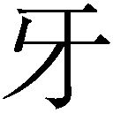
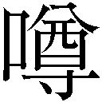

| セブンスホールの魔女 (ガガガ文庫) | |
| 池田朝佳 | |
| (2013) | |
小学館ｅＢｏｏｋｓ
セブンスホールの魔女
池田朝佳
イラスト ふゆの春秋

強い風が吹いていた。冬らしい風であり、高層ビルの谷間に吹くビル風でもある。
その風にコートを煽られながら、一人の青年が歩いている。
広い車道の中央を、ただ一人、歩いている。
車道を行き交う自動車の姿はない。道路だけではなく、青年の眼前にそびえ立つ高層ビルもまた、静寂に包まれている。
この場所に人の気配はない。アスファルトにはところどころヒビが入り、建物の窓ガラスには割れているものが目立つ。手入れをされているべき街路樹は、あるいは立ち枯れ、あるいは野放図に枝を伸ばしていた。
ただ冬の太陽だけが白々と、歩く青年を見下ろしている。
本来、人々の活気で満ちあふれているはずのこの街は、廃墟なのだ。
空は青く、吹く風は切るように冷たい。青年は、その風の冷たさも意に介さず、ただ、ビル街の中心を目指して歩いている。
青年の正面から、一際、強い風が吹く。
青年──泉野原アカザは、そこでようやく、歩みを止めた。
ビルの谷間、複数の車道の交叉する場所。無人のそこは、円形の広場のようでもある。
無人の街に、銃声がとどろく。
今まさに、建造物の谷間をすり抜けて音もなくアカザにを突き立てようとしたもの──大蛇が、身をくねらせながら、四散した。
アカザの手にはいつのまにか、小さな回転式拳銃が握られている。
アカザは、その銃弾がもたらした想定通りの結果に、微かにうなずく。
そして、交差点の向こう側、この街の中心に当たる場所、目の前に建つふたつのビルを仰ぎ見た。
地上から見上げる高層建築物の間には、本来、青空が見えるはずだ。
今、そこには、空を覆い隠す雲霞のごとき怪物の群れがいた。
石鬼、妖鳥、悪戯妖精──
いずれも翼を持つ怪物たちは、アカザただ一人の行く手をはばむためだけに集っている。
かちり、かちり、かちり。そんな怪物の群れなど、意にも介さず、アカザは手にした回転式拳銃に銃弾を込め直す。
集う怪物の数は数百で収まるだろうか。
その怪物たちすべてが、ガラス玉に似た無表情な目で、じっとアカザを見つめている。
かちり。五発目の弾丸が、弾倉に収まる。何百もの生物がいるにも拘わらず、ビル街に落ちるのは、しんとした静寂だ。
アカザは、視線を怪物たちに向ける。その眼差しは強い。見る者がいたならば、その力だけで、怪物を退けることさえできるのではと、思うだろう。それほどまでに、アカザの瞳には一途な意志が込められていた。
「ふ──」
アカザは口元に笑みを浮かべる。
二十歳という若さには不釣り合いな、不敵な笑み。それは、彼の絶対の自信を表している。
たとえ、何千匹、何万匹の怪物がいようとも、決して自分の目的をはばめはしない。
その確信がアカザにはある。
キィーーーーーーーーーーー
妖鳥の一匹が甲高い鳴き声をあげる。
その鳴き声をきっかけに、怪物の群れが動く。
ビルの谷間から、朽ちた街路樹の間を、倒れかけた街灯の間を、沈黙した信号機の間をすり抜けて、あるいは羽ばたき、あるいは滑空し。か弱い旅人を暗雲が包み込むかのように、怪物の群れ全体が、アカザ一人を標的として、迫ってくる。
また、銃声が響く。
暗雲に穴が開く。
たった一発の弾丸で、アカザの間近まで迫った数十体の怪物は、吹き飛ばされ、霧散した。
弾丸を中心に発生した、衝撃波の仕業だ。
それでも残る怪物たちは、ひるむ気配もなく、アカザめがけて押し寄せてくる。
無人の交差点は、今や怪物に埋め尽くされようとしている。
その中心に立つアカザの武器は、たった一挺の小さな回転式拳銃だけ。
アカザは拳銃の引き金にかかった指に力を込める。
「無駄だ」
怪物たちに聞かせる気もなく、小さくつぶやく。
何百何千の怪物も、アカザの敵ではない。アカザの目的は、ただひとつ。この怪物の群れの先にある〈穴〉の破壊。
十年前、アカザは〈穴〉のせいで両親を失った。
それ以来、アカザはたった一人でただひたすらに、〈穴〉の破壊を目指してきた。それを目指す自身の想いは誰よりも強固であるという自負が、アカザにはある。
〈穴〉を破壊するまで、アカザは負けるわけにはいかず、負けるつもりもなかった。
また銃声が響き、怪物たちが霞となって消えていく。
一発、二発、三発──
装塡。そしてまた、銃声。
アカザは、たった五分間で、すべての怪物を消去した。
それからほんの少しだけ時が過ぎ──。
ビル街の交差点の中央で、アカザは仰向けに倒れていた。
その胸の上に、少女がまたがっている。柔らかそうな白い髪と紅い瞳の、妖精のような少女だった。
「いやあ──惜しかったね」
少女はアカザの胸の上で、唇を三日月の形につり上げながら、ニヤニヤと笑っていた。
華奢な少女だ。体重はアカザの半分ほどだろう。だというのに、アカザはその身体を押しのけることさえできない。それどころか、指を動かすことさえできずにいる。
「がぁっ............！」
うめき声を出すだけで、精一杯だ。
少女はアカザの首に、右手を添えている。
そっと優しく添えているだけなのに、アカザの身体は、ギリギリときしむ音がしそうなくらいの、圧倒的な力で押さえつけられている。
「うふふ......苦しい？」
少女は笑う。
アカザは今、自分に起こっていることが信じられずにいた。
怪物の群れを消したアカザは、ビルとビルの間の空に浮かぶ〈穴〉を見た。そして、〈穴〉を目指そうとしたとき、目の前にこの少女は現れたのだ。
「ワタシは、守護者。〈穴〉の守護者だよ」
少女はそう名乗った。
完全な不意打ちだった。アカザは、周囲にはすでに何もいないと、そう認識していた。だというのに、守護者を名乗る少女は、アカザの目前、銃口を突きつけるよりも抱きしめるほうが楽そうなくらい間近に、忽然と現れたのだ。
アカザは一歩跳びすさり、少女の額に回転式拳銃の銃口を突きつけようとして──少女が元いた位置には、いないことに気付く。
少女はアカザの伸ばした腕の内側に、胸元すれすれの位置に立ち、アカザを見上げていた。
アカザは、少女から目を離してはいない。何をするか分からないその全身を注視していたはずなのに見失い──少女は今、別の場所にいる。
移動という経緯をまったく無視して、少女はアカザの間近にいる。
「転移──？」
この少女は、「距離を無視」する魔法の使い手なのか。
「さあね」
アカザの問いかけならぬつぶやきに少女は答えて、くすりと笑う。
アカザを背後から衝撃が襲ったのは、次の瞬間だった。
「かは......っ！」
大きな鉄の塊が、背中に激突したような衝撃。アカザは前のめりに倒れそうになりながらも身をよじり、背後に拳銃を向ける。
そこに、目の前にいたはずの少女がいた。
「──!?」
衝撃を受けた瞬間は、確かに目の前に立っていた。少女はアカザの前と後ろに、同時に存在していたのだろうか──？
混乱しながら、アカザは引き金を引き絞ろうとする。なんにせよ、この少女は〈魔女〉であり、自分の敵なのだ。
だが、やはり少女は目の前から消え失せて──もう一度、アカザを衝撃が襲った。
アカザはアスファルトの上に、倒れた。
そして、その身体の上に、少女はのしかかってきたのだ。
「ねえねえ、何か答えてよう。ワタシ、おしゃべりするの好きなんだよう」
「あ......がっ」
「あ、ごめん、ごめん、これじゃあ、答えられないよねえ」
少女の言葉と共に、アカザの首を絞めている力だけが、ふと緩んだ。身体はまだ動かせない。
「ほら、これで話せるよね？」
少女の微笑みは、そのままアカザの屈辱だった。衝撃のせいで、複数箇所の骨が折れているらしい。身体は熱く、ズキズキと痛んでいる。だが、その痛みを意識できないほどに、悔しくて悔しくてたまらない。
「殺せよ......っ！」
かみ殺してやりたい──アカザは歯をむき出して、吠えるように叫んだ。
「あははははは！」
アカザの言葉を、少女は笑い飛ばす。
その笑みを口元に浮かべたまま、少女はすうっとアカザの頰を撫でた。
「そんな、自分の負けた相手に殺せ、だなんて！ 豚鬼に囚われた戦うヒロインみたいなこと言われても。大丈夫大丈夫、優しくしてあげるからさあ──」
「本気だ！ 殺せ！」
今できる限りの力をこめて、アカザは叫ぶ。少女はそんなアカザを見下ろしながら、くすくすと嗤い続ける。
「冗談を聞く気分じゃないみたいだねえ。ワタシみたいな美しい〈魔女〉に押し倒されてるんだよ？ 太ももの感触、気持ちよくないの？」
「おまえ、最悪だ......！」
その罵りの言葉に、少女はぱあっと紅い瞳を輝かせた。
「あ、イイネ！ 最悪か！ 自称じゃなくて、他称ってところが最高。『人呼んで〈最悪の魔女〉！』次からは、そう名乗ることにしよう」
「殺すつもりじゃないなら、どうする気だ!?」
少女は、敗者をなぶるためだけに、こうしているのか。
いや。アカザはもっと悪いなにかが起こる予感がした。
「ワタシは優しいんだ。だから、オマエを殺したりしない」
少女はアカザに顔を近づけて、微笑んだ。
「じゃあ、〈吸収〉か......!?」
〈魔女〉だけが可能とする方法をアカザは口にする。少女はふるふると首を振った。
「まさかぁ！ なんでワタシがオマエなんかを〈吸収〉しなくちゃいけないんだよ！」
声を立てて、少女は嗤う。
「さっき、惜しいって言ったけど、アレは噓。全然全然、惜しくなんかないよ。オマエなんか、何人いようがワタシは倒せないし、〈穴〉は壊せない！」
アカザの今までの人生を、少女は強烈に否定した。
「強い目だねえ。頑固そうなまっすぐな目だねえ。いいねえ」
ニヤニヤと少女は嗤う。アカザの屈辱に愉悦を感じていることだけは、間違いない。
「このまま、オマエを殺すのは、簡単。でも、それはしない」
「だから、どうする気なんだ......」
ムキになっても、この女を悦ばせるだけだ──アカザは、声を荒らげるのを止める。少女はそんなアカザの耳元に、唇を寄せる。
「かわいそうにねえ。そんなに、一途なのにねえ」
「..................」
「ワタシは、オマエに呪いをかける」
吐息とともに、アカザにそんな言葉を告げた。
「のろい？」
「遅延の呪文じゃないからね」
「........................」
「ちゃんとツッコんでくれよ。いいかい、〈呪い〉だ。オマエの一番大切なもの、オマエを形作っているものを、奪ってあげる」
「やめろ!!」
オマエの一番大切なもの。その言葉が何を意味しているのか、アカザは一瞬で理解した。それは、アカザを形作るものであり、ひとつしか、思い浮かばなかった。
「おまえから、魔法を奪ってあげる」
〈最悪の魔女〉は、アカザが思った通りの言葉を口にした。
「やめろ......やめてくれ......!!」
アカザの言葉は、拒絶よりも嘆願に近かった。喉の奥で絡んだ声が、絞り出される。
それだけは、絶対に嫌だった。
「あれ？ もしかして泣いてる？ でも、ダメダメ、許してあげないよ♪」
確かに、アカザの目尻には涙がにじんでいた。
少女は、嗤い続けている。
「でも、ちょっとは素直になったじゃない？ ご褒美にキスしてあげようっと♪」
少女は、仄かに赤い唇を、汗のにじむアカザの額に近づけた。
「頼むから......お願いだから......やめてくれっ......！」
情けない。こうして、自分を敗北させた相手に懇願することしかできない。屈辱を感じながら、アカザは少女に向かって叫ぶ。拒もうにもはばもうにも、アカザは未だに、指一本動かすことができない。
ゆっくりと少女の顔がアカザに近づく。
触れるか触れないか──静かな額への口づけは、祝福に似ていた。
氷でできた刃を差し込まれたような感触を伴っていたけれど。
強烈な痛みと冷たさが、アカザの額に生じていた。
「キスしちゃった♪」
ぺろりと少女が唇を舐めてみせる。
「分かるだろ？ ワタシの呪いが、オマエの身体の中に入って犯しているのがさ」
額から差し込まれた冷たさと痛みは、アカザの身体中に広がっていく。
「ア.........が......っ」
うめき声が漏れる。その痛みはあまりに鋭くて、アカザは、呼吸さえできなくなった。痛みは額からのど元へ、のど元から胸へと広がる。少女はまだ何かアカザの上で言っているが──その言葉を理解することもできない。
ただ、アカザの身体からようやく身を離した少女が、最後に言った言葉。それだけは長い間、頭の中で反響し続けた。
「次に魔法を使ったら、オマエは死ぬ」
こうして最強とも呼ばれた〈魔力持ち〉泉野原アカザは──「ただのひと」になった。
「あの──泉野原アカザさん、ですか？」
彼女はアカザが呪われてから、ちょうど三か月目に現れた。
あの日、守護者を名乗る少女は姿を消し、アカザは無人のビル街に取り残された。その後の記憶は曖昧だ。気がつけば病院にいた。
最初のうちは、もう魔法が使えないということが信じられなかった。だが、使おうとすると、あの呪われたときの冷たさを、額の内側に感じた。
このまま魔法を使えば死ぬ。確かに、そう感じられた。
傷はすぐに癒えたが、この三か月間、アカザはずっと自宅のマンションに閉じこもっていた。
ただただ、何も考えたくなかった。
泉野原アカザにとって、〈魔力持ち〉であるということは彼のすべてだった。アカザがずっと願い続けてきた、〈穴〉の破壊という願いを叶える、唯一の手段だった。
それを失ったらどうするかなんて、考えたことさえなかった。
だから、何もできなくなった。
眠たくなったら眠り、腹が減ったら食べ、それだけをひたすら繰り返した。
気力のみならず、思考力までもが、すっかり摩耗していた。
ついさっき、マンションの入り口で呼び鈴が鳴ったときにも、モニターで確認さえしなかった。そのまま、入り口の自動ドアを開けた。
「こちら、泉野原アカザさんのお宅でしょうか？」
しばらくして、部屋のインターホンから女性の声が聞こえても、
──ピザか何か頼んだっけ。
そんな気持ちで玄関の鍵も解除し、入ってくれと許可をした。
そうしたら、部屋の中まで、この少女が入ってきたのだ。
「泉野原アカザさん、ですよね？」
見覚えのある制服を着た少女だった。小さな顔の中で大きな瞳が輝いている。赤く長い髪はまっすぐ伸びて、白い肌を彩っている。小さな帽子を模した髪飾りの黒が、赤い髪によく映える。身長は高くもなく、低くもない。短めの制服のスカートから伸びる、ほっそりとした脚がアカザにはまぶしく見えた。
華奢な身体をかがめ、少女はなんの憂いも迷いもなさそうな明るい微笑みを口元に浮かべ、じっとまっすぐにアカザを見つめている。その瞳が紅いということが、アカザに「最悪」を想起させ、一瞬、胸が痛んだけれど──
「はじめまして。〈世界対策株式会社〉のハルと申します！」
深く大きく勢いよく、ハルと名乗った少女はおじきをした。ぴょこん！ と赤い髪が跳ねる。怪しげな色香さえただよっていた〈最悪の魔女〉とは、似ても似つかない。
そこで、アカザは初めて、少女が大ぶりの杖を背負っていることに気が付いた。
〈魔女〉と呼ばれる者たちが魔法を使うためには、いくつかの条件を整える必要がある。収束具と呼ばれる道具もそのひとつだ。杖は、収束具としてよく使われるもののひとつ──つまり、この少女は〈魔女〉なのだ。
「高坂ゾフィーの使いで参りました！」
少女は誇らしげに言う。アカザは眉をしかめた。
〈世界対策株式会社〉が自分に用事があるという。今更。
アカザには、何の心当たりもない。
「なんの用で......？」
直接人に向けて出した久しぶりの声は、かすれていた。そのせいか、その問いかけが聞こえなかったのか、ハルはもの珍しげにアカザの部屋をながめ──
「窓、開けてもいいですか？」
そう言って、アカザの返事も聞かず、ベランダの窓を開けた。
さあ──と、微かな風が入ってくる。季節は春を過ぎ、いつのまにか初夏になっていた。さわやかな──アカザにとっては、久しぶりの新鮮な空気だった。
「いいお部屋ですね！」
「どこが......？」
アカザはようやく言葉を返した。お世辞にしても、あんまりな言葉だと思ったからだ。
確かに、アカザの部屋はそれなりに広いマンションの一室だ。寝室は十二畳あり、ＬＤＫは二十畳の１ＬＤＫ。二十歳の若造にとっては、分不相応なまでにいい部屋だと言える。価格は確か、この国の通貨単位で三千万円くらいだった、とアカザはぼんやり考えた。使い道が思いつかなかった貯金で数年前に買ったものだ。おかげで今も、衣食住の住には困らない。
だが、その部屋は今、半透明のゴミ袋やコンビニ袋、空き缶、空きペットボトルに宅配ピザの空箱──そんなゴミで埋め尽くされている。アカザの荒れ果てた心持ちと、この三か月間の暮らしがはっきりと現れていた。ハル自身、そのゴミとゴミ袋の山をかき分けるようにして、アカザの前にやってきたし、かき分けながら窓を開けたのだ。
「いいお部屋です。こんなに空が近くて、羨ましいです！」
その惨状など見えていないかのように、ハルは窓から、空を仰ぎ見る。二十階建てのマンションの最上階にある部屋からは、空しか見えない。
真っ青で眩しい空に、ハルの赤い髪がよく映えた。
この少女の言葉は、どうやらお世辞ではないらしい。
それに気付いたとき、アカザの刺々しい鬱屈は、ほんの少し薄らいだ。
「あ！ そうだ、名刺名刺！」
ぴょんと、跳ねるような仕草で窓際から戻ってきたハルは、ごそごそと名刺を取り出し、いかにも慣れていない様子で、アカザに差し出す。
「本日三時にお迎えにあがると、ご連絡してますよね？」
名刺を一応受け取りながら、アカザはまだボンヤリしている頭で考えてみるが、さっぱり心当たりがない。
「なんのことだ？」
「ええっとですね......一週間ほど前に、メールで連絡を差し上げておりますが」
「見てないよ、そんなの」
メールのチェックなど、この三か月していない。
「メールには、『ご返答がない場合は、了承したものとして、迎えの者が参ります』って書いてありましたよね！ だから来ました！」
にこにこと笑みを浮かべたまま、自分の言葉になんの疑いもない様子でハルは言う。
「なんだそれ......」
──悪質な業者メールか。
「迎えにって......車でも来てんの？」
「いえいえ、〈魔女〉が車で移動だなんて、と言いたいところなんですけど」
ハルは照れたような笑顔を見せる。愛嬌のある、かわいい笑顔だった。
ここ三か月の鬱屈も忘れて、アカザは、一瞬、その笑顔に見惚れた。
「空を飛んでのご案内は、今、ちょっとできなくて。車を用意してあります」
アカザがハルについていく気になったのは、その笑顔のせいかもしれなかった。
三十分後。アカザは〈世界対策株式会社〉極東支社の来客用会議室にいた。
ソファもテーブルも機能的であるだけでなく、美しく整えられている。窓際に置かれた鉢植えは、潤いを感じさせる。
アカザはＴシャツとジーンズ、ぼさぼさ髪に無精髭という家にいたままの出で立ちだ。その格好で本革のソファに腰掛けているのは、場違いという言葉の体現だった。
「素敵な会議室ですよねえ」
出会ったときからずっと笑顔のハルは、ここでも笑顔のままソファに腰掛け、はしゃいでいるようにさえ見える。
隣にいるアカザは、笑う気にはなれなかった。
逆らうほどの気力がなかったということもあるが、ついつい、勢いに飲まれてここまで来てしまった。だが、たいして愉快な事態になるとも思えない。
アカザは、深く嘆息する。
「アカザさん、わたし、強引過ぎました......？」
アカザのため息に、一瞬でハルの笑顔がしぼんだ。アカザが気分を害していようとは、思ってもいなかったらしい。
「いや、えっと......」
ハルを責めるつもりはなかった。落ち込ませるつもりもない。かといって、こういう場合どう言ったらいいのか──
「おまたせしたね！」
いいタイミングで、あるいは悪いタイミングで、勢いよく扉が開く。
現れたスーツ姿の美女をアカザは知っていた。
「高坂ゾフィー......」
初対面ではあったが、この国にいる〈魔女〉で、彼女のことを知らない者のほうが稀だろう。この建物の主、すなわち〈世界対策株式会社〉極東支社の最高経営責任者だ。
高級ブランドのスーツを自然に着こなした、大柄な美女。隙なくメイクされた派手な顔立ちは東洋人に見えず、かといって西洋人にも見えない。年齢も不詳。かなりの力を持つ〈魔女〉であるという点だけは、広く知られている。
「私をご存じとは光栄だね。初めまして、泉野原アカザ！」
ゾフィーはアカザの手をとり、ぶんぶんと振る。どうやら、握手のつもりらしい。
「まあまあ、腰掛けてくれたまえ。わざわざご足労いただいて、申し訳ない！」
「俺にどんな──」
「いやいや、話には聞いていたが、君は若いね！ おっと、すまない、お茶のおかわりを持ってこさせよう。コーヒーのほうがいいかな？」
「いや、それはいいから──」
「うちのコーヒーマシンはなかなか良くてね！ エスプレッソが美味いんだが、カプチーノも美味しく淹れられるのが嬉しいんでついココアパウダーとシナモンシュガーを......」
「高坂さん、用件を！」
どこまでも続きそうなゾフィーのどうでもいい言葉を、アカザは無理矢理せき止めた。
それに気分を害した風もなく、ゾフィーは愉快そうにアカザを見つめる。
「高坂さん、俺を呼んだ用件を聞かせてもらいたいのですが」
「余裕がないのは、いただけない」
ふふん、とゾフィーは笑う。言葉通り、余裕そのものの笑みだ。
「ちょっと長くなるが、私の話につきあってくれたまえよ」
そう前置いて、ゾフィーは話し始めた。
「昔々。具体的には、四十年前。この世界は、別の世界と衝突した。今日では、〈世界衝突〉と呼ばれているできごとだ。〈世界衝突〉によって、世界は変貌した」
教師のような口調で、ゾフィーが話し始めたのは、世界が今の形である理由だった。
「世界の九か所に、真っ黒い穴が現れた。これが、いわゆる〈穴〉だ。〈世界衝突〉の痕跡と考えられている。そのうち二つが破壊され、今は七つになっているね」
〈穴〉。その言葉を聞いて、アカザの身体はぶるっと震えた。
この〈穴〉の周りでは、かつて神話・伝承で語られた生物にも怪物が現れて、暴れ回るという現象が起こるようになった。〈衝突災禍〉と呼ばれる現象の、代表的なものだ。この怪物たちは、この世界の建築物や生物に対して危害を与えることができるのに、どういうわけか、この世界の武器で倒すことができなかった。
「それが、何か？」
ゾフィーの話していることは、誰もが知っている世界のなりたちだ。それを今、説明されている意味が分からず、アカザはゾフィーに尋ねる。
「まあまあ。話の順序というものだよ」
ゾフィーはアカザの疑問を軽くいなした。
「なんら対抗策のないままに、世界は怪物に蹂躙されるかに思われた。しかし、怪物に対抗する力を持つ者たちが現れた。この力は魔法と呼ばれ、魔法を持つ者は〈魔女〉と呼ばれた。魔法を持つ者の大半は私のような、女性だったからね。泉野原アカザ、君のような例外は〈魔力持ち〉と呼ばれている」
「......三か月前までは」
自嘲を込めて、アカザはつぶやく。魔法を使えない〈魔力持ち〉など、ありえない。
「〈衝突災禍〉のような天変地異に対抗するのは、本来ならば政府の役目だっただろう。だが、そうはならなかった。各国の政府が混乱し、〈衝突災禍〉や〈魔女〉の正体を摑みかねている間に、〈世界対策株式会社〉が設立されたからだ。〈世界対策株式会社〉は誰よりも早く〈魔女〉たちを束ね、独自に、営利目的で〈衝突災禍〉に対抗し始めた。そして、瞬く間に世界的な巨大企業となり、現在に至るまで、〈衝突災禍〉対策の依頼を、各国政府からほぼ一手に請け負う多国籍企業として、存在し続けている」
ここまで言って、ゾフィーは手元のカップに口をつけた。
「さて、泉野原アカザくん」
「──はい」
どうやら、ここからが本題だ。アカザは微かに緊張する。
「君は呪いを受け、魔法を使えなくなった。これは間違いないね？」
「......はい」
未だに認めるのに、辛い事実ではある。アカザは微かに目を伏せた。ゾフィーは、そんなアカザの痛みを味わうかのように見つめてから──
「君に、任せたい会社がある」
そう告げた。
「──はい？」
想定を超える話だった。
アカザの持っている情報に買い取りたいものがある、アカザに確認して欲しい情報がある、そんな頼みだと思っていた。雇用したいと言われる可能性も考えないではなかったが、それはないだろうと、打ち消していた。
アカザはもう、〈魔力持ち〉ではないのだから、〈世界対策株式会社〉が雇いたいはずがない。
だというのに、この国で一番有名な〈魔女〉は、今なんと言った？
「弊社──〈世界対策株式会社〉の実態が、多くの企業からなる複合企業であることは、知っているだろう？ そのうちのひとつを、君に経営して欲しいんだよ」
「いったい──何を言ってるんだ？」
「お願いします！」
じっと黙って二人の話を聞いていたハルが、急に割り込んできた。
「アカザさんに、うちの会社の社長になって欲しいんです！」
「うちの会社？」
アカザが問い返すと、ハルは大きくうなずいた。赤い瞳が、期待にキラキラ輝いて見える。
「泉野原アカザくん。彼女──ハルは、君に任せたいと考えている会社の社員なんだよ」
ゾフィーがハルに目線を送る。
「はい！ ゾフィーさんから、新しい社長は誰がいいって訊かれたときに、アカザさんにお願いしたらどうかって思って、それはすごく素敵なことだなって思って」
ソファの隣に腰掛けたハルは、アカザに向かってぐっと身を乗り出してくる。
初めて会った瞬間から続いているまっすぐな眼差しから、アカザは目がそらせなくなる。
横からはゾフィーがさらに話を続ける。
「君だって、いつまでもブラブラしているわけにはいかないだろう？ 大学受験でもしてみるかい？ これから生きていくための金はどうする？ 蓄えくらいはあるのかもしれないが、無限にあるわけでもないだろう。どこかでバイトでも始めるつもりかい？」
ゾフィーはアカザが、これから先のことについて何も考えていないことを、明らかに見抜いている。
「それはもったいない、と言っているんだよ。確かに君は、もう魔法を使えないのかもしれない。でも、失っていないものがあるんだよ」
「それって......？」
そんなものがあるならば、教えて欲しかった。
「それは──経験だ」
ゾフィーの言葉に強い力がこもる。
「今まで数々の〈衝突災禍〉に対処してきた経験、中でも単身で〈穴〉に挑んだ経験──それは、とても貴重なものだよ」
「そうですよ！」
ぶん、と髪を揺らしてハルが合いの手を入れる。
「でも、そんな経験も、ただ抱えているだけでは色あせて価値を失う。私は君の経験を、単なる居酒屋の自慢話にはしたくないんだ」
「もったいないです！」
「でも、会社を任せられるなんて」
ただひたすらに、〈魔力持ち〉稼業を続けてきたアカザだ。それで日々の糧を得ていたことは間違いないが、金銭に強いこだわりを持ったことはなく、商売だと考えたこともなかった。普通の人々の営みに対して、アカザははっきりと無知だった。
「なるほど、会社経営の経験など君は皆無だろう。だが、経営の経験者なら、私の周りにはいくらでもいる。恐れることなど、何もない。いくらでも、君をサポートできる」
「そうですよ！ お手伝いできます！」
「──俺は」
アカザは何かを言い返そうとする。
だが、次の言葉を紡ごうとする前に、ゾフィーがさらに言葉を重ねてくる。
「我が社の目的は、〈衝突災禍〉ひいては〈穴〉から人々を守ることだ。君は、違うのか？」
「アカザさんは、〈穴〉を消そうとしたんですよね？」
ハルはアカザに向かって身を乗り出したままだ。その真剣な眼差しに対しては、こちらも真剣に答えなくてはならない。アカザはそんな気になってしまう。
「そうだ、けれ、ども......」
「どうか私たちに、君の力を貸して欲しい」
「お願いします！」
ゾフィーとハルは、アカザに向かって深く頭を下げる。
怒濤のような説得だった。
会社を経営するなど、アカザにとって、一度として思い描いたことのない話だ。
それがどんなものなのか、さっぱり想像がつかない。
それでも、アカザは久しぶりに自分の心が動くのを感じていた。
どんなことが待ち受けているにせよ、この三か月間の空虚な日々よりは、ずっとマシなのではと思えた。
「経営って──具体的には、何をすればいいんだ......？」
「会社の持っている機材や人員を使い、〈衝突災禍〉対策をして、金を稼いでいくんだよ」
アカザが疑問を口にすると、ゾフィーは即座に答えた。
シンプルな答えだ。一瞬、分かったような気になるが、さっぱり具体的ではない。
それでも、アカザの気持ちは動いていた。
この申し出を、受けたくなる。
でも。
アカザは今、勢いに呑まれようとしている。それが悪い結果を生むとは限らないが、正常な判断ではないとも思えた。ためらわれる。そんなアカザの逡巡もまた、ゾフィーにはお見通しであるらしい。
「迷うだろうね」
「そりゃあ......」
「では、君の受け取る報酬の話をしようじゃないか」
ゾフィーの声がほんのわずかに、低くなる。
「報酬......」
金銭の話が、自分の意志決定に影響を与えるだろうか。〈魔力持ち〉であったときには、それなりに高額な報酬を受け取ることもあったけれど、執着したことはない。
「──君の呪いを研究しよう」
どきり。アカザは己の心臓が高鳴るのを聞く。
それは、まさに、アカザの弱点だ。
「呪い、を」
アカザの唇が、囁くように繰り返すのを待ってから、ゾフィーは言葉を続ける。
「弊社には、〈世界衝突〉、〈衝突災禍〉、そして魔法を研究する部門がある。ここで、君の呪いについて研究する」
ゾフィーの口元に、また、うっすらとした嗤いが浮かんでいる。
「必ず解呪する、とは約束できないが──成果は、期待できるよ」
その笑みに対して、楽しそうだと、アカザは思う。
もう君の答えは分かっていると、この嗤いは語っている。
この、有名な〈魔女〉は、あの〈最悪の魔女〉と同じように、アカザにとって一番大切なものを知っている。だから、こんなにも余裕のある態度で、交渉に臨んでくるのだ。
「最悪の......一歩手前」
このゾフィーという〈魔女〉は、〈最悪の魔女〉程ではないにせよ、アカザを翻弄している。最悪ではないけれど、最悪に近い。
「ん？」
アカザのつぶやきが聞こえたのか、聞こえなかったのか、ゾフィーは笑顔を崩さなかった。
「どうかな？ この報酬があっても、君はまだためらうのかい？」
──呪いを解きたい。
この三か月の間、ほんのひとときさえ頭から離れることのなかった、今のアカザにとって唯一の望みだ。それが叶うかも知れない──
「......分かりました。お引き受け、します」
そこに何が待っていようとも、アカザにはもう、迷う余地はなかった。
「ありがとう」
満足げなゾフィーの笑顔になぜか不安を覚えて、アカザの心に後悔がよぎる。けれど。
「よろしくお願いします！ わたしたち、〈空飛ぶ魔女〉です！」
ハルの満面の笑顔が、ほんの少しだけ、アカザを前向きな気分にさせた。
「〈空飛ぶ魔女〉？」
アカザの問いかけに、答えたのはゾフィーだった。
「君の会社の名前だ。この会社の業績を向上させ建て直すことが、君の最初の仕事だよ」
「はやまったかな......」
アカザが社長となる〈空飛ぶ魔女〉──正式名称、株式会社フライング・ウィッチに出社するまで、一週間の猶予を与えられた。
その一日目、〈空飛ぶ魔女〉に関する資料を読みながら、アカザは早くも後悔していた。
昨日、アカザが社長を引き受けたあのとき、ゾフィーは確かにこう言った。
『この会社を建て直すことが、君の最初の仕事だよ』
このセリフから察するに、〈空飛ぶ魔女〉は傾いている会社なのだ。
会社のことも経営のこともアカザには分からない。資料にある数字の意味するところが理解できない。ただ、負債という項目に書かれた一千万円近い数字が、アカザの不安をあおる。負債というのは、借金のことだろう、と乏しい知識の中で推測する。
ゾフィーはアカザに社長になってくれと言った。経営に関してはサポートするとも言った。
──サポートされればなんとかなるのか？ なんとかなるんだったら、俺以外に頼んだほうがいいんじゃないか？
不安と後悔を抱えながら、アカザは首をひねる。
そして、もう一度、思い直す。
アカザは、自分にかけられた呪いを解きたかった。そのためならば、どんなことでもしようと思った。だから、それが、社長などというわけの分からないことでも、引き受けた。
──やるしかない。
それが、アカザの結論だった。
準備をしていれば、一週間などあっという間に過ぎる。最初はそう思っていた。
手始めに髪を切り、ぽつぽつとまばらに生えていた無精髭を剃り、〈世界対策株式会社〉の関連会社に支給される制服を申し込んだ。
久しぶりに眺めた鏡の中のアカザは、社長という名称とさっぱり結びつかなかった。自分はこんなに頼りない外見だったのかと思った。
とにかく、会社とか社長とかいうものに、なんの知識もないという状況をなんとかしたくて、ネット通販で『誰でもできる会社経営』という本をネットで注文した。
これからは、今までと違う生活が待っているのだと、部屋のゴミをまとめて捨てて、三か月ぶりに掃除もした。
ここまでで二日が過ぎた。
三日目はやることがなくなった。趣味などありもしないアカザは、手持ち無沙汰を解消するため、フローリングの床に、初めてワックスをかけたりもした。元々、持ち物の少ないアカザの家は、あっという間にモデルルームのようになってしまった。
その日の夕方に届いた『誰でもできる会社経営』は、夜のうちに三回読んだ。目が冴えて眠れなかったのだ。しかし、目が文字を追うだけで、本の内容はさっぱり頭に入らなかった。
次の日に制服は無事届き、試着してみたが、特に問題はなかった。
アカザは〈空飛ぶ魔女〉について他になにか情報はないかと、調べてみることを思いついた。ネットで検索をかけてみると、ホームページは簡単に見つかった。
『〈空飛ぶ魔女〉は、〈衝突災禍〉対策を行う企業です』
そう書かれている他は、ちょっとした会社情報が載っているだけのそっけないページだった。会社情報も、株式を〈世界対策株式会社〉が百パーセント所有していることと、所在地と連絡先しか書いていない。代表者の欄は空欄だった。そもそも、更新さえ何年もしていなさそうな雰囲気が漂ってくる。もらった資料のほうが、よほど詳しかった。
アカザはさらに、話や評判を調べようとして、やめた。不確定な情報など、良いものだろうが、悪いものだろうが、いくら集めても、不安を増すに決まっていると思えたからだ。
これで、アカザが思いつく「やるべきこと」は完全に尽きてしまった。
どうにもこうにも落ち着かず、アカザは部屋の中をぐるぐる歩き回った。
寝るか食べるか歩くかをしながら、残り三日を過ごすことになった。
このまま、約束の出社の日は来ないのではないか。自分は、こうやってじりじりと不安を抱えながら、歩き続けるのではないか。そんな埒もないことを考えてしまうほどに、その一週間は、アカザにとって長かった。
ようやく迎えた約束の日、アカザは朝五時に目を覚ました。念のためセットしておいた目覚ましの時刻は午前九時。四時間も早い。しかも、頭は完璧に覚醒している。寝直す気にもなれなかった。
初めての出社は午前十一時からという約束だ。朝六時に出社するわけにもいかず、じりじりと時計を見つめて過ごし、午前九時を過ぎて、とにかく出社しようと決めた。
会社には、二十五分でついてしまった。
〈空飛ぶ魔女〉の入っているビルは、オフィス街ではなく住宅街にあった。
入り口には「第四十七世界ビルディング」と書かれていた。その名前からここが、〈世界対策株式会社〉の所有する建物のひとつなのだと分かる。
外見の印象は、オフィスビルというよりもマンションだ。実際に、三階以上のフロアは住宅であるらしい。ベランダには布団や洗濯物が干されている。
建物の一階にはコンビニと喫茶店。アカザの会社は二階だ。
約束の一時間半前に出社するのは迷惑だろうかと考えながら、会社の入ったビルの前をゆっくりと往復していたアカザは、三十一往復目で我慢できなくなった。これ以上うろうろしていたら、不審者扱いされるだろう。
〈穴〉に挑もうと決めたときも、こんなに緊張はしなかった。そんなことを考えながら、アカザはビルに足を踏み入れた。
エレベータホールでエレベータを待ち、ボタンを押していないことに気付き、二階なのだから階段を使えばいいじゃないかと思い直し、階段はどこかと周囲を見回し、内階段が見つからなかったので、非常階段を使って二階に上がった。ここでようやく──本当にようやく、アカザは、ここまで狼狽している自分が馬鹿馬鹿しくなった。
──向こうからやって欲しいと言ってきたことだ。俺がうろたえる必要なんかない。
そうしてたどり着いた目的地は、なんの変哲もないマンションの一室だった。扉には、金色の文字で、Flying witchと書かれた小さな木製の表札がかかっている。
その可愛らしい装飾に、アカザはハルを連想した。
意を決して、呼び鈴を鳴らす。
インターホンによる応答はなく、急に扉が開き、アカザは飛び退いてしまった。
「あの......？」
たった今扉を開けた女性が、戸惑いを見せ──すぐに微笑んだ。
「泉野原さんですね？」
「は、はい」
女性の声は落ち着き払っていて、アカザは自分の見せた反応が恥ずかしかった。
「おはようございます」
「おはようございます......」
挨拶を返す語尾が、つい弱々しくなってしまう。女性の落ち着いた笑顔は変わらない。
年齢はアカザより少し上の、二十代半ばだろうか。きちんとセットされた茶色い髪、フレームレスの眼鏡はいかにも知的だけれど、ふっくらとした頰は可愛らしい。小柄だけれど、胸元はなかなかの迫力で、タイトスカートと、寒色系のブラウスがかえってアンバランスな色気を感じさせる女性だった。女性はアカザを扉の内側に促す。
「あ、あの......」
てっきりハルが出迎えてくれると思っていたアカザは、再び緊張してしまっていた。
「初めまして。南大東コルコと申します。〈魔女〉ではありませんが、当社の事務および経理を担当しております」
その緊張に気付いているのかいないのか、コルコは深々と頭を下げる。自然で姿勢の整った、綺麗な会釈だった。
「い、泉野原アカザです。こちらこそ、よろしくお願いします。社長を担当させていただきます」
対してアカザは、会釈も言葉も自分で分かるくらい不自然だ。でも、改善方法はまったく分からない。
「緊張なさってますねえ」
コルコが、妙にしみじみと口にする。
「わ、分かりますか」
「足が震えてますよ」
「ええ!?」
アカザは慌てて自分の脚を見下ろす。
「いえ、冗談ですけど。......緊張をほぐそうとしたんですが」
コルコに苦笑されてしまった。
「すいません......ほぐれません......」
それどころか、アカザの緊張と萎縮は高まるばかりだ。
「うちは小さな会社ですから。そんなに緊張しなくてもいいんですよ？」
「そうしたいんですが......」
緊張したくてしているわけがあるか──そう反論したいくらいだった。
「それでは、この会社について、ご説明しましょうか？」
「あ、そうですね！ お願いします！」
自分がこれほどまでに緊張しているのは、結局、この会社について何も理解していないからだ。未知というのは恐ろしい。アカザはそう結論づける。
まあ、おかけくださいな──コルコは小さな受付スペースにしつらえられた椅子を、アカザに勧めた。アカザがぎくしゃくと腰を下ろすと、その横の椅子を向かい会うような位置に動かして、コルコも座る。
「ご存じのことも多いかとは思いますが──当社は、〈世界対策株式会社〉が、１００％出資している──いわゆる、子会社と呼ばれる小企業のひとつです」
「はい」
それは知っている。アカザはうなずく。
「〈世界対策株式会社〉は〈穴〉に関わる様々な事業を行っています。その多くは、公共事業として、政府による支援の元に営まれていますが、その中でも一番多くの資金が投入されているのが、〈衝突災禍〉対策です」
説明に興が乗ってきたのか、コルコの言葉はよどみない。
「当社の主な業務も、〈衝突災禍〉対策となります。〈衝突災禍〉の発生した、もしくは発生の疑いがある地域に赴き、そこに現れた怪物および、怪物の発生源を消去することです」
「はい、分かります」
それは、三か月前までアカザがフリーランスの〈魔力持ち〉として受けてきた仕事と同じことだった。
「解決した〈衝突災禍〉のランクにより支払われる、政府ないし自治体からの報酬、〈衝突災禍〉の怪物の残す遺物の売却益が我が社の収入源です」
「──はい」
会社というのは、利益の追求を目的とする団体だ。コルコが話したのは、〈空飛ぶ魔女〉が、どうやって儲けているかの説明だった。
「社長は以前、フリーランスとして〈衝突災禍〉対策をなさっていたんですよね」
「そうですね......一応」
アカザはうなずきながら、苦笑していた。アカザとしては、〈衝突災禍〉対策というより、〈穴〉の破壊を目的とした行為だった。
「他の企業と一緒に仕事をされたことはございます？」
「そうですね、それも、一応」
アカザの雇い主が、同時に〈世界対策株式会社〉関連企業を雇うことも確かにあった。ただ、アカザには誰かと一緒に戦うという意志がなかった。復讐は自分だけのものだった。
「でも、他の人たちがどんな仕事をしていたかまでは、あんまり......」
アカザは、他人に興味を持っていなかった。
「そうですか。まあ、業務の詳細に関しては、おいおいまたご説明いたしますけど、当社における社長のお仕事について、話しておきましょうか」
「それは、ぜひ」
自分は、何をすればいいのか。買った新書の内容が頭に入らなかったこともあり、アカザはそのことについて、まったく理解していない。
「社長の仕事のひとつは経営ですね」
「けいえい」
社長の仕事は経営。──当たり前といえば当たり前なのだが、アカザは何をどうしていいか、さっぱり分からない。凍り付いたアカザに、コルコが微笑みかける。出来の悪い生徒に対する教師のような、寛容で優しい微笑みだった。
「ご心配なさらないでください。そちらの経験がないというお話は、伺っています。サポートさせていただきますので、どうぞ、ご安心ください」
「はい、ご迷惑、おかけします」
もちろん、ゾフィーはこんなことは先刻承知でアカザを誘ってきたのだ。それは分かっているものの、情けない気分だった。アカザは自分が、「人からものを教わる」経験そのものが少ないことに、うすうす気付き始めていた。
「そして、社長のもうひとつのお仕事は、〈衝突災禍〉現場での社員に対する指揮および監督になります」
これがまさに、ゾフィーがアカザに期待していることだ。それでも、言葉にされた「仕事」は、今までアカザがやってきた「仕事」とはまるで違うことのようだ。不安というよりも、どこか憂うつな気分がアカザの内側で首をもたげる。
──俺に、できるのか？
そんなアカザの気分までを察してはいないのか、コルコが、ちらりと腕の時計に目をやってから、ぱっと顔を上げた。
「まあ、他の説明はおいおいということで──」
二人はまだ、玄関先の受付にいる。そういえば、そうだ。アカザはまだ、会社の中にさえ入っていないのだ。
「そろそろ、当社の社員の紹介をさせていだきますね」
気分を切り替えるためか、コルコはぱん、と軽く音を立てて、手を合わせる。
「ご存じの通り、魔法を使える人間のほとんどは女性です。うちの社員も全員、若い女の子なんですよー」
妙に楽しげに、コルコは玄関の奥の扉を指さした。磨りガラスのはまった、クリーム色の扉だ。
「はあ......」
「社長なら、きっと全員モノにできちゃいますよ！ ハーレムですね♪」
「はっ？」
今、目の前の女性がえらく下世話なことを言ったような。──いや、気のせいだ。アカザはそう思うことにする。アカザがうかがったコルコの顔は、先ほどと変わらない落ち着いた表情のままだ。
「こっちがオフィスです」
コルコは扉を開いた。
大抵の物事は思い通りにはならない。フランはそう思っている。
十年前から、フランの人生には望まない事件ばかりが起こり続けている。
「本日十一時から、新しい社長がいらっしゃいます」
「あ、そう」
だから、会社の事務方のコルコがこう言ったときも、特に感想を抱かなかった。
横の席でハルがやたらとニコニコしているのも気にならない。
とはいえ。
「ねえねえ、フラン。今度の社長はどういう人かな？」
最年少の社員であるサカナが話しかけてくるのを無視するほど、機嫌が悪いわけでもない。
サカナはフランによく抱きついてくる。
今もフランの胸元に顔を埋めるようにして、フランを見上げつつ話しかけてくる。フランは、サカナの頭を軽く撫でながら、彼女の言葉に答えた。
「〈魔女〉だろう」
「そんなの当たり前じゃない！ どういう〈魔女〉かって言ってるの！」
サカナがツインテールをぶんぶん揺らしながら叫んだ。この幼い少女はすぐに声を荒らげる。
「今までと大差ないだろう」
フランは、「社長」に期待することなど、もうすっかりやめている。
「じゃあ、今度もすぐいなくなるんだ」
つまんない──サカナは唇を尖らせる。いくらなんでも子供っぽい仕草だ。フランは苦笑したい気分になる。
「サカナは、社長がどんな〈魔女〉ならいいんだ？」
仮定の話に意味などないが、サカナに付き合ってもいいか。そんな気分でフランは尋ねた。
「おばさんじゃない人」
サカナは何もない頭上のあたりを見ながら、答える。サカナが考えごとをするときの癖だ。確かに今までの社長たちは、みな五十代の女性だった。
「怒鳴らない人」
続けて、サカナが言う。今までの社長たちは、思い通りにならないサカナに対して、しばしば怒りをあらわにした。そのたびに、フランは社長をなだめたり、拗ねてオフィスから出て行くサカナを捜しにいったりしたものだ。
「一緒にご飯を食べてくれる人」
今までの社長たちは、サカナどころか、社員と一緒に食事をしたことなどない。フランは気にしたこともなかったが。
「あとは〈魔女〉じゃなければ、一番いい」
「それは無理だ」
フランは断じた。
サカナは自分自身を含め、〈魔女〉が嫌いなのだ。
しかし、〈魔女〉ではない人間が、どうして自分たちのリーダーになれるというのだろう。
横ではハルの微笑みがなぜか大きくなっている。
「でもでも、フラン！」
「もし万が一、新しい〈魔女〉ではない人間が来たとしたら、私が社長とは認めない」
「えーーーーー」
フランの言葉に、サカナが不満げな声を漏らす。同時に、黙って話を聞いていたハルの顔から微笑みが消えた。何か、思い当たることでもあるのだろうか。
「どうした、ハル？」
フランが尋ねてみると、ハルは真剣な顔で口を開く。
「あのねあのね、フラン、新しい社長さんはね──」
ハルが何かを告げようとして──。
「みなさん、新社長がいらっしゃいましたよ」
コルコの声に、フランは壁の時計を見た。デジタル式の壁時計は、十時三十分と表示している。予定より、三十分も早い到着だ。
──ほら、思い通りにならない。
自分自身に向かって、フランはつぶやいた。
オフィスには、甘い香りが漂っていた。
二十畳ほどの広さの部屋だ。壁紙は淡いクリーム色、窓際の花瓶には花が生けられ、窓には水色に黄色い水玉のロールスクリーンがかけられている。壁際のロッカーは木製で、上にはむくむくとした熊のぬいぐるみが座っている。部屋の中央には大きな木製のテーブルがあり、その上にある数台のノートパソコンだけが、かろうじてここをオフィスだと主張していた。
今、入ってきた扉の反対側にキッチン、左手の壁にある扉はトイレだろう。
オフィスと言うより、手入れの行き届いたリビングか、カフェのようだ。
そのオフィスの中では三人の人間が、アカザを見つめている。
一人は大きな杖を背負った、長い髪の少女。ハルだ。アカザに向かってニコニコと微笑んでいる。
もう一人は、きっちりと切りそろえられた黒髪の、背の高い女性。年はアカザと同じくらいだろう。豊かな胸を強調するように腕を組み、薄蒼の瞳で鋭くアカザを見つめている。背には、ハルと同様に杖を背負っている。
そして、もう一人は茶色い髪を二つに束ねた、幼い少女だった。猫みたいにぱっちりした目が楽しげにアカザを見ている。手にはなぜか、カボチャ提灯をぶら下げている。
──この子はなんだ。
まず疑問をぶつけるべきか、自己紹介からするべきか。
アカザが迷った隙に、背の高い女性が口を開いた。
「フランです」
警戒をにじませた固い声音で名乗り──オフィスに沈黙が落ちる。
「ええと......」
コルコが軽く天を仰いだ。彼女としては、もう少しスムーズに社員の紹介を行いたかったのだろう。これではアカザの緊張が解けるはずもない。
「社長、我が社の社員である〈魔女〉をご紹介いたしますね」
コルコがまたぱん、と軽く手を合わせながら、にこやかに微笑む。今までの空気を、とりあえずリセットすることにしたらしい。
「彼女はフランです。当社では、私に次いで年長ですね」
「......よろしくお願いします」
改めて紹介されたフランは、アカザに向かって慇懃に会釈をする。
「彼女は、ハル。もう、お会いになってますよね」
「よろしくお願いします！」
ハルはまた、髪を跳ね上げながら元気なお辞儀をした。
「そして、彼女はサカナです」
「よろひく」
サカナと紹介された少女は、口をもぐもぐさせている。
「サカナ、キャンディを食べるのをやめて」
コルコがため息を飲み込みつつ、たしなめる。オフィスに漂っている甘い匂いの発生源は、この少女だったようだ。
そこでまた、気まずい沈黙が発生した。
「社員は、確か、五人でしたよね？」
アカザは、資料に書いてあったことを口にする。何か言わなければ、間が保たない。
「はい、社員は五人です。もう一人、いるんですが......ハル、オーガストは？」
「えっと、連絡は特に......」
「......社長、もう一人の社員は、どうやら遅刻のようです......」
コルコが眉間を揉みながら告げた。
この気まずい沈黙からして、オーガストという人物には、色々と問題があるらしい。どんな問題かまでは、アカザには想像できないが。
「あなたの自己紹介は？」
突然訊いてきたのはフランだった。彼女はアカザがオフィスに入ってからずっと、視線をそらさず、彼を見つめ続けている。
その鋭い視線に気圧されないように、アカザは意識して背筋を伸ばした。
「泉野原アカザです」
何を話すべきだろう。アカザは名乗りながら、考えてしまう。
「今日からこの会社の社長──代表ということになりました。よろしくお願いします」
アカザの会釈はやはりぎこちなかった。
「よろしくお願いします！」
挨拶を返してくれたのは、ハルとコルコの二人。
サカナとフランは沈黙している。
「アカザさん、彼女たちに何か質問はありますか？」
コルコが明るい声で尋ねてくる。アカザは、彼女がどんどん頼もしく思えてきた。
「質問──そうですね......」
聞きたいことはいくつも思いついてはいる。ただ、何から聞くべきかが難問だ。
「先に私から質問してもいいか？」
挑むようなフランの視線は緩まない。
アカザには会社のことなど、何も分からない。ただ、フランの視線の意味は理解できた。
──彼女は、俺を測っている。
でも、どんな基準で？
「どうぞ」
「あなたは〈魔力持ち〉か？」
「いや──」
ばん！
たった一言、アカザが否定の言葉を告げただけで、続く言葉も聞かず、フランはオフィスを出て行った。
「フラン、フラン！」
ハルが慌ててそのあとを追いかける。
またしても気まずい沈黙がオフィスに落ちた。もう何度目かも分からない。
「あの──コルコさん」
アカザは、ハルとフランが出て行くときに閉めなかった扉を、ぼんやりと見つめた。
「なんでしょう、社長」
「会社って、急に社員が出て行くなんてことが、よく起こるんでしょうか？」
「起こると思いますか？」
思いません、と答える代わりにアカザはため息をついた。やっぱり、自分が社長になったことそのものが間違いなんじゃないか。そんな思いばかりがわき上がってくる。
その袖が、くい、と引かれた。
「アカザ、〈魔女〉じゃないの？」
気がつけば、アカザのすぐ側にサカナがいた。戸惑っているような、おそるおそるといった仕草で、アカザの袖を指でつまんでいる。
自分を見上げる、水色の瞳と視線が交わった。
そういえば、まだ彼女がいた。
「俺は男だから、そもそも〈魔女〉じゃないし、〈魔力持ち〉でもないよ──今は」
「すーごーいー！ 〈魔女〉じゃない！」
「君は......」
「サカナだよ！ ちゃんと名前で呼んで！」
サカナはぶん、と右手に持ったカボチャ提灯を振り上げる。
「サカナ、君もこの会社の社員なの？」
「そうよ！ サカナ、この会社で一番の『ふるかぶ』よ？」
「えっ!?」
サカナはどれほど多く見積もっても十二歳。それより年上には見えなかった。
「サカナはもしかして、時間を操作する〈魔女〉？」
〈魔女〉の中には、年を取らない、あるいは自分を若く見せる力を持つ者もいる。
「ちがうよー」
ぶんぶん、とサカナは大きく首を振る。
「ものすごく、若く見えるのかな？」
「そんなことないよ！ サカナは、お姉さんに見えるって、よく言われるもの！」
サカナはそう言って胸をはる。子供らしい仕草だった。
「......いくつ？」
「十一歳よ」
「たしかに、十二歳くらいに、みえる、よ」
「うふふふふふふ」
嬉しそうにサカナが笑う。
「楽しそうだね」
「アカザは優しそうね！ おまけに〈魔女〉じゃないなんて、すっごくステキ！」
「そ、そう？」
そのことで誰かに喜ばれるとは思わなかった。
「アカザには、見せてあげる！」
「なに？」
アカザの前で、サカナは目をつむり、ん、と伸びをした。猫が背筋を伸ばしている仕草のようだ──アカザがそう思ったとき、サカナの頭でぴょこん、と何かが跳ねた。
サカナの頭部に、猫の耳が生じていた。
「他の社長には見せたこと、ないのよ」
サカナの瞳は金色に変わっている。
「尻尾もあるのよ。さわる？」
くるりとサカナが後ろを向けば、アカザの視界で長い尻尾が揺れる。
「サカナは〈取り替え子〉の中でも、猫又って呼ばれてるのよ♪」
「ちぇ......〈取り替え子〉!?」
驚愕のあまり、アカザは言葉を失った。
「八年前に、この世界にやってきたの！ 〈空飛ぶ魔女〉はそもそも、サカナのためにゾフィーが作ってくれた会社なのよ♪」
にこにこにこにこ。サカナはアカザを気に入ったらしく、ひどく機嫌がいい。
「あのう......コルコさん」
強い疲労がアカザの中に蓄積されつつある。
「はい、なんでしょう？」
「これって、どういうことです？」
アカザの問いかけに、コルコの表情が曇る。
「ゾフィーさんからの資料には書いてありませんでしたか？」
「え......？」
意味が分からないなりに、資料に目は通してあった。つまり、資料に書かれていない情報があったということなのだろうか。
「どういうことでしょう......？」
「この会社に所属する〈魔女〉はみな、〈取り替え子〉──異世界の出身なんです」
〈取り替え子〉──異世界からやってきた〈魔女〉。普通の人間からは、奇異な目で見られることも多い存在だ。アカザに偏見はないけれど、コルコは申し訳なさそうだった。
「先ほどは、失礼しました」
三十分ほどして、オフィスにハルとフランが戻ってきた。
フランはアカザに頭を下げる。
「あなたの事情は、ハルから聞いた。呪われたフリーランスの〈魔力持ち〉がいるという話は聞いていたのだが、まさかあなただとは──」
フランは、先ほどとは打って変わって、アカザの胸元あたりに視線を落としている。プライドの高そうな彼女は、人に頭を下げることに慣れていないのだろうとアカザは推測する。
「昔から、〈魔力持ち〉には見えないってよく言われるんだ」
アカザは、一番自信に れていたときですら、頼りなさそうだと言われたことを思い出す。そのときは、気にかけてなどいなかった。
れていたときですら、頼りなさそうだと言われたことを思い出す。そのときは、気にかけてなどいなかった。
「〈魔女〉でない者を社長に据えるなんて──」
視線を落としながら話すフランの語尾は、尻すぼみに消えた。その先にどんな言葉が続くのかは、アカザには分からない。
横ではひとまずフランをなだめることに成功したハルが、相変わらずニコニコと笑っている。
どうやら、この〈空飛ぶ魔女〉という会社は、様々な事情を抱えているらしい。
社長である自分が、一番何も分かっていない。
アカザは誰にも聞こえないように、心の内だけでため息をついた。
──〈魔力持ち〉に戻りたい。
ちなみに、残る一人の社員、オーガストは結局、その日、現れなかった。
無断欠勤。
「疲れた......」
初出社の夜。自宅にたどり着いたアカザは、制服のまま着替えもせず、うつぶせにベッドに身体を投げ出した。
部屋を片付けておいてよかった、とぼんやり考える。今の状態では、部屋のゴミをかき分けるのも面倒で、そのままゴミの上で眠ってしまいかねない。
今日は業務内容や今までの業績といった〈空飛ぶ魔女〉に関する説明を受けて終わった。
だというのに、今アカザは身体中から頭の芯までぐったりと疲労している。
アカザが今まで経験したことのない種類の疲労だった。
間断なく押し寄せる〈衝突災禍〉の怪物との戦いで、三日三晩不休だったときも、こんな風には疲れなかった。
緊張したからだろうか？ いや、〈魔力持ち〉としての戦いの日々では、緊張しているのがあたりまえだった。
じゃあ、なぜ？
アカザはのろのろと身体を起こす。明日からは十時に出社の約束だ。このまま眠ってしまっては、疲労を引きずったまま明日一日を過ごすことになる。それは、いやだ。
食事を摂ろうか。それとも、シャワーを浴びようか。今日は、ずいぶんと汗もかいた気がする。もちろん、暑さのためでは、ない。
風呂に入ろう。疲労の種類はどうあれ、回復するためには、風呂に入るべきだ。
ずるずると、バスルームに移動する。この一週間のおかげで、バスルームもピカピカだ。少なくとも、掃除の腕には自信が持てた。
バスタブに湯を溜め始める。
そして思い当たる。他人とコミュニケーションを取りながら丸一日を過ごすなんて、何年ぶりのことだろう。
アカザはほとんどの「仕事」をずっと一人でこなしてきた。
それが一番効率が良く、不自由を感じたことなどなかった。
でも、明日からは──明日からは。
五人の部下と「仕事」をしなければならない。
「こんな......一緒にいるだけで、疲れてるのに？」
しっかり者のコルコ、凜々しく厳しそうなフラン、愛らしくてわがままなサカナ、元気で明るいハル、もう一人のオーガストのことはよく分からないけれど、アカザは自分の部下になった〈魔女〉たちを思い返す。
これから、どれくらいの時間を彼女たちと過ごすのかは分からない。
「慣れなきゃなあ......」
それができるかどうかも分からないまま、アカザはつぶやいた。
ふと、もうひとりの〈魔女〉の顔が浮かんだ。
アカザに呪いをかけた、〈最悪の魔女〉──守護者。
三か月間、アカザの頭の中には、いつでもあの女の顔があった。魔法を失った空虚な日々の中でも、屈辱、怒り、後悔──の感情が起こることはあった。その根源は、あの女だった。
呪えるものなら、自分があの女を呪いたい。
そう思うことも何度もあった。
あの女にもう一度会って、出し抜いてやりたい──。
どれだけそう願っても、二度と会うことさえできないのだと思い、また絶望して──そんな風にぐるぐると思考は同じ所を回って三か月間が過ぎたのだ。
たった一度の邂逅。でも、こちらを嘲笑うあの声は、はっきりと覚えている。
でも。
「この一週間──忘れてたな」
アカザの会社は、〈魔女〉たちは、アカザをもう一度、あの〈魔女〉に会わせてくれるだろうか。
できれば、そうあって欲しい。
アカザはそう願った。
どこかで、あの〈最悪の魔女〉の嗤い声が聞こえた気が、した。
何か、妙な夢をみた気がする。
昨日の疲労も取れきっていない気がしながら、やはり早朝に目覚めてしまったアカザが会社に到着したのは、午前九時。
アカザは昨日、事務所の鍵を受け取っていた。始業時間は十時だ。まだ誰も来ていないかも知れない。
しかし、事務所の鍵は開いていた。
──コルコさんかな。
アカザが入ってくる音が聞こえなかったのか、オフィスに続く扉から話し声が聞こえてくる。
「ハルちゃんは、どうなの？ 男の魔法使い──〈魔力持ち〉って貴重なんでしょ？」
「まあ、確かにあんまりいませんけど」
声はコルコとハルのものだった。自分の話？ アカザは入りづらくなる。
「普通の〈魔女〉とは、色々違うの？」
「そんなに......あ、でも、平均的な〈魔女〉に比べて魔法が強力みたいですね」
「へええええ」
「あと、〈魔女〉から〈魔女〉が生まれるとは限らないけど、〈魔力持ち〉と〈魔女〉の間の子供は、必ず、魔法が使えるらしいですね」
「へええええ！」
コルコの声が一オクターブ跳ね上がる。
「やっぱり、子供を産むなら〈魔女〉なわけっ!?」
「いえ、別に」
ハルの声は弱かった。
「ああ！ 異性のいる職場って初めてよねえ。ああ！ 恋の花とか咲いてくれないかなあ！」
コルコの言葉は、うっとりとしているようで、力強い。
「コルコさんが、恋すればいいじゃないですか」
ハルの声音は呆れているようだ。
「なに言ってるの！ そんな二人の様子を横で眺めているのがいいのよう！ 仕事の最中にそっと目線を搦める社長と社員の誰か！ 暗号決めて内緒でデートしちゃったりする社長と社員の誰かとか！ オフィスで二人っきりになったとき、ついつい盛り上がっちゃったりする社長と社員の誰か......！ そんなとき、うっかり居合わせたりとか、したーーーい！ 私が入ってきたとき、慌てて着衣の乱れを直す社長と社員の誰かを見たいのよーーー！」
──コルコさん、人を肴に何を妄想してるんだろう。
あと、社員なら誰でもいいのか？ サカナが相手だったりすると、問題があるのでは？
アカザは、まだオフィスに入ってもいないのに、激しい疲労を感じていた。
──こんな会話を聞いていられるか。
「おはようございます！」
アカザは勢いよく扉を開けた。
「あ、社長！ おはようございます」
「お、おはようございまっす！」
会話を聞かれたとは思っていないのか、それとも気にしていないのか、コルコは昨日からかわらぬにこやかな笑顔で、挨拶を返す。挨拶は元気だけれども、頰を微かに紅潮させているハルのほうが慌てているようだ。
コルコははたきを、ハルはぞうきんを手に持っていた。
「？ 掃除をしてるんですか？」
「はいっ」
ハルは大きくうなずく。
「我が社の状態を考えれば、清掃サービスに割ける経費なんてありませんからね。掃除は基本的に、社員がやってるんですよ。今日は、私とハルの当番なんです」
コルコはまた教師のような口調で説明してくれる。
「オフィスは、わたしたちにとって家ですから！ 綺麗にして、みんなが気持ちよく過ごせるようにしないといけませんっ！」
ぐ、とハルはぞうきんを握りしめた。
──意外だ。
なんとなくバタバタした印象のあるハルは、どちらかといえば掃除は苦手そうなタイプだと、勝手に思い込んでいた。それも、失礼な話だなあ、とアカザは反省する。
「じゃあ、お掃除続けますねっ」
宣言するように告げるハルが、微笑ましい。
「俺も手伝うよ」
アカザは制服の袖をまくった。
「ありがとうございますっ」
ぱあっとハルの顔に笑顔が広がる。見ている人間も嬉しくなるような、いい笑顔だなあとアカザは思う。
アカザの社長業二日目は、掃除から始まった。
掃除している様子をみてアカザは理解したが、ハルは掃除が好きだけれども、得意ではないタイプだった。
──七十五リットルのゴミ袋いっぱいのシュレッダーゴミが、床にぶちまかれたときに感じる疲労感は異常。
そんなことを学習するアカザだった。
二日目のアカザの業務は、書類仕事だった。社長になったとはいうものの、アカザが正式に株式会社フライング・ウィッチの社長になるためには、様々な手続きが必要だ。
登記の手順を覚えましょうと、コルコに言われて、会社の登記を書き換えるために、必要な書類を揃え、法務局に行った。
登記とは、あることがらを、台帳などに記載すること。会社──法人とは登記することで成立するものであり、それは法務局が管理している。
常識といえば常識であるそんなことさえ、アカザは初めて知った。
──小学生でも、知っている子はいるかもしれない。
アカザは自分が「常識のない大人」だということを自覚する。
車による移動と、事務手続きの待ち時間なども含めて、思いの外時間がかかり、たいしたことをしたわけでもないのに疲労して、アカザの社長業二日目は終わった。
さらに次の日。アカザが〈空飛ぶ魔女〉の社長となって三日目。
「はじめましてぇ～。オーガストですぅ～」
残りの社員が、ようやく出勤した。すらりとした容姿に、似合っていない三つ編み。眠そうな目が、ぼんやりとアカザを見ている。年齢は十八歳だとコルコから聞いていた。
「君も、〈取り替え子〉なんだよね」
「はい、アタシの種族はオウガって呼ばれてますねえ。元いた世界のことは、さっぱり覚えてませんけどぉ～」
オーガストが軽く首を振ると、両耳の上の辺りに、羊の様な角が生じた。
「角、出していたほうが楽なんですよ～。会社にいるときは、出していてもいいですかぁ？」
オーガストは、ちょんちょん、と指先で自分の角をつつく。
〈取り替え子〉は、この異世界人としての特徴を隠す能力を持っている。だから、世間にその存在を知られずにいるのだ。
「かまわない、けど」
コルコのほうを伺いながら、アカザは許可を出す。コルコが特に反応しないので、これでいいのか、とアカザは安心した。まあ、今までもオーガストは、角を出しっぱなしで過ごしていたのだろうと想像できる。
三日目になって、社長と呼ばれることには慣れ始めたものの、どうしていいのか分からないのは、変わらない。
「オーガスト、無断欠勤はだめだよ！」
「そうだね～。ハル、ごめーーーん」
くるっとアカザの前を離れたオーガストに、ハルが話しかける。サカナがくいくいとオーガストの服の裾を引く。
「オーガスト、この間の本の続き持ってきてくれた？」
「ごめん、サカナ、忘れちゃった～」
「だと思った！ 明日は持ってきてね！」
とても会社とは思えない会話が交わされている。フランはその横で我関せずと、ＰＣのキーボードを叩いている。
アカザはそんなオフィスの風景を眺めながら、小さくため息をつく。
彼女たちとの関係も、アカザにとってどうしていいか分からないことのひとつだ。
オーガストとは、今日ようやく初対面。サカナはアカザに対して好意的だが、新しい友達ができたかのような扱いだ。フランとは挨拶以外での会話がない。
二日前はアカザに謝罪したものの、フランはどうやら、社長に対して求めているものがあるらしい。だが、それがなんなのか、アカザにはさっぱり分からなかった。
かといって、アカザが暇かと言えばそうでもない。
各種書類の名義書き換えがどうのこうの、アカザを社長に就任させるための役員会の議事録がどうのこうの、実印はそれなりのものを用意したほうがいいの、なぜ印鑑証明をとっていないのかとかなんとかかんとか──
コルコが持ってくる書類の確認や、手続きで、それなりに忙しくはあったのだ。
自分が何をやっているのか、アカザにはやっぱり、分からなかったのだが。
「まあ、仕方ないですよ」
そんな気持ちが、顔に出てしまったのか、コルコが声をかけてきた。今のところ、アカザが肩に力を入れずに接することができるのは彼女だけだ。
「社長は今まで、会社法も経営も、会社に関することなんて勉強もしなかったわけでしょ？」
「存在にすら、気付いてなかったよ......」
経験のない出来事の連続もまた、アカザを疲労させている一因だ。
「だから、理解へのとっかかりがないわけですよ。何にも知らないんだから」
「とっかかり......」
「大丈夫ですよ。オンジョブですから」
「おんじょぶって？」
分からないことは、聞くしかない。自分の無知を恥じている場合ではない。アカザはこの三日で、それを学習していた。
「オンジョブトレーニング。実際の仕事を通して勉強してるってことです」
「それって、経営用語？」
「経営用語じゃなくて、ビジネス用語ですねえ」
「その区別も分からない......」
アカザは軽く、頭を抱えた。
「そのうち、自分のしたことの結果が見えてきますよ。そうしたら、きっと分かります」
コルコの言葉は頼もしかった。小さな会社の中で、〈魔女〉ではなく、〈魔女〉だったこともない彼女が一番有能に見える。
「夜のオンジョブトレーニングと一緒ですよ♪」
「セクハラ!? それ、セクシャルハラスメントですよね!?」
ひとつ悪い癖があるのが、難点ではある。この三日ではっきりと分かったが、コルコは下ネタが好きなのだ。隙あらば、会話に織り交ぜるのを忘れない。
とにかく。アカザ自身はこの通り、書類一枚書くにも疲労して、他の〈魔女〉たちのしていることを把握できないまま、会社の一日が過ぎていく。
──こんなことで、いいんだろうか？
よく分からないなりに、アカザは疑問を覚える。
もちろん、いいわけはなかった。
アカザが社長になって四日目の朝。
「おはようございます」
アカザが扉を開けると、オフィスには誰もいなかった。
確か、今日はハルとオーガストが掃除当番のはずだ。
──オーガストは、サボりだろうな。
アカザはため息をつく。二日間の無断欠勤からも分かる通り、オーガストはあからさまにやる気のない社員だった。
確かに、アカザが社長になって以来、〈空飛ぶ魔女〉には、仕事らしい仕事はない。だが、コルコはアカザにかかりきりで書類仕事に忙しく、ハルやフランもそれなりに真面目そうに、机に向かっていた。
彼女たちが何をやっているのかは、アカザはまだ把握していないのだけれど。
サカナは遊んでいるようにも見えるのだが、それでもカボチャ提灯の手入れは忘れない。あの提灯はサカナの収束具なのだ。
だが、オーガストは違う。やっとやってきた昨日は、机に突っ伏してずっと寝ていた。
指揮や管理が仕事なのだから、オーガストにも仕事をさせるのが、自分の仕事なんだろう。それは漠然と理解しながらも、ではどうするのか──もちろん、今のアカザには分からない。
──でも、ハルはどうしたんだろう。
ハルならば、一人でも掃除をサボったりはしないだろう。
そう考えながら、アカザは洗面所の扉を開け──固まった。
オフィスに入って、左手の壁にある扉。アカザが最初にトイレだろうと思った扉は、正確には洗面所の扉だ。この洗面所からトイレとバスルームへ行くことができる。この洗面所は、脱衣所を兼ねているのだ。
その脱衣所兼洗面所に、胸元をバスタオルで隠しただけのハルがいた。
ハルもアカザを見ながら、驚愕の表情で、固まっている。
──なんでこんな、コルコさんが喜びそうなことに。
「あの、えっと」
ハルが明らかに取り乱しながらも、口を開く。
「きっと、オーガストは来ないだろうから、今日は、早く掃除を始めようと思って早く来たんですけど、花瓶を倒しちゃって。ビショビショになっちゃったから」
「あ、そうかそうなんだ」
何か答えなければ。アカザを使命感が突き動かす。間違っている。返答しなければ、などと思っている場合ではない。
「洗面所、鍵をかけたつもり......っっっ！」
ようやく事態を把握したらしい。ハルの微かに紅潮していた身体は、本当に真っ赤になった。
「ごめん！」
アカザは、洗面所から飛び出した。
「......なんだこれ」
アカザとしては、そうつぶやくしかなかった。
他の社員が来る前でよかった。
コルコを喜ばせてしまうところだった。
その日の午後。
「みなさん、久しぶりのお仕事ですよ！」
午後一時ちょうどに鳴った電話を置いて、コルコが宣言した。
「仕事......」
「はい、〈衝突災禍〉対策です」
にっこりとコルコが微笑む。
「久しぶり、なんですね？」
アカザが聞き返すと、ええ！ とコルコはうなずいた。
「極東支社の子会社の中で、〈衝突災禍〉対策を受託可能な会社は、二十五社あります。〈衝突災禍〉の発生時、どの会社が担当するかの割り振りを決める条件は、二つです」
「は、はい」
手短に説明するためか、妙に力のこもったコルコの言葉に、アカザは気圧されてしまう。
「ひとつは、場所。なるべく、〈衝突災禍〉の発生場所に近い会社が選ばれます。そして、もうひとつは業務成績です。二十五社中、業務成績が上位の十社が優先して割り振られるんです」
「それじゃあ......」
──うちの、成績はいいんだろうか。
一瞬、アカザは考えた。
「ただし、例外もありますけどね」
コルコの笑顔に苦みが混ざる。
「現在、うちの業務成績は二十五社中、二十五位。最低です。だから、今回の割り振りは、きっとゾフィーさんが手を回した結果でしょう」
「そうですか......」
アカザは力弱く、納得した。
「今回の、〈衝突災禍〉の発生場所は赤鼠地区三丁目付近です」
赤鼠地区──このオフィスのある場所から、徒歩圏内にある住宅地だ。
「鷲頭獅子が出現しています。この駆除および、〈衝突災禍〉の原因となった破片の除去が今回のお仕事です」
〈穴〉と呼ばれている存在には、ひとつの「核」と無数の「破片」という二つの要素がある。
核は〈穴〉の本体だ。核を破壊すると、〈穴〉はなくなる。それが、〈魔女〉たちの知る常識だ。だが、核は普段は隠れている。では、どうすれば姿を現すのか？ その答えが、破片の数を減らすことにある。
破片には特定の形状がない。〈穴〉に似た、黒い穴として現れることもあれば、他の物質と融合していたり、何らかの生物の形を取ることもある。
〈穴〉は核を破壊することによって、消滅する。ただし、破片を一定数破壊しなければ、核は姿を現さないし、接触も不可能というのが、広く知られた〈穴〉の性質なのだ。
そして〈衝突災禍〉は破片の周囲で発生する。
よって、〈世界対策株式会社〉の子会社が担当する〈衝突災禍〉対策の大部分は、〈衝突災禍〉で現れた異世界生物への対処と、破片の特定および除去となるのだ。
書類を書くのがこの会社の仕事ではない。分かっていたはずなのに、この本当の「仕事」についてまるで考えていなかったことに、アカザは今、気付かされた。
コルコが手元のパソコンを操作すると、壁にかけられた大型液晶モニターに、地図が表示される。鷲頭獅子が最初に出現した場所と、〈衝突災禍〉の根源である〈穴〉の位置が表示される。
「赤染門──」
地図上の〈穴〉を見て、アカザはつぶやく。アカザが呪われるきっかけとなった〈穴〉のコードネームだ。
「〈衝突災禍〉の発生時刻は、午前十一時三八分。周辺住民の避難は完了しています。というわけで──社長」
「え？」
突然呼びかけられて、アカザは困惑する。
「この業務をどのように遂行するのか、スタッフへの指示をお願いいたします」
「え？」
それこそがこの会社の──社長の仕事だ。
「ええ!? 〈空飛ぶ魔女〉なのか？」
〈世界対策株式会社〉傘下の小企業のひとつ〈魔法の部屋〉の代表取締役にして〈魔力持ち〉でもある尾上マキシは現場につくなり、あからさまに嫌な顔をした。
部下である五人の〈魔女〉たちも、うんざりした顔を隠さない。
規模にもよるが、ひとつの〈衝突災禍〉に対しては、１～２社が割り振られる。この選抜は、〈世界対策株式会社〉が独自に行い、傘下企業は共同で業務にあたる企業を選べない。
今回の業務の集合場所にいたもう一社は、〈空飛ぶ魔女〉なのだ。
集合場所にいる際だって若い四人の女たちを見て、マキシは頭痛さえ覚えている。
「まあ、仕事だからなあ......」
痛む頭を抱えながら、マキシはため息をついた。
確か〈空飛ぶ魔女〉には、新しい社長が就任したはずだ。〈世界対策株式会社〉は、新しい社長がどう会社を運営するのか、実際に確認するつもりなのだろう。
「あの！」
「はい？」
〈空飛ぶ魔女〉の女たちの横にいた若い男が声をかけてきた。おそらくコイツが新社長だろう。
マキシ自身も、二十代中盤と〈世界対策株式会社〉傘下企業の代表者の中では際だって若いのだが、その自分よりもさらに若い。優しげな顔立ちが、いかにも頼りなさそうな青年だ。
──〈空飛ぶ魔女〉の人事は、高坂ゾフィーが直接担当しているというだけど......いったい、どんな思惑があるのやら。
「〈魔法の部屋〉の......えー......代表者様でしょうか」
「はい。あなたは、〈空飛ぶ魔女〉の？」
青年の使い慣れていなさそうな敬語や、たどたどしい仕草は、微笑ましいと言っても良かった。どうみても、研修を始めたばかりの新入社員で、とても一企業の代表には見えない。
「私、このたび〈空飛ぶ魔女〉の代表となりました、泉野原アカザと申します」
青年がやはり慣れない仕草で名刺を差し出してくる。
「ご丁寧にありがとうございます。私、〈魔法の部屋〉の代表を務めております、尾上マキシと申します......」
もはや、無意識でもできる名乗りを返しながら、マキシは驚いていた。
──このガキが泉野原アカザ。
元・最強の〈魔力持ち〉。
「泉野原さん。お名前、存じ上げております」
アカザの頰に赤みが差す。マキシが前歴を知っていることに恥辱を覚えたのだろう。
「ご一緒できて光栄です。勉強させていただきます」
マキシの慇懃な言葉に、アカザの頰はさらに赤くなった。
二階建ての民家の屋根の上で、鷲頭獅子が旋回している。
その周囲の民家の陰で、〈空飛ぶ魔女〉の五人は攻撃の機会をうかがっていた。
アカザは、あらかじめ資料で読んでいた自分の部下たちの能力を頭の中で反芻する。資料の能力を元に、打ち合わせは済ませてある。
その名の通り、獅子の身体に鷲の頭部と羽を持つ怪物は、何が目的なのか屋根の上を旋回している。檻の中をうろつく、猛獣の仕草に似ていなくもない。
〈空飛ぶ魔女〉が鷲頭獅子を攻撃することで引きつけ、その間に〈魔法の部屋〉が破片を捜索、破壊する。それが今回の役割分担だ。
「降りてきませんね......」
ハルがつぶやいた。
鷲頭獅子はもう十分近く、何をするでもなく、旋回を続けている。
「わたし、屋根の上から攻撃しましょうか？」
「鷲頭獅子のほうが、おまえより速度がある。やめておけ」
ハルの提案をフランが即座に却下する。
「でもこのままだと、あっちの会社に手柄を取られちゃう」
ハルが眉を寄せて不満げにつぶやいた。
短いつきあいではあるが、アカザはハルの不機嫌そうな顔を初めてみた。
「尾上マキシさんには負けたくない、です」
「──なんで？」
だから、つい尋ねてしまった。
「だって、あの人──吸収者ですもの」
吸収者、と発音したハルの声には、微かな怒りさえ込もっていた。
「吸収者って──」
アカザに対して、ハルが答えようとしたとき、鷲頭獅子が吠えた。
獅子の身体に生えた鷲の翼をはためかせ、民家の屋根に着地しようとしている。待っていた機会だ。
「よし、いくぞ」
シンプルなアカザの号令に、フランが一瞬目を剥く。だが、次の瞬間、うなずく。
「分かりました。──いきます」
フランは身をかがめ──跳躍する。
〈魔女〉の身体能力は、通常の人間を凌駕することが多い。
フランは軽やかに、鷲頭獅子のいる屋根の手前にある、二階建ての民家の屋根へと着地した。跳躍の途中で、背負っていた杖は右手に構えられている。
たいていの〈魔女〉は魔法の行使に、いくつかの手順が必要だ。フランの場合は二つ。ひとつは収束具である杖を手に持つこと。もうひとつは、自分で定めたキーワードを声に出すこと。
「氷！」
キーワードを声に出すと、冷たい風が吹いた。その風の中心にはフランの持つ杖がある。彼女の青い瞳が、冴え冴えと青みを増し、弱い光を放ち出す。
キン、と固いものを叩き合わせたような音が響き、輝く青い光の輪が二つ、フランの杖と──鷲頭獅子を中心に広がり──収束し、消えた。
フランの魔法は発動した。
フランの目の前で、鷲頭獅子は翼を拡げたまま、凍りついていた。
フランは氷精霊と呼ばれる種族だ。その魔法は生物・無生物を問わず、動きを凍らせて止めるのだ。
「じゃあ──」
アカザの横でぐうっとハルが身をかがめる。フランと同じく、彼女が屋根の上まで跳んで鷲頭獅子へと近づくというのがあらかじめ立てられた作戦だ。
だが──
「いくね！」
横にいたサカナが、ハルよりも早く、高らかに宣言した。
「え!?」
「羽を持ったお友達！ でてきてでてきて、パーティよ」
サカナの歌うような囁きと共に、カボチャ提灯の口の部分に、火が灯る。サカナの魔法が発動した証だ。
サカナのすぐ横の空間で、チリチリと火の粉が散り、ばさり、と羽音がする。
アカザたちの潜む狭い路地裏に、白い翼を持つ馬──天馬が出現していた。
アカザとハルが戸惑って動きを止めている間に、軽やかな動きで、サカナは天馬の背にひょいとまたがっている。
サカナは異界の生物を召喚し使役する力の使い手だ。召喚の技を使う〈魔女〉は決して少なくないが、サカナはその中でも五種の生物の召喚を可能とする、屈指の技の持ち主なのだ。
「サカナ!? わたしが先じゃないの!?」
カッ──ハルの声に応えたのは、サカナではなく、天馬の蹄の音。
ハルの声など聞こえていないかのように、サカナは天馬と共に、路地裏から飛び出した。
「天馬は攻撃力ないよ!?」
追いすがるようなハルの言葉通り、天馬は鷲頭獅子の所までは瞬く間にたどり着いたが、その後は周囲を旋回するばかりだ。
なんだこれは。他の人間と一緒に戦うというのは、こんなにも面倒なことなのか。
アカザの頭は四割の混乱と、それでも仕事をしなければという六割の使命感で占められていた。
──これは、作戦続行だろう。
「ハル、いけるか？」
アカザはハルに尋ねた。
「サカナに当たっちゃうかも──」ハルは戸惑いながらも「──いや、いけますっ！」と答える。
「いけないんじゃない？」
ぼそりと、ずっと黙っていたオーガストがつぶやいた。
そのつぶやきは、ハルの耳には届かなかったようだ。
ハルは跳躍すると──一瞬にしてフランの横に着地していた。
その赤い目が宝石のようにキラキラと輝いている。
アカザはその瞳に見惚れた。
打ち合わせでは、動きを止めた鷲頭獅子を、ハルの炎の魔法で攻撃することになっている。
「ハル、やめろ！」
だが、ハルの隣のフランもまたオーガストと同じく、ハルの行動を静止した。
ハルには、その声も聞こえていないようだった。高揚のためか、その頰は紅潮している。
──あ。
アカザは、その瞬間、嫌な予感を覚えた。
予感というのは、自分がした経験の中から、言語化するよりも早く、なんらかの予測が行われているサインのようなもので、と頭の別のところから声がする。
ハルは目を輝かせながら、手にした収束具である杖を大きく振りかぶる。
「我が赤き吐息よ！」
ハルがキーワードを唱えると共に、杖の先端に塡った赤い石が、閃光を走らせた。
杖を中心に炎を呼び出すのが、ハルの魔法だ。凍って動きの止まった鷲頭獅子を焼く。それが、アカザたちの作戦だった。
ごお──熱い風が吹く。
「あ──あれ!?」
ハルの大きな戸惑いの声が、聞こえた。
ハルの手にした杖を中心に現れた炎は、鷲頭獅子に向かっては放たれなかった。ハルの周囲で渦巻いて、爆発するように燃え広がった。
鷲頭獅子ではなく、怪物の降りた民家の屋根が燃え上がった。
〈魔法の部屋〉の待機していた人員が、慌ててこちらに向かって跳んでくるのが見える。
「焦ったり、プレッシャーがかかったりすると、ハルの力は精度が落ちるんですよね～」
収束具であるスマートフォンの画面を撫でながら、オーガストがのんきな声で言った。
「あと、フランの魔法は、集中が途切れると、維持できなくなるんですよ～」
確かに、動きを封じられていたはずの鷲頭獅子は自由を取り戻し、炎を逃れて上空にいる。
「しかも、ああいう敗れ方をすると、しばらく魔法を使えなくなるし～」
オーガストが視線を向けた先で、フランが、がくりと肩を落としていた。その横で、ハルが呆然と鷲頭獅子を見上げている。
呆然としているのは、アカザも同じだったけれど。
「しゃちょーーーー。やることないなら、アタシ、帰っていいですかねぇ？」
そんなアカザを眺めつつ、オーガストが、聞いてきた。
アカザは思わず、許可しそうになった。
「申し訳ありませんでした！」
アカザはマキシに向かって深々と頭を下げた。
こんなことをしたのは初めてだった。だが、そうしなければならない場面だというのは、よく分かっていた。
結局、アカザたち〈空飛ぶ魔女〉は鷲頭獅子を倒すことはできなかった。
炎上する民家と飛び回る鷲頭獅子にただただ翻弄され、破片を破壊し終えたマキシ率いる〈魔法の部屋〉に助けられるまで、混乱し続けていただけだった。
「まあまあ、頭をあげてください。こういうときのために、協力しているんですから」
あくまでも儀礼的な言葉であるとは分かっていても、マキシの言葉に思わず安心してしまう。
「あ、ありがとうございます」
頭を上げたアカザの目の前に、マキシの顔があった。先ほどの言葉とは裏腹の、皮肉な笑みを口元に浮かべながら。
「ただまあ──こんなことは、もう勘弁して欲しいね」
マキシの声は冷たく、吐き捨てるようだった。
アカザには反論する言葉などない。
「こう言っちゃなんだけど、あんたら、この稼業に向いてないよ。今回も、あんたらと組むって聞いて、俺ら貧乏くじ引いたなーーーーって思ったもん」
「い、いえ......」
弱く答えようとしてみても、アカザにはマキシの言葉を否定する材料など、何もなかった。
「もしかして、あんたは知らなかったかもしれないけどさあ、〈世界対策株式会社〉周りじゃ、〈空飛ぶ魔女〉の評判って最悪だよ？ 組めば絶対に貧乏くじ引かされるってさあ。業績も実績もプラスになったことないってさ」
「そ、そうなんです、か」
そう答えを返すだけで、アカザは自分の気力が削がれていくのを感じる。
「あんたもさ、未練がましくこんな場所にいるのはやめたら？ 別に、〈魔女〉以外の生き方なんて、いくらでもあるぜ」
現役の〈魔力持ち〉に言われたい言葉ではなかった。アカザの胸は、ズキリと痛んだ。
「前のあんたは確かに凄かったんだろうけど。もう力、使えないんだよね？」
「..................」
決して認めたくはないが、それでも、動かしがたい事実。
「まあ、あんたにしろ、あんたんとこの〈魔女〉たちにしろ、他に行くところなんかないかあ」
アカザが反論しないことで興が乗ったのか、マキシの表情には愉悦さえ見える。
「仕事なんて受けずにさあ、適当に会社だけ維持して、遊んでりゃいいじゃん。どうせ、本社の税金対策なんでしょ？」
「............」
答えられない。アカザには、マキシの言っていることが分からなかった。
「それが嫌だってんならさ、あんたんとこの〈魔女〉、俺が〈吸収〉してやるよ。力は強いみたいだし──そいつが、世のためなんじゃないの？」
アカザはもう、頭を上げることができなかった。
そんなアカザの姿を一通り眺めて満足したのか──
「では、私たちはこれで失礼いたします。今日はありがとうございました」
最後だけ定型句を言って、マキシたち〈魔法の部屋〉は去っていった。
「......アカザさん」
残されたアカザの背にフランが声をかけてくる。
「ああ......今日は......」
「アカザさん、あなたは今までの社長の中で最低だ」
「え......」
フランの青い目の中には、鋭い怒りが宿っている。
「あなたには、社長として何かをなそうという気がないんだ」
フランの声は固い。
「そんなことは......」
「ない？ 少なくとも、今のあなたは、そうは見えない」
フランの目元に、微かに涙がにじんでいる。彼女はマキシの言葉を聞いていたに違いない。彼女は、悔しいのだ。
「さきほどの仕事......あなたが、仕事をする気があったなら、あんなにひどいことにはならなかった。サカナが飛び出したときに、止めるのでもよかった。私の代わりに、ハルを制御してもよかった。どちらかをしていれば、あんなことにはならなかった。ハルやサカナは、あなたの判断に従う気はあったんだから！」
「..................」
「でも、あなたはそれをしなかった。あなたのやる気のなさが、事態を悪化させたんだ」
「..................」
「あなたがどんな目的を持っているのか知らない。でも、社長であるなら、社長として振る舞ってくれ。それができないなら、さっさと社長を辞めてくれ」
はあ、とフランは大きくため息をつく。
「それだけだ」
フランは踵を返した。アカザには、言うべき言葉が、思いつかなかった。
赤鼠地区三丁目の児童公園。
アカザは、そのベンチに座り込んでいた。
避難命令が解除された町には、住人たちが戻ってきている。夕暮れ間近の公園は、遊んでいる子供たちで賑やかだ。
大抵の子供たちは〈魔女〉や〈魔力持ち〉に憧れている。〈世界対策株式会社〉の制服を着たアカザに声をかけてきても不思議ではない。
でも今は、どの子供も、アカザに近寄って来たりはしない。
──なんで俺は、高坂ゾフィーの申し出を受けてしまったんだ。
この数時間の間、アカザの頭の中ではその問いが渦を巻いている。
ずっと一人でやってきた自分が、組織に属そうなんていうことがそもそも間違いだった。しかも、リーダーなんて、できるはずがなかった。
俺はきっと、何か、やることが欲しかっただけなんだろう。
誰かに命じて欲しかっただけなんだろう。
呪いを解きたい。また〈魔力持ち〉に戻りたい。
その願いは変わらないどころか増しているけれど、その方法は、自分で探してもいいはずだ。
──それなのに、あの女の申し出に飛びついて......。
「最悪だ......」
その言葉が口をつく。
社長など引き受けていなければ、こんな惨めな思いは味合わずに済んだはずだ。こんな、最悪のさらに下の気分など、味あわずに済んだはずだ。
まだ〈魔力持ち〉だったなら、こんな風に思うことはなかった。あんな〈衝突災禍〉くらい、五分で対処は終了だ。誰かに謝ったり、馬鹿にされたり、怒られたりなんかせずに済んでいた。
ずっと一人でやっていればよかったんだ。
こんなところに、来なければよかったんだ。
あかね色の空に、もの悲しい童謡のメロディが流れ始める。
地区の役所が流している、子供たちに帰宅時間を知らせるためのメロディだ。
「かえろーーー」
「またねー」
「バイバーーイ」
公園で遊んでいた子供たちは別れの挨拶と共に、帰路につこうとしている。
公園の時計は六時を指し示していた。
いつもならば、終業時間だ。
とっさにそんなことを考えた自分が、ひどく滑稽に思えた。
これから、どうしよう。
また、自分の部屋に閉じこもろうか。
ただ単に生きているだけの毎日に戻ろうか。
自分はともかく、それが周りのためなのではないだろうか......。
思いに沈み込み、うつむくアカザの足下に、す、と影が差した。
誰かが、自分の目の前に立ったのだ。
──物好きな子供が近づいてきたか？
顔をあげると、そこに赤い髪の少女がいた。
「社長、何してるんですか？」
笑顔でこそないけれど、ハルは穏やかな顔でアカザを見ている。
「まだ、いたのか」
アカザの口から囁きのような声が漏れる。
「社長も一緒に帰りましょう」
穏やかな、ハルの声。その声が無性に辛く感じられる。
「なんで、俺が社長なんだよ......」
アカザの声は震えていた。
「あなたが引き受けてくれたからです」
「そんなの今日でおしまいだ！」
情けないことを言っている──そう思いながらも、アカザは叫んでいた。
「おしまいだよ......」
「そんなこと、言わないでください！」
「俺じゃなくてもいいんだろ？ なんの経験もない俺なんかより、もっとましなヤツがいくらでもいるよ。さっさと別の社長を探せ！」
「いやです！」
いつでもニコニコと笑っていた少女は、誰よりも激しい表情でアカザを睨み付けた。その大きな瞳が、内側に炎を閉じ込めた紅玉の色に輝いている。
「初めて会ったときにも言いましたけど。ゾフィーさんに、社長になるならあなたがいいって言ったのは、わたしなんです」
膝をかがめ、アカザに顔をよせるハルは、言葉よりも瞳の力でアカザを説得しようとしているのかもしれなかった。
「なんで、そんなこと言ったんだ？ 俺がまだ〈魔力持ち〉だったときの話か？」
その瞳がわずらわしくさえ、あった。
「いいえ！ あなたが魔法を使えるかどうかなんて、関係ありません」
「じゃあ、何が関係あるってんだ......」
「あなたのやりたいことです」
「やりたい、こと？」
自分がやりたいこと。膿んだアカザの思考は、自分のことなのに、その答えを導き出せない。
「あなたは──〈穴〉を壊したいんでしょう？」
目の前で両親が燃えている。
それが、アカザの最初の記憶だ。
〈衝突災禍〉により現れた、火蜥蜴の仕業だった。
場所は分からない。その頃暮らしていた家だった気もするし、住宅街の路上だった気もする。記憶の中の風景が、地獄絵に描かれているような荒涼とした川辺になっていることもある。
ただ、それがどこであるにせよ、変わらないものがある。
燃える両親の背後には、暗くて深い穴があいていた。
両親が燃えている。ゆらゆらと身体を揺らして、蝋燭の炎よりも薄っぺらくなりながら燃え続けている。その身体からはぶすぶすと黒い煙が立ち上る。
黒い煙は、背後の黒い穴に吸い込まれていく。
やがて両親は動きをとめて、身体は全部、煙に変わってしまう。
煙はすべて、背後の黒い穴に吸い込まれてしまう。
アカザの目の前からは誰もいなくなり、黒い穴がごおごおとうなるよう音を立てる──
その音がいつまでも、耳の奥から離れない。
記憶の中の光景は、実際に起こったことなのか、夢で見たことなのかさえ定かではない。
おそらくは、何度も何度も反芻しているうちに、悪夢と混じってしまったのだろう。
ただ、アカザの両親が〈衝突災禍〉で死んだということだけは、間違いのない事実だ。
そして、アカザはこの光景を思い浮かべるたびに、思い続けていた。
両親は、あの黒い穴に殺された。
あの黒い穴を、壊さなければならない。
「そうだ──よ。俺は──〈穴〉を壊したい......」
ハルの言葉によって、アカザの中にまたあの燃える両親の光景が蘇った。
アカザは自分の内側にある、〈穴〉を壊したいという衝動を感じる。いつでも消えたりはしない。ずっとずっと燃え続けている衝動。耳の奥から離れてくれない衝動。
「〈衝突災禍〉で家族を失った人は、他にもいます。中には〈魔女〉もいます。でもあなたが一番、〈穴〉を壊したいと思ってるんです。だからあなたは〈穴〉にたどり着けた......！」
「できたから......やっただけだ」
「いいえ！ あなたは、できるようになったんです。それは、〈穴〉を壊したいって、気持ちが他の誰よりも強かったからです！」
この少女はまるで、自分のことのようにアカザの心を語っている。
どうして、そんなことが分かるというのだろう。
確かに、アカザは〈穴〉を壊すためだけに、十歳から二十歳までの十年間を捧げてきた。
〈世界衝突〉が起こって四十年。〈穴〉はまだ、二度しか破壊されていない。
「あなたは〈穴〉を壊すために、最強の〈魔力持ち〉になった。だったら、〈穴〉を壊すために、わたしたちを使いこなせる人にもなれるんじゃないですか？」
ハルはいつのまにか、アカザの手を握っている。ハル自身が、意識していない行動なのだろう。握る力は、痛いくらい強い。
「あなたより前、〈空飛ぶ魔女〉の社長になった人は全部で五人です。彼女たちは別に、〈穴〉を壊したいだなんて──それどころか、〈衝突災禍〉をなんとかしたいとも思っていなかった。彼女たちはただ、『わたしたちの社長』という役割を与えられていただけで──。依頼さえなんとかこなせばいいと思っていて──」
ハルが言葉に詰まる。
「わたしは、〈取り替え子〉です」
ハルの瞳に、微かに涙がにじんでいる。
「この世界に現れたとき、わたしは、赤い龍の姿をしていたそうです。みんなと違って、自分でその姿にはなれないんですけどね。できるのかもしれないんですけど──なんだか、怖くて」
えへへ、ハルは情けなさそうに笑った。
書類で読んではいたけれど、アカザがハルの口からそのことを聞いたのは初めてだ。
「わたしは、〈衝突災禍〉のせいでこの世界にやってきました。元いた世界のことはあまり覚えてないけど──この世界は、自分たちの世界じゃないってことはよく分かって──ときどき、やっぱり自分は『間違い』なんだなって思うんです。でも、〈衝突災禍〉や〈穴〉をなんとかできたら──もっと、自分がこの世界にいる意味みたいなものが分かるんじゃないかって──」
ハルの言葉は、自分の中にある複雑な思いをそのまま外に出そうとしていて、ばらばらで分かりにくい。ただ、伝えようとしている強い思いがあるということだけが、伝わってくる。
「わたしは──〈穴〉を壊したいんです」
初めてアカザに社長になって欲しいと頼んだあの日も、ハルは同じことを思っていたのだろう。アカザの気持ちが、かすかに動く。
「それは、俺と同じようにってこと？」
「分からないです。けど、それが、自分が──わたしみたいに、龍でもなければ、人間でもないような生き物が、この世界にいる意味なんじゃないかって、わたしはそう思ってるんです」
それがハルという中途半端な存在の意義なのだと、ハルはそう言っている。アカザが〈穴〉を壊すことが自分の存在理由なのだと、思い定めたように。
心が動く。
「お願いします！ わたしたちの社長でいてください。本当の意味で〈空飛ぶ魔女〉の社長になってください。お願いします」
ハルの言葉は、多弁な高坂ゾフィーのものとは違う。不器用な、それでも真摯な言葉。
だから。
この異世界からやってきた少女は、炎の魔法は下手だけれど──
──人の気持ちに火をつける。
ほんの少し、前向きになった自分を、アカザは感じていた。この少女のために、もう少しだけがんばってみよう。そんな気分になっている。
まだ、たった一回失敗しただけだ。
失敗なんて、生きていたらいくらでもあることなんだろう。まだ、死んだわけでもなければ、機会を失ったわけでもない。
「ごめん、ハル──迷惑をかけた」
アカザの口から謝罪の言葉は自然に出たし──次の言葉も、普通に言うことができた。
「会社に、戻るよ」
「はい！」
ハルの顔にも、いつもの笑顔が戻ってくる。
夕日はすっかり沈みきり、藍色に沈みつつある空に、金星が輝いている。
〈空飛ぶ魔女〉にとって、よいことがあったわけでもないけれど、明日はきっと晴れるだろうと思えて、アカザの心は軽かった。
「あと──アカザさん、ごめんなさい」
「何？」
「魔法、失敗しちゃって。戦うと、頭に血が上ってよく分からなくなっちゃうんです......」
「ああ──そう」
それは、どうにかしないと。
夕暮れの公園で、アカザは小さくため息をついた。
──会社って不思議なものだな。
アカザが会社に戻って最初にしたことは、報告書の作成だった。仕事がどんな結果を迎えたにせよ、依頼主であり、〈空飛ぶ魔女〉の資本元である〈世界対策株式会社〉に対して、書面による報告を行わないということは、ありえない。
コルコはアカザにそう説明した。
「最後に書類を書くところまで含めてお仕事なんですよ」
そして、いざ報告書をまとめてみると、アカザの初仕事は必ずしも失敗とは言えない──そう思えてくるのだ。
少なくとも、〈衝突災禍〉と、それを引き起こした破片の消滅は確認されているし、それによって現れた鷲頭獅子は撃退されている。
〈空飛ぶ魔女〉にも〈魔法の部屋〉にも怪我人はおらず、装備等の損傷もなかった。
避難は完璧で地域住人にも怪我人はおらず、家屋四軒の延焼は想定内かつ、保証の範囲内の被害だ。
「実務における貢献度や、作業割り振りは当社と〈魔法の部屋〉間での問題ですから、今回の報告書には書かなくていいですよ」
「そういうものですか」
これで依頼が失敗してたら問題ですけど、と断りながらコルコは続ける。
「先方には迷惑かけちゃってますけど、向こうから抗議もきてませんしね。社長のその場での謝罪はナイス判断でしたよ」
謝ったことを褒めまでする。
「今回の鷲頭獅子は、世界基準で、ランクＤの怪物ですね。こちらの対策完了で、我が社への入金、税別で百五十万円です。報告書が受理されると──今日が六日ですから、たぶん締め日の十五日には間に合いますね。今月末には、うちの口座に入金がありますよ。〈世界対策株式会社〉はその書類を使って、自治体からの報酬金を受け取ります。こっちの入金は、三か月単位なんですけど、子会社への入金は先行して行ってくれるんです」
コルコは、報酬の仕組みについて、簡単に説明する。
「鷲頭獅子の首が取れていたら、その首を使って魔法用の触媒なんかが作れますから、〈世界対策株式会社〉が買い取ってくれます。そうしたら、もうプラス百万円くらいボーナスがつくんですけど、今回はまあ、仕方ないです」
コルコが電卓をアカザに見せる。
コルコの言う書式に合わせて報告書を作成してみると、「ご依頼の案件は百パーセント達成。弊社人員機材への損傷はゼロ、当該地域への被害はごく軽微であり、想定内。以上をもって、ご依頼の件、終了の旨ご報告いたします」つまり、仕事は問題なくうまくいきました、ということになってしまうのだ。
報告書を送信し、釈然としない顔をしているアカザに向かって、コルコは「見方のひとつ、ってことですよ」と言う。
「ただですね！ 今回はそんなにかかってませんけど、経費はちゃんと考えてくださいよ！」
いつもより少し厳しい口調で、コルコは言ってみせるのだ。
「経費は周囲の被害だけじゃないですからね。社員が移動するための足代、自動車の維持費、〈魔女〉の装備、魔法を使うための触媒のお金！ 全部、経費なんですからね。社長だってフリーのときに拳銃の弾代は払ってましたよね？ 今は、この弾代も経費なんですよ」
「はい......」
アカザは神妙にうなずくしかない。
お金の話で、アカザはひとつ思い出す。
「そう言えば、コルコさん」
「はい、なんでしょう？」
「〈魔法の部屋〉の尾上社長に、うちは『本社の税金対策』なんでしょ？ って言われたんだけど、どういう意味か分かる？」
その一瞬の間、空気が凍ったと、アカザは思った。
穏やかだったコルコの顔に、ありありと怒りが浮かんでいる。
「あの男、そんなこと言いやがったんですか!?」
その迫力にアカザは押された。
「今は確かに、そう言われても仕方ないですけど！ でも、そのままでいる気なんて......！」
「あ、悪い意味なんだやっぱり。前後のつながりで、そうなんだろうとは思ったんだけど」
「......社長、ずっとフリーランスの〈魔力持ち〉だったんですよね」
「そうだけど」
「確定申告って、やったことあります？」
確定申告。聞いたことのある言葉だ。
「......聞いたことはあります」
アカザはその言葉を自分と関連づけて考えたことなど、ない。
「確定申告したことないんですね......」
ふう、とコルコはため息をついた。「分かりました」
「何が？」
コルコは、くるりとアカザに向き直る。
「社長でも分かるように、ご説明いたしましょう」
「お、お願いします」
コルコから漂う妙な迫力が、アカザを神妙な気持ちにさせる。
「尾上社長は企業のこととしておっしゃいましたが、話を簡単にするため、個人に置き換えて説明させていただきます」
「はい」
コルコは、部屋の端にあるホワイトボードにアカザと書いて丸をつける。
「〈魔力持ち〉泉野原アカザさんは、お仕事をします。報酬としてお金を受け取りますね」
「受け取ります」
うんうん、とアカザは頷く。小学生に戻った気分だった。
「この受け取ったお金には、税金がかかります」
「は、はい」
「受け取った金額が一年間でいくらかによって変わるんですが、ここでは、一割ということにしましょう」
「はい」
「つまり、一年で三百万円のお金を稼いだ場合、税金は三十万円ですね」
コルコは、ホワイトボードのアカザの名前の下に、三百万円と書いて矢印を二本伸ばし、そこに二百七十万円、三十万円と書き込んだ。
「は、はい」
頭の中で計算しながら、アカザはうなずく。
「でもですね。では、三百万円お金を稼いだら、必ず三十万円税金がかかるかというと、そんなことはありません」
「......そうなんですか!?」
アカザにとって、意識したことのない事実だった。苦笑しながら、コルコが話を続ける。
「......普通、お仕事をするためには、払わなければならないお金があるからです。税金を払う前に、その金額は稼いだ金額から引くことができるのです」
「......どういうことです？」
分からない。
「たとえば、仕事をするためには、場所が必要です。月一万円で仕事場を借りれば、一年で十二万円かかりますね。こういう風に、仕事に必要なものにかけたお金のことを経費といいます。この経費の金額は貰ったお金から引くことができるのです。そして、経費を引いたそのあとの金額に税金はかかるのです」
「つまり、三百万円から十二万円を引いて、二百八十八万円。その一割だから、二十八万八千円が税金......」
暗算の結果をアカザは口にする。
「はい、その通り！ 税金が、一万二千円減りましたね。こんな風に経費を計算していくと、普通に暮らせるだけのお金を稼いでいるけど、計算的には赤字、ということも発生します」
なるほど。そういうこともあるかもしれない。
コルコはアカザが理解するのを待って、さらに説明を続ける。
「これが企業など法人になると、ちょっとでも黒字だと税金をたくさん払わなければならないけれど、赤字なら税金をほとんど払わずに済む、というようなことが起こります」
「急に説明が雑に......」
「複雑なんで、この説明はまた今度しますね」
コルコはそう言いながら、説明を続ける。
「経費をたくさん使ったほうが、税金が少なくて済み、結果として得、というようなことが起こるわけです。分かりましたか？」
「たぶん」
「それは結構！」
「つまり」
「つまり？」
コルコはアカザの次の言葉を促す。
「あの尾上って男は、うちの会社はお金を使うばっかりで、稼がないと言ったんでしょうか」
「その通りです！」
「あの野郎！」
イヤミの正確な意味を理解した瞬間、がたん！ と、アカザが椅子から立ち上がった。
「理解まで時間のかかるイヤミでしたね......」
アカザの知識があまりにも乏しいため、コルコと彼の問答は、経営というよりも経済活動の初歩知識になりがちではあった。アカザはそれほどまでに、自分は人や社会と関わっていなかったのだと思い知らされもした。
ただそれは、自分の視野の狭さを知ることでもあり、新しい視点を得ることでもあった。
新しい視点を得た目で見れば、初めて読んだときにはさっぱり理解できなかった『誰でもできる会社経営』も、興味深く面白く読めた。
そして、〈空飛ぶ魔女〉が、現在、赤字企業であるのもまた、間違いのないことだった。
アカザは、〈空飛ぶ魔女〉を立て直すために、社長になった。
それが、最初に言われたことだ。
アカザは、改めて考える。
今、自分たちにできるのは、何なのかを。
あの鷲頭獅子との戦いをきっかけに、アカザは辞めてしまうだろうとフランは思っていた。
ところがアカザは辞めなかった。
あれ以来、「仕事」はきていないのだが、アカザは毎日きっちりと定時に現れ、コルコから不器用そうに経理や事務について学び、過去の資料を読み、持ってきた〈穴〉や〈世界衝突〉に関する本を読みながら何かを考えている。
一体何を考えているのだろうか。
それは、フランの目的をかなえてくれるのだろうか。
フランの目的──フランは強い〈魔女〉になりたい。
その強さはフランの持つ能力とは関係なく、実際に何をなしたのかという結果で表されるものだ。
自分と似た出自を持つ仲間のことを、フランは好きではあったけれど、仲間たちもまた、フランの足を引っ張る存在だった。
それにいらだつとき、フランの頭を〈吸収〉という言葉がよぎる。
〈世界衝突〉をきっかけに現れた〈魔女〉は、魔法という力の他に、もうひとつ不思議な性質を持っている。〈魔女〉同士、合体することができるのだ。
〈吸収〉は一人の〈魔女〉が、他の〈魔女〉を飲み込んでしまう行為だ。吸い取られた者は肉体も精神も消え失せて、吸い取った者の力だけが増す。
〈魔女〉や〈魔力持ち〉の中には、手段を問わず強い力を求める者がおり、中には実際に行ったとされるものもいる。〈吸収〉を行った者は、吸収者と呼ばれる。
それは、事実だった。
仲間たちを──〈吸収〉してしまえば。
そうすれば。
フランは頭を振って、自分によぎった暗い考えを振り払う。
強い〈魔女〉になりたい。でも、そのための手段は正しいものでなくてはならない。
でなければ、なぜ自分が強くなりたいのか、その理由の意味さえ、なくなってしまう。
眠い。
オーガストは久しぶりに、始業時間の十時より早く会社にやってきた。
いつもだったら、早くても十一時、昼休みの終わる十三時からやってくることも稀ではない。
でも、咎められたことなどない。もう二年、そんな勤務態度を続けている。
今の新しい男社長も、オーガストを咎めない。
咎めてもいいのに。
でも昨日、社長は珍しく、明日は絶対十時に来て欲しいとオーガストに頼んできた。
「別にいいですよぉ～」
オーガストは、アカザに了承した。久しぶりにされた「命令」が、少しだけ、心地よかった。
二年前、オーガストは〈空飛ぶ魔女〉とは別の会社にいた。同じく〈世界対策株式会社〉傘下で、同じように〈衝突災禍〉に対処する会社だった。
そのころのオーガストはマジメだった。〈取り替え子〉の常として、元いた世界のことはよく覚えていなかったけれど、その分、この世界に自分が来た意義を求めていた。それは〈衝突災禍〉に対処することにほかならないと、やる気にれていた。
目の前で誰かを助けられる、分かりやすい成果のある、この仕事が好きだった。
当時の社長は優しかった。寄る辺ないオーガストの身の上に同情してか、公私問わず、オーガストに接してくれていた。社長が、この世界のことを教えてくれた。オーガストはそんな社長の〈魔女〉を先輩や姉のように慕い、家族のように信頼していた。
それなのに──
あの日のことを思い出すと、オーガストは今でも苦しくなる。
誰も残っていなかったオフィスで、社長はオーガストを〈吸収〉しようとしたのだ。
──オーガストは、よい〈魔女〉に育ったね──。
そんなことを言いながら。
オーガストは、社長の隙を突いて突き飛ばし、危うく逃れた。
一度だけ会ったことのあった高坂ゾフィーに泣きついた。
ゾフィーはオーガストを元の会社から、〈空飛ぶ魔女〉に移籍させた。
マジメに働いても待っているのが〈吸収〉なら、仕事なんてしたくない。
オーガストは、そう考えるようになった。
でも、自分の信頼を破った、あの女と同じにはなりたくない。
だから、約束をしたら自分からは破らない。
それはオーガストが今でも自分に課しているほとんど唯一のことだ。
だから今日、オーガストは十時前に会社にやってきたのだ。
やっぱり──眠い。
「おはようございます」
「「「「「おはよーーございまーーーす」」」」」
今日はアカザが社長となって一か月目の朝だ。この一か月、〈衝突災禍〉対策の業務はなく、アカザにとっては、書類仕事と勉強に明け暮れたひと月だった。
そして今日、アカザは社長になって初めて、朝礼を開くことにした。
「今日はみなさんにお知らせしたいことがあります」
会社の朝礼がどんなものか分からないせいで、小学校の集会のような話し方になった。瞬間的に恥ずかしくなったが、まあいいと思い直す。内容が伝わればいいのだ。
「本日から、我が社は、新しい形式での業務を開始いたします」
今までの〈空飛ぶ魔女〉の業務はすべて、〈衝突災禍〉に対する対処を〈世界対策株式会社〉から委託されるという形式だった。これは〈空飛ぶ魔女〉に四人の〈魔女〉が所属していることに由来している。
だが、〈世界対策株式会社〉傘下の企業の中で〈衝突災禍〉への対処に従事しているものは、ごく一部にすぎない。〈衝突災禍〉による被害に対する様々なケアや、〈衝突災禍〉そのものの研究、〈魔女〉の育成などの業務を行う企業など、その事業の幅は広い。また、〈衝突災禍〉への対処もまた、いくつかの業種に分かれている。〈衝突災禍〉の予測および、破片の処理に携わる企業のほうの数は、直接対処を行う企業よりも多い。それらもまた、きちんと収益を上げている企業なのだ。
「昨日付で〈世界対策株式会社〉からの許可がおりました。今後は、〈衝突災禍〉を起こす可能性の高い破片の処理を、我が社の主な業務として、行っていきます」
アカザは、そう宣言した。
「そんな──戦闘力の低い会社が行う業務じゃないですか」
フランが、アカザに異議を唱える。
確かに、フランの言うことは正しい。強い戦闘力を持つ〈魔女〉を、軽微な作業に従事させるべきではないという考え方は根強い。
だが、アカザは動じなかった。
「その通りです。しかし、この業務の過程では十件に一件の割合で、実際に〈衝突災禍〉が起こっているんです」
アカザは〈世界対策株式会社〉の資料から割り出した数値を提示する。
「その場合、我が社のような『戦闘力の高い』企業が呼ばれることになるわけですが、実際の対応までにかかる時間は、平均で二時間を超えます。我が社なら、この時間をゼロにすることが可能です」
フランの瞳に、興味の熱が灯る。アカザは話を続ける。
「また、この業務は実際の〈衝突災禍〉発生業務の十五倍の需要が見込めます。報酬は通常の業務の十分の一となりますが、我が社の稼働率が二十営業日中一日であることを考えれば、問題ありません」
この稼働率は、他の会社に比べれば、極端に少ない。今までの業績の悪さを鑑みれば、仕方のないことだった。
「しつもーーーん」
「はい、サカナ、どうぞ」
「実際に〈衝突災禍〉が起こった場合も、報酬は十分の一なの？」
「その場合は、通常の〈衝突災禍〉対処業務同様の料金が発生します。他に、ご質問は？」
「はぁーーーーい」
机に立て肘をしながら、だらりと話を聞いていたオーガストも、手をあげる。
「オーガスト、どうぞ」
「それって、今の十五倍忙しくなるってことですか？」
「そう想定しています。ですから、みなさんには毎日の十時出社を厳守していただきたい」
〈魔女〉の視線が、オーガストに集中する。
「それって、命令ですかぁ？」
「はい。社長としての命令です」
「......了解しましたぁ。十時出社、お約束しまぁす！」
生き生きとしたオーガストの返事に、〈魔女〉たちは驚いた。
「そうだ、最後に、もうひとつ。この業務の目標をお知らせしておきます」
ハルがアカザを見て、ニコニコと微笑んでいる。
「〈穴〉赤染門『核』への干渉を可能にし、赤染門を除去すること。それが、〈空飛ぶ魔女〉今年度の目標となります」
「どゆこと？」
きょとん、とサカナが首をひねる。
「赤染門は、現存している七つの〈穴〉の中でも、最大級の〈穴〉です。その破片は、日夜増え続けています。破片はどんな形状をしているか分かりません。視認できないものや、異世界とは関係ないこの世界の物体や生物と一体化してしまうものもあります」
「それは知ってるよー」
サカナがさらに大きく、首をひねった。それは単に首を回しているだけのようにも見え、アカザはその仕草を愛らしく思った。
「それでも、破片をどんどん減らしていけば、赤染門への干渉が可能になります」
かつてのアカザはたった一人で、依頼もなく、自主的に破片を除去して、赤染門に挑んだ。
今度は仕事で、この〈空飛ぶ魔女〉で、それをしてみせる。
その思いを込めて、アカザは宣言した。
「以上！」
アカザの意気込みはともかく──〈空飛ぶ魔女〉の新業務はのんびりと開始された。
さしたる被害を出していないとはいえ、〈空飛ぶ魔女〉の悪名はそれなりに知れ渡っている。業務の内容がどうであれ、なかなか依頼はこなかった。
だが、すべての人間が〈空飛ぶ魔女〉の悪名を知っているわけでもない。
「あのう......」
新業務開始三日目、珍しくもオフィスに直接の来客があった。
それは、アカザが〈世界対策株式会社〉から取り寄せた、〈衝突災禍〉に関する資料を読んでいたときのことだった。自分が知るよりも多様な〈衝突災禍〉の発生方法や対処方法は純粋に面白い。
コルコがたまたまでかけていたため、アカザが直接応対することになった。
来客はＯＬらしい制服をきた二十歳前の娘だった。受付の前では、緊張に涙ぐんでいたが、アカザの顔をみて、その緊張を緩めた。
フリーランス時代、アカザは強面からほど遠い自分の容姿を好きではなかった。だが、客商売には向いているらしい。
「こちら、〈衝突災禍〉関係の相談に乗っていただけるんですよね......？」
「はい。ご相談だけなら、無料でお受けいたします。何か、ございましたか？」
言葉も不思議となめらかだ。
「あのですね......うちの自宅の台所からですね......なにかゴソゴソと音がするんですよ......。しかも、戸棚に入れていたものが、よくなくなっちゃうんです......。物品の消失って、〈衝突災禍〉の前触れなんですよね......？」
──それは鼠では？
そう思わなくもなかったが。せっかくの依頼を断るわけにもいかない。
「そうですね、それは、〈衝突災禍〉発生の可能性も考えられますね」
「や、やっぱり......！」
女性は、かすかに震えた。
「直接お伺いして、確認させていただければ、はっきりするんですが、いかがでしょう？」
「い、今から、来ていただけますか!?」
ぱあっと依頼人の顔が喜色に輝く。
「あ、おでかけ？ サカナもいくいく！ 行きたい！ オーガストも行こうよ！」
オフィスで暇をもてあましていたサカナが、ぴょんと飛び跳ねながら言った。
「えーーーーー」
オーガストは不満の声を上げながらものろのろと立ち上がる。
アカザはサカナとオーガストを伴い、依頼人の家を訪れることになった。
破片の探知は、オーガストが得意としている。
会社の自動車で到着した依頼人の自宅は、住宅街の隅にある木造アパートだった。
依頼人の部屋は二階。四人が同時にのぼると、 びついた階段がぎしぎしと音を立てた。
びついた階段がぎしぎしと音を立てた。
「わあっ」
なぜか喜んだサカナが階段の真ん中で飛び跳ねようと、身をかがめる。
「やめろ、サカナ」
「ええ？ なんで」
「階段が落ちたら、どうするんだ......」
依頼人の部屋は、外見から予想された通りの六畳一間だった。日に焼けた畳も、古めかしいキッチンも、〈衝突災禍〉という言葉からは遠い。
「これ、やっぱり鼠......」
一目見るなり、オーガストがつぶやく。
「まあまあ」
「すいません、汚いところで──」
依頼人がさすがに恐縮してつぶやく。
「年頃の娘さんが、こんなアパートに住んでるのは不用心だと思いますよ～。鍵も簡単そうだし～」
「えっ......？」
「依頼人に余計なことを言わない！」
オーガストやサカナが直接依頼人と会話するという意味では、この業務は失敗ではないか。アカザは後悔しそうになったが、なんとか思い返す。
「一応、確かめてみてくれ。ここで〈衝突災禍〉が起きたら、アパートごと潰れるぞ」
「そりゃ、大惨事～」
「サカナ、こんなアパート入るの初めてー♪」
さして広くない、というか狭い台所は、見た目だけでは異常は感じられない。
オーガストはじっと目をとじ、左手で頭の脇を押さえて、集中している。頭の脇を押さえるのは、うっかり角がでないようにするためだ。右手には、収束具であるスマートフォン。
「囁きよ......」
微かな言葉で、オーガストは魔法を発動させる。オーガストは〈衝突災禍〉や魔法を使う者の位置を探知、予測することができる。
通常では放ち得ない燐光が、スマートフォンの回りでくるくると回る。〈衝突災禍〉が発生していれば、その画面に、位置が映し出されるはずだ。
魔法が結晶するその瞬間、流しの辺りで、音がした。
ゴソゴソゴソゴソ。
明らかに、鼠大の生き物が動き回る音だ。
ぴこんと、スマートフォンが音を立てた。オーガストの魔法が、発動を終えたのだ。
「あ......社長、ある。破片だ～」
オーガストが、流しの下の戸棚を指さす。
もはや〈魔力持ち〉でないアカザには、破片に対処する力はない。だが、アカザは咄嗟に戸棚を開いていた。
その瞬間、戸棚の中から小さな生き物が飛び出した。
飛び退こうとしたアカザは、アパートの壁にぶつかってしまう。
それだけで、安アパートは揺れる。
「あーーーーー！」
飛び出してきたモノを見たサカナの声は、なぜか嬉しそうだった。
それは鼠だった。ただし、体色は目にも鮮やかな赤で、尻尾の先には小さな炎が揺れている。明らかに異世界の生物だった。アカザは、その正体を知っていた。
「ひ......火鼠！ 〈衝突災禍〉！」
火事を引き起こす怪物だ。その形の小ささゆえに見逃されやすいが、放置すれば民家を全焼させるくらいの被害をたやすく出すだろう。
「しゃちょーーー！ どいて！」
どんと、アカザはサカナに突き飛ばされる。
「いてぇ！」
台所の流しの角が、アカザの腹に当たった。
「ちょっとぉ！ ちょっとサカナぁ！」
オーガストが比較的慌てた声で、サカナを制止しようとする。
脇腹の痛みに耐えながら、火鼠を捕まえようと飛び跳ねるサカナの頭の上で、猫耳がぴょこぴょこと踊っている。猫又の本性が現れていた。
「ま、待て！ サカナ！」
〈取り替え子〉としての本性を、一般人の前で見せる訳にはいかない。アカザはサカナを後ろから抱きしめる。
「しゃちょー！ なにすんの、仕事中だよ!?」
「違う！」
──こんなところに、コルコさんの悪影響が！
アカザはとっさに、サカナの頭を抱え込んで、依頼人の視線から猫耳を隠そうとしただけだ。
「社長～！ ひーーーー！」
じたばたと暴れるサカナを摑んでいると、今度はオーガストの悲鳴だ。
サカナを捕まえながら慌てて振り返ると、オーガストの足下を火鼠が走り回っていた。
「ね、ねずみ！ にがてなんですよぉ～～」
オーガストの顔は蒼白で、このままだと、彼女も角を出してしまいそうな取り乱しようだ。
「しゃちょー！ あれはサカナが仕留めるの！」
まだアカザの腕に抱きしめられているサカナは、ばたばたと暴れて──
「あ」
その脚が、アカザの脇腹の、先ほど流し台にぶつけた場所に当たった。
痛みに緩んだアカザの腕から、するりと逃げ出したサカナの目がぎらりと光り──
その腕が一閃した。
「にゃあああ！」
いつのまにか、サカナの爪は細く鋭いものに変わっていた。頭上から腕を振り下ろす様は無造作だったが、畳の上で駆け回る火鼠の胴体を、見事に捕らえていた。
ころん。
赤い鼠が、オーガストの足下に、転がる。
小さな〈衝突災禍〉は退治された。
破片は戸棚の中の油瓶と一体化していた。サカナが雷獣を呼び出し、雷を使って焼き払う。破片もまた、〈衝突災禍〉の怪物同様に魔法でなければ、処理できない。
「ありがとうございました......。今日から安心して眠れます......」
依頼人が、深々と頭を下げる。
幸いにして彼女は、サカナの本性をしっかりとは見ていないようだった。
まだ痛む脇腹をこすりながら、アカザは彼女に頭を下げる。
「いえいえ、大事なくて何よりです。では、こちらの書類にサインいただけますか？」
アカザは〈衝突災禍〉の発生を確認する書類を差し出した。実際に〈衝突災禍〉が発生しそれを対処すれば、自治体から報酬を受け取れる。今回の規模でも、五十万にはなる。
依頼人のサインを受け取り、アカザはもう一度頭を下げた。
「また、何かありましたら、どうぞご相談ください」
珍しい案件を解決したアカザたちは、アカザの運転する自動車でオフィスへと戻る。
「わーたしたーち、まじょやさーーーんーーーーー」
後部座席のサカナはご機嫌だ。適当な鼻歌を歌っている。
「サカナ～、〈魔女〉屋って何～」
「サカナたちのことだよー。〈世界対策株式会社〉より、かわいいでしょ？」
「かわいいけど～そうすると社長は〈魔女〉屋の元締めになっちゃうよ～」
にやにやとオーガストが嗤う。
「元締めって何？」
サカナは首をかしげる。
「あ、元締めって言うより、どっちかっていうとぜげ......」
「何言ってんだオーガスト！」
アカザがたまらず割って入った。
「なんだ、社長聞いてたの～」
「聞いてなくても、聞こえるよ！」
「ねえねえ、社長」
運転席のアカザの袖をサカナは引っ張る。
「何、サカナ」
バックミラー越しに見るサカナの顔は、はっきりと赤かった。
「サカナねえ、お仕事して、ありがとうございますっていわれたの初めて」
嬉しそうに照れくさそうに、サカナは言う。ミラー越しに少女がはにかんだ微笑みを浮かべているのも、見えた。
「確かに、俺も......初めてかもしれない」
いつだって、一人で勝手に仕事をしていたから。
「アタシあるよ～これで二度目～」
オーガストは一人、得意げだった。
「いい話にしておこうよ......」
ともあれ、〈空飛ぶ魔女〉は依頼をひとつ達成した。
新業務を始めて三か月。
火鼠の一件の依頼人は、近所で〈空飛ぶ魔女〉に関するよいを流してくれているらしい。あの件以来、〈世界対策株式会社〉を通さない依頼が順調に増えていた。
一件一件は小さな案件が多いのだが、〈空飛ぶ魔女〉の毎日は確実に慌ただしくなってきている。稼働件数と得た報酬は、すでに昨年一年間の数字を超えていた。
「フラン、戻りました。破片は、なかったです。ご依頼の方、安心してくださいましたよ」
「オーガスト、島橋六丁目の案件に出てきまーす」
「社長、報告書見ていただけます？」
「お電話ありがとうございます、株式会社〈空飛ぶ魔女〉です」
ひっきりなしに社員たちが出入りし、電話がなり、報告書作成のため、パソコンや新しく導入したコピー機がフル稼働している。
「......会社っぽい」
アカザは思わずつぶやく。
自分が社長っぽいかどうかは疑問だが、〈空飛ぶ魔女〉に、活気をもたらしたのが自分だと考えると、嬉しかった。
破片は核との距離が近いほど、大きな〈衝突災禍〉を起こしやすい。
その調査結果からすれば、今回の案件は、大きな仕事になる可能性が高い。
アカザと〈空飛ぶ魔女〉の四人の〈魔女〉たちは、赤染門から直線距離にして一キロメートルの地点にある雑居ビルに来ていた。
門周地区と呼ばれるこのエリアは、この首都でも屈指の治安の悪さで知られている。
二十年前に発生した赤染門のせいで、その周囲五キロ四方には、政府より避難命令が出され無人となった。一年後、政府は赤染門を黙視できる周囲五百メートルをのぞいて、避難命令を解除する。しかし、そこにかつてのオフィスや住人が戻ってくることはなかった。地価はかつての二十分の一まで下落し、代わって住人となったのは、低所得者層や、〈取り替え子〉を含む外国人だった。さらに、なんらかの犯罪に携わる者たちがそこに加わった。これが、首都のほぼ真ん中にあるスラム──門周地区誕生の経緯だ。
今回の依頼の内容は、この雑居ビル四階の一室で、住人が次々と消えている、というものだ。
確かに、〈衝突災禍〉の前触れである可能性は高い。
だが、場所が場所だ。なんらかの犯罪に巻き込まれた人が姿を消したのだという可能性もある。
最近、アカザは直接現場に赴くことが少なくなっている。
依頼が増えているため、オフィスに残っているのがコルコだけだと、手が足りないのである。それに、〈魔女〉たちが現在の業務形式に慣れてきたため、〈魔力持ち〉ではないアカザが現場に行く理由が減った、というのもある。
だが、この治安の悪い場所に、〈魔女〉たちだけを向かわせるのは、気が引けた。能力はどうあれ、みな二十歳以下の娘たちなのだから。
問題の雑居ビルは、裏通りに面していた。
人通りは少ない──そう思った瞬間、目つきのおかしい男がふらふらと通り過ぎていく。
普段は騒がしい〈魔女〉たちも、今は緊張している。
「ここの通路、狭いよぉ。二人並ぶと、動けなくなっちゃうと思う～」
オーガストがスマートフォンを指で撫でながら言う。アカザはいつもと同じようにのんきに聞こえるその言葉が、ほんの少し、真剣だということに気付いていた。スマートフォンの周辺で飛び交う燐光は、オーガストの言葉が探知の魔法による結果だということを示している。
「そうか......」
アカザは、頭の中で、今回の作戦を組み立てる。仕事が増えるにつれ、指示を行うということに関しても、アカザの学習は進んでいた。
「今回は、〈衝突災禍〉以外のトラブルが起こる可能性も高い。フランが前に出てくれ」
「はい」
「二番目がハル。状況が確認できるまで、炎は禁止」
「はいっ」
「三番目がオーガスト。探知しながら頼む」
「はぁい」
「四番目がサカナ」
「はーい」
「しんがりは俺だ」
アカザは、〈魔女〉たちに陣形を指示しながら、制服の内ポケットにしまった回転式拳銃を確認する。収束具としてはもう使えないというのに、持っていないと不安で、いつでも携帯しているものだ。38口径の小型拳銃が妙に頼もしく思えた。
「社長──行きましょう」
フランが固い声で呼びかけてくる。
「行こう」
〈空飛ぶ魔女〉の五人は、依頼のあった雑居ビルへと足を踏み入れた。
「雑居ビルっていうか、ほとんど廃ビルだねぇ～」
オーガストがいつも通りののんきな声を出したが、緊張は隠せない。
五階建てだというのにエレベータもないビルの廊下には、ゴミ袋や割れた空き瓶が転がり、饐えた臭いが漂っている。落書きされているものも多い鉄製のドアの前を通り過ぎるたび、何かが飛び出してきはしまいかと、身構えてしまう。
サカナは押し黙り、アカザに身を寄せていた。
次のフロアに行くためには必ず、そのフロアのすべての部屋の前を通らなければならないという構造が、〈魔女〉たちにさらなる緊張を強いている。しかも、ドアの内側には少なからぬ人の気配があるのだ。
彼らにしてみれば、侵入者はこちらだ──
アカザはそう考えようとするが、この依頼がなんらかの罠である可能性も考えないわけにはいかなかった。異世界出身の、いずれ劣らぬ美少女たちに興味を持つ人間は多いはずだ。その中に非合法手段を用いようとする者がいないとも限らない──
一階、二階、三階。
慎重に、ゆっくりとアカザたちは進んで行く。
いよいよ、四階。
一フロアの部屋数は五。問題の部屋は、このフロアの一番奥の四○五号室だ。
〈魔女〉たちは、息を殺して廊下を歩いて行く。
四○一......四○二......四○三......。
一番先頭に立ったフランと、その後ろを歩くハルが四○四号室の前を通り過ぎて──
四○四号室の鉄のドアが、勢いよく開いた。
「きゃあ──」
悲鳴は、ハルのものだ。
ドアに隠されて、アカザからはハルとフランが見えない。
アカザは拳銃を引き抜いていた。
「動くな！」
叫びつつ、傍らのサカナをオーガストに預け、開いたドアと壁の間をすり抜ける。
扉の向こう側では、タオルで顔を隠した男がハルを羽交い締めにしていた。
男は、ハルを部屋の奥に引きずり込もうとしている。
「うちの社員から手を放せ！」
アカザの拳銃を目にした男が、ハルの腕を左手で摑んだまま、右手を腰に伸ばす。腰のベルトには、拳銃が挟み込まれている。
男はその拳銃に手をかけようとして──銃声が響いた。
アカザの放った銃弾は、魔法の力はなくとも、男の右腕を正確に撃ち抜いていた。
「ぐぁ──」
さすがにハルから手を放し、男が悲鳴を上げる。
サカナがカボチャ提灯を掲げながら、素早くキーワードを唱える。
「長くて強いお友達！ でてきてでてきて、パーティよ！」
カボチャ提灯の口から飛び出した炎がパチパチと弾けて、男の身体にまとわりついた。その火の粉はそのまま、大蛇へと姿を変えた。サカナの召喚した大蛇だ。
「ハルになにするの！」
サカナの怒りそのままに、大蛇は男の身体をギリギリと締めつけた。
男が自由を奪われたことで、わずかに場の緊張が緩んだ。
さすがに怖かったのだろう。解放されたハルがぺたりとその場にしゃがみ込む。
「ハル！」
フランがハルに駆け寄った。
他に仲間がいるかもしれない。
アカザは拳銃を構えたまま辺りをうかがう。──気配はない。
「不埒者はそいつだけみたいだな」
アカザの言葉に〈魔女〉たちが、ほ、と息を吐いた。
〈魔女〉たちだけで来させないで良かった──アカザがそう考えたとき。
ぱき、と音がした。
それは、何かが砕ける音に聞こえる。陶器やガラス、そんな固いものにヒビが入るときに出す音のように聞こえる。だが、それとは違うのだということもよく分かる。すぐ側で聞こえたような、遥か彼方で聞こえるような、そんな奇妙な音だ。
あえて、その音に名前をつけるとするならば。
世界にヒビが入る音。
そんなところだろう。
アカザにとって、それは決して初めて聞く音ではない。だが、その音の大きさが、今から起ころうとしている事態の大きさに比例しているとするならば──嫌な予感を覚えずにはいられない。
アカザたちの立っている床に、振動が走る。床が、壁が、波打つように、揺れる。
ビルそのものを揺るがす、大きな振動だった
結果を先にいうならば、この雑居ビルに〈衝突災禍〉の予兆があるというのもまた、噓ではなかった。〈空飛ぶ魔女〉がこれから調べようとしていた、四○五号室を起点として、〈衝突災禍〉が発生したのだ。
外からこの雑居ビルを見たならば、この内側に、ずっとその怪物が潜んでいたと思ったかもしれない。まるで建物がその身を包む卵の殻であったかのように、怪物は壁を崩しながら現れた。
太い腕が壁を抜き、巨大な質量が床を踏み抜き、雑居ビルを崩壊させながら現れたのは、象に似た頭部に肥大した腹部を持つ獣──大食魔だ。
ビル崩壊の最中で、アカザは叫んだ。
「ビルが崩れる──サカナ、風妖だ！」
アカザの声にサカナが応えた。
「空を飛ぶお友達！ でてきてでてきてパーティよ！」
火の粉が散ると共に現れた風の精霊の力で、空を飛べないアカザ、ハル、サカナ、オーガストは浮力を得る。
〈空飛ぶ魔女〉たちが壁に空いた穴から抜け出し、近くの道路に着地した瞬間、ビルは跡形もなく崩れ落ちた。怪物の足下には慌てて飛び出した住人たちが走っている。
「お、大きい......！」
ハルが大食魔の姿に目を見張った。今、ビルの中から現れたばかりだというのに、その背丈は元々の雑居ビルや周囲に建つ同じようなビルよりも、頭ひとつは高いのだ。身体から、まとわりついたビルの外壁がばらばらと落ちていく。
大食魔はぐうっと、その象の頭部を巡らせた。緩慢とした動きで、どうやら周囲を見回しているようだ。その仕草は、どこか滑稽にも見え──どこから食べようか迷っている──そんな風に見えなくもない。
「こんなの......どうしたら......」
さっき突然拘束されたショックがまだ残っているせいもあるのだろう。ハルは微かに震えていた。
この怪物が暴れ出したら、この門周地区は阿鼻叫喚の地獄となるに違いない。
「わ、わたしが捕まらなければ、出てくる前に止められたのに......」
ハルの震えが大きくなる。確かに、あそこでハルが捕まらず、そのままスムーズに四○五号室まで行くことができていたならば、この大食魔が現れる前に、欠片を処理できていた可能性は十分にあっただろう。
だからといって──
「ハルは何も悪くないじゃない！」
サカナが震えるハルの手を握った。
そんなことは、もしもの話だ。ハルが責任を感じるようなできごとではないと、アカザを含めた〈空飛ぶ魔女〉のメンバーには分かっている。
それよりも。
この巨大な〈衝突災禍〉に対して〈空飛ぶ魔女〉には、何ができるのか。
アカザは必死で考える。
目の前で起こった〈衝突災禍〉を見過ごした──そんな評判は取りたくない。
せっかく、色々なことが上手く行き始めているのだ。こんなボタンのかけ違いのようなできごとで、台無しにしたくはない。
もし、自分がまだ〈魔力持ち〉であったなら、手の中の拳銃で、あの〈衝突災禍〉を倒すことだってできるだろうに。そう、思わなくもないけれど。
魔力を失ったからこそ、今、アカザはここにいる。
自分の社員たちの努力に報いるために、アカザは考える。
そして、ひとつの記憶にたどりつく。
「そうか......こいつはまだ、出てきたばかりだ。オーガスト！ 破片の位置を特定してくれ！」
「えっ？ 確かに二次災禍の警戒は大事だけどぉ」
「違う、そうじゃない。〈衝突災禍〉発生直後の怪物は、まだこの世界に定着していない！」
それは、異世界の生物がこの世界にやってくるときに起こる奇妙な現象のひとつだった。
異世界の生物に対して、魔法をのぞいたこの世界の武器や兵器が通用しないのは、彼らが、完全にはこの世界に定着していないからだ、そう説明されることがある。
そして、この世界に現れた彼らは、もっと、曖昧な状態にあるらしい。元いた世界とのつながりが途切れていない、そんな状態にあるのだ。
「だから」とアカザは怪物を見据える。
「五分以内に、原因の破片を破壊すれば、あいつは異世界に押し戻せるんだ！」
ほんの数件だが、確かな事例として、〈世界対策株式会社〉の記録に残っていた出来事だ。
「さすが社長～。分かった、がんばる～」
のんびりして見えて、一番察しのいいオーガストが、答えて、目を閉じる。なりふりに構っている余裕はないらしく、耳の上からにょきりと角が伸びた。
「囁きよ......」
右手のスマートフォンの周りでくるくると燐光が回り始める。
大食魔は相変わらずゆっくりと周囲を見回している。案外、こいつも自分がこの世界に定着するのを待っているのかもしれない。そんな気がする動きだ。
「ち、近いけど、なんかこの破片、動いてる......」
目を瞑りながらオーガストが言う。
「もうすぐ分かるもうすぐ......」
こちらの焦りを嘲笑うかのように、酔っているようだった大食魔の動きが、変わりつつあった。周囲のビルに手をかけようとしているのか、腕をゆっくりと持ち上げていく。ビルを攻撃されたら、その被害はどれほどになるだろうか。
「オーガスト！」
焦りが、アカザを叫ばせる。
「一分！ 一分だけ保たせてぇ」
「分かった！」
悲鳴にも似たオーガストの声にフランが応えた。
「あのでっかいのも、止められるのか!?」
「やってみます！」
ぶんと、空気をきってフランが杖を構えた。
「氷！」
かん──フランが魔法を使うときに聞こえる、硬質なもの同士を叩きつける音が一際高く鳴り響く。
ひやりとした空気がフランの周囲に流れ出す。
青白い光のリングが、フランの杖と大食魔の二つの腕の周りに広がって──
ぴたりと、大食魔の動きが止まった。
「フラン──」
フランの瞳は煌々と青白い光を発し、いつも涼しげなその顔には幾筋もの汗が光っている。その一方で彼女の周りでは空気も凍りつきそうな程に気温が低下している。
アカザ、サカナ、ハルは息を殺した。自分たちの行動がフランとオーガストの妨げになってはいけない。
「わ──分かったぁ！」
オーガストが叫ぶ。
ぐるりと周囲を見回し──一点を指さした。
「あいつ──あの拳銃が破片！」
オーガストの指の先に、崩壊したビルの陰からこそこそと出てくる男がいた。
顔からタオルをはずしているものの、ハルを部屋に連れ込もうとした男だということは、一目で分かった。
恐らく、アカザたちの目を避けつつ、逃げようとしていたのだろう。男は自分に注目が集まったことに気づき、走り出した。
「待て！」
そう言われて待つヤツはいない──叫びながらアカザは拳銃を構える。
「待て、撃つ──？」
「氷！」
かん！ 音が響き、男の周囲に青白い光の輪が見えた。
アカザが警告を発する前に、男の動きは止まっていた。
走り出そうとするポーズのまま、固まっている。
「フラン？」
「はい、止めました。ハル、今のうちに！」
「はい！」
ハルが走っていく。
フランは今、動きを止めるという魔法の対象を、瞬間的に、大食魔からあの男に切り替えた。
今までのフランならば、一度魔法を使ったあとは、十分間は再行使できなかった。
これもまた、最近起こった変化のひとつだった。
〈魔女〉たちは、仕事が増えたことで、実践として魔法を使う機会が増えた。そのことによって、彼女たちの魔法の精度や応用性があがってきたのだ。フランが魔法を連続して行使できるようになったことは、分かりやすい成果のひとつだった。
ハルは固まっている男を捕まえ、腰のベルトに挟まったままの拳銃をこわごわと抜き出す。
ハルが杖をかざす。杖の石が輝き、手の中の拳銃も赤く光る。
ボロボロと、拳銃は崩れていった。
これでこの世界へ定着する前の大食魔は、消えるはずだ。
アカザが振り返った大食魔は、陽炎のようにその姿を揺らめかせ、今まさに消えつつあった。期待通りの結果にアカザは口元が緩むのを感じ──凍りついた。
消えかけの大食魔は、消えるその瞬間、だだをこねる幼児のように、大きくその腕を振り回した。彼にしてみれば、唐突に異世界に呼び出され、また追い返されるという理不尽に対して、不機嫌を表す動作だったのかもしれない。
だが、その腕はこの世界に物理的に作用し、轟音と共に、傍らのビルの一角を破壊した。破壊されたビルの一部は落ちるのではなく、アカザたちのいる方角に向かってはじけ飛び──ハルのいるその場所へ──
アカザには、そのビルの破片の動きが、コマ送りのように、ゆっくりとして見えた。
ビルの一部がハルのいる場所に向かって飛んでいく。
ハルは気付いていない。
アカザの手には、一挺の回転式拳銃があるだけ。
ポケットにもしまえそうな、今となっては護身用にしかならない、小さな銃。
でも、ほんの少し前まで、アカザはこの銃を、戦艦の大砲よりも強い威力を持つ武器として扱うことができていた。
アカザの魔法によって。
もう魔法を使うことはできない。
魔法を使うと、死んでしまうから。
だから。
──だから、なんだ？
アカザは銃爪に指をかける。
──大丈夫。魔法の使い方は覚えている。
アカザの収束具は、この拳銃だ。言葉は必要ない。ただ、「魔法を使うつもりで」撃つ。それだけで、アカザの魔法は発動する。
ひどく、ゆっくりと自分が動いているように感じた。
でも、本当は一瞬だ。アカザはためらわなかった。
ためらわず、ただ、そのつもりで、銃爪を引いた。
ビルの壁が今まさに、ハルに向かって降り注ごうとしている。
アカザの拳銃から放たれた38口径の弾丸が、その壁に向かって跳んでいく。アカザの魔力を込めた、必殺の弾丸だ。
弾丸が壁に命中する。
その瞬間、弾丸を中心に斥力と衝撃が発生する。
アカザは魔法によって、弾丸を中心に、衝撃、斥力、爆発を自由に発生させることができるのだ。
アカザはイメージしている。
ビルの壁だけを粉々に、砂のように粉々に砕くことを。
その爆発は、すぐ下にいるハルには影響を与えない。ビルの壁にだけ、影響を与える。
アカザの魔法なら、それができる。
そのイメージの通りに、ビルの壁は消え失せる。ただの、砂の塊に変わる。
ハルは、元・壁であった砂を浴びているだろう。
──今日のハルは、災難続きだな。
自分の魔法の効果に満足しながら──アカザは自分の身体の内側が、凍りつくのを感じた。
あの呪いをかけられた瞬間に感じた氷の塊が、身体を切り裂くような痛みが、今度は胸の中心に生じている。ブチブチと、自分の内側で大切なものが引きちぎられていく感触を覚えた。
ただ、その感触も痛みも、一瞬だけのことだった。
身体の内側がひどく静かになって──胸を中心に、冷たく冷たくなっていく。
──これが呪いか。
そう思いながら、アカザは視界に、黒い緞帳が下りてくるのを見る。
何かが、つながる感触がある。
切れてしまった線を誰かが、無理矢理つなげているような感触が。
そして何か、柔らかいものが。
光が視界にれてくる。
息苦しい。口を何か、柔らかいものが塞いでいる。いや、これは塞いでいるのではなく──
アカザの目の前──本当に間近なところにハルの赤い瞳があった。
ハルは赤い瞳に涙をためながら、アカザにキスを──いや、人工呼吸をしているのだった。
人工呼吸だけではない、胸に鈍痛を感じる。
ハルはアカザが意識を取り戻したのに気づいた。
ハルの顔がアカザの顔から遠ざかる。
怒られるだろうか──
そんなアカザの予想は外れた。
「社長......アカザさんっ......良かった......」
ハルの目元からはらはらと涙がこぼれる──アカザの頰にその滴がこぼれる。
──熱い......。
「社長！」
「アカザ！」
「しゃちょぉ」
アカザのすぐ側に、フラン、サカナ、オーガストもいた。みな、しゃがみ込み、アカザの顔をのぞき込んでいる。
フランは硬い表情で、サカナは涙ぐみながら、オーガストもいつもよりは真剣な表情だ。

「なんでみんな......」
「なにをのんきな！」
フランが、アカザを怒鳴る。
「しゃちょう！ しゃちょう、今、死んでたよ！ 心臓が止まってたんだよ！」
叫ぶサカナの瞳からもはらはらと涙がこぼれ落ちた。
「心臓マッサージしてもだめで！ 無理矢理、魔法を使って、ショックを与えて......っ、それでようやく......っ」
ハルの声は叫ぶようだ。
まだぼんやりとしているアカザの頭に、倒れる直前の記憶が蘇ってくる。
魔法を使い、呪いが発動したせいで──死んだのだ。
仲間たちが蘇生してくれたらしい。彼女たちがいなければ、どうなっていたことか。
幸い、倒れたときに怪我はしなかったらしく、アスファルトの上に横たわっているための背中の痛みと、胸の鈍痛以外に痛みはなかった。
ただ、全身はだるく、力は入らなかった。身体が動かしづらいが......動かない、という程でもなさそうだ。
「ハル......怪我はない？」
アカザはまだ間近で自分を見つめているハルに、そっと問いかけた。
「大丈夫！ 大丈夫です！ アカザさんが、助けてくれたから......！」
「みんなも、無事？」
首を動かすのはまだつらい。アカザは目線だけを周りの社員に向ける。
「無事だ」
「怪我なんかしてないよ！」
「社長だけがヤバかったんですよ～。身体の中の魔力が全部止まって、死んでたんですから～」
「あはは......そっか......」
もう魔法を使えない身体に魔力が流れているというのが皮肉だと、アカザは思った。動くのはつらいけれど、いつまでもここに寝てはいられない。アカザは身体を起こそうとする。
「無理をしないで！ 今、救急車が来る」
すでに立ち上がり、アカザの顔から視線をそらしていたフランにたしなめられた。
その言葉にしたがって、アカザは身体から力を抜き、再び、地面に横たわった。
「あれが、死ぬってことか......」
横たわったアカザの視界から見えるのは、空ばかり。空が広く感じる。
どこからか、救急車のサイレンが、遠く聞こえてきた。
「アカザさん......アカザさん......」
横ではハルが、アカザの傍らにしゃがみ込んで、泣き続けている。悲しいのか、怖かったのか、安心して脱力したためなのか、アカザには分からない。
「......どうしたの。もう、大丈夫だよ」
「だって......わたしのためにアカザさんが死んだら......どうしたら......」
地面にしゃがみ込んでいるハルは、顔を両手で覆いながら、泣いている。赤い髪が砂にまみれてくすんでいた。やっぱり、砂を浴びちゃったか、とアカザはぼんやり考える。
あのときは、ハルを助けるためなら、死んでもいいと思ったわけだし──そう言おうとしてアカザは言葉を飲み込む。
死ぬとか、死んでもいいとか、そんなことを考えたわけではない。
「ハルを助けたかっただけだよ。助かってよかった......」
アカザは、ようやく手を伸ばして、ハルの髪の毛に微かに触れる。
フランは怒っているような安堵しているような複雑な表情で、オーガストはにやにやしながら、そんな二人を眺めている。泣きやんだサカナは、ぎゅうっとアカザの袖を握っている。
今のアカザは、体中だるいし、胸は痛いしでボロボロだ。
でも、いい気分だった。
生まれて初めて感じる大きい満足感が、身体を満たしていた。
アカザは半年ぶりに、〈世界対策株式会社〉極東支社の来客用会議室にいた。
高坂ゾフィーから呼び出されたためだ。
あのときのアカザは、自身がこの部屋にも、今座っているソファにも、不釣り合いだと感じていた。
今は、そうでもない。
小さいなり少ないなりの自負が自分の中にまた芽生えているのが分かり、少し嬉しかった。
「やあやあやあやあ、アカザくん、お呼びだてしてすまないね！」
相変わらずの騒がしさで、ゾフィーが部屋に入ってくる。アカザはソファから立ち上がり、頭を下げようとした。
「いやいや、立たなくていいよ、そのままそのまま！ 倒れたそうだが、もう身体は大丈夫かい？」
ぽんぽん、とゾフィーはアカザの肩を叩いた。
「はい。ご心配おかけしました」
「報告は聞いているし、業績も見せてもらった。なかなか順調なようだね！」
ゾフィーは満面の笑みで〈空飛ぶ魔女〉のことを語った。
「小さな積み重ねですが、おかげさまで」
「試みが上手くいくというのは、楽しいものだろう？」
「そうですね、本当に」
本当にその通りだと、アカザはしみじみと思う。ちょっとした成果が積み上がっていくことも、その結果を受けて、〈魔女〉たちが喜んだり、成長していると分かることも、とても嬉しく、楽しいことなのだ。
「おお、受け答えもなかなか様になってきたね！ 表情にも余裕が感じられて、まったく素晴らしいことだ！」
こんこん、とノックの音でゾフィーの言葉が遮られた。
「失礼いたします」
ゾフィーの秘書がコーヒーを持ってやってくる。
コーヒーの香りが漂い──今度はアカザが話を切り出した。
「それで、本日のご用件ですが？」
ゾフィーの顔から、笑みが消える。
「うん、そうそう！ 用件はね、二つあるんだよ」
アカザはゾフィーの視線に、わずかな圧力がこもるのを感じた。
やはり、単なる経過報告のために呼ばれたわけではない。
これから彼女が話すのは、重要な話なのだ。自然と、自分の背筋が伸びるのを、アカザは感じた。
「まずひとつは──赤染門の核に対して、まもなく、接触が可能になる」
赤染門。アカザがかつて挑んで、敗れ去った〈穴〉に付けられた名前だ。
「この二日間で破片をふたつ破壊したことで、核への干渉、破壊が可能になるだろうという予測がたったんだよ──君たちの仕事が、功を奏したね」
〈穴〉の破壊は、〈世界対策株式会社〉を中心とした、〈衝突災禍〉対策を生業とする者たちすべての目的と言っていい。〈穴〉発生以来、二回しかできなかった出来事だ。それを可能へと近づけた──。ゾフィーの〈空飛ぶ魔女〉の仕事に対する讃辞に、アカザは誇らしい気持ちになる。
ゾフィーは壁にかけられた、大型モニターに視線を向けた。そこに、赤染門が映し出される。真っ黒い暗黒の穴の中に、チカチカと輝く星のようなものが見えた。
接触が可能になった〈穴〉は、なぜかその内側に星に似た光を生じさせる。その、兆しだった。
「この好機を逃す手はない。政府の承認も得た」
ゾフィーの視線にこもる力が、さらに強くなる。
「赤染門の核の破壊を行う」
それはすなわち、赤染門そのものを破壊するということだ。
この重要な決定を、アカザに話す意味とは。
「この計画には〈世界対策株式会社〉極東支社のグループ企業十社を実働班、さらに十社をバックアップ班として投入する予定だ」
「それは......」
ゾフィーは次の言葉を、ゆっくりと告げた。
「君の会社には、実働班として参加して欲しい」
〈穴〉破壊作戦への参加。それは、アカザが心から願ってきたことだ。
「願ってもないお話です......！」
〈魔力持ち〉でなくなってから半年。こうしてまた機会が巡ってきた。
「なにせ、創業以来、赤字続きだった〈空飛ぶ魔女〉の負債を、半年で半分にまでしたんだからね！ ランキングを一気に十位に引き上げてみせた、君の努力の結果さ」
ゾフィーはふっと優しげに微笑する。
「そして、もうひとつの話だが」
ゾフィーはここで、一息ついた。手元のコーヒーを一口、飲む。
アカザも釣られて、コーヒーのカップを手に取った。
「研究部門から、報告があったんだよ。──君の呪いを解く方法について」
カップを取ったアカザの手が止まる。
アカザは〈魔力持ち〉でない自分を、受け入れたと思っていた。
もう諦められたのだと思っていた。
それはもう、過去なのだと。
それなのに。
呪いを解く方法──その言葉を聞いた瞬間、心臓が跳ねた。カップに向けられていた目線は、自然にゾフィーを向いた。
「呪いを解く、方法が」
「ああ、判明したよ」
遠く、カップがカチカチと立てる音が聞こえる。
「君の呪いは──〈吸収〉によって解ける」
高坂ゾフィーの目がアカザを射抜く。
にこやかな普段の彼女とは、まったく異なる表情だった。
いや、口の端に微かな笑みをたたえたままの表情は、普段と変わらない。違うのは、その内側にこもっている何かだ。
今の彼女は、アカザに、呪いをかけたあの少女──最悪の〈魔女〉を想起させる。
「〈吸収〉も──魔法なのではないですか？」
だとすれば、〈吸収〉を行おうとした瞬間に、アカザの心臓は止まるはずだ。
〈吸収〉──〈魔女〉の持つ不思議な性質。〈魔女〉が、他の〈魔女〉を飲み込み、その力を自分のものとしてしまう行為。吸い取られた者は肉体も精神も消え失せて、吸い取った者の力だけが増す。
「それは、そうなんだけどね」
ついさっきまで、向かい合って座っていたはずなのに、気がつくと、ゾフィーはアカザの隣に座っていた。香水の香りがアカザの呼吸を妨げるほどに、強く香る。
ゾフィーはアカザの耳元で、囁くように語りかけている。
「呪いというのは、なかなかデリケートな魔法のようでね。『今の君』にかけられている呪いは、『今の君』に特化しているんだ。だから、呪いが君を殺す前に、〈魔力持ち〉としての君の力が変化すれば、効果をなくす」
「で、でも......〈吸収〉には」
カップが立てるカチカチという音が耳障りだった。遅れて、自分の手が震えているのだと、アカザは気づく。
〈吸収〉には、対象となる相手がいる。
ゾフィーの笑みはどんどん深くなる。
「君の回りには、何人も〈魔女〉がいるね」
「そん、な」
四人の〈魔女〉の顔が、アカザの脳裏に浮かんだ。
「いずれも非凡な才能ではあるが......この仕事には危険が伴う。社員に事故もつきものだ」
「何を、言って」
「そうだなあ......」ゾフィーは首をかしげ「ハル──彼女は先日、事故に遭いかけたそうだが......また、そんなこともあるかもしれない」
笑いながら、そう言った。
そして、高坂ゾフィーはアカザの耳元で、こう囁く。
「業務命令だ、泉野原アカザ──〈魔力持ち〉に復帰したまえ」
それは間違いなく、アカザの望んでいたこと。
呪いを受けてからの三か月間は、心の底からそれだけを考え続けていた。〈空飛ぶ魔女〉の社長になってからも、なかなか忘れることはできず、何かあるたびに心の奥でうずいてきた。
〈魔女〉たちと働くようになって、薄れてきていたし、いつでも考えているというわけではなくなってきていたけれど。
この間、ハルの命を救ったことで、今、自分が魔法を使えるようになれば、今よりももっと会社をよくできるのではと、そんなことを考えなくもなかった。
でも、きっと無理なのだと、諦めてしまえば楽になるのだとも思えて。
願っては打ち消し、考えないようにもしていた。
叶わない願いを抱え続けているのは、辛いことだから。
それなのに。
それは、できるのだと、この目の前の〈魔女〉は言う。
仲間一人の命と引き替えにすれば、できるのだと──〈魔女〉は言う。
「〈空飛ぶ魔女〉は、近いうちに、〈穴〉へ挑むことになる」
ゾフィーに呼び出された翌日。最近は、毎朝やることにしているミーティングの場で、アカザは五人の社員にそう告げた。
「............！」
言葉にならない驚愕と感嘆が、〈魔女〉たちの間に広がる。
「すごい......！」
最初に言葉を発したのは、フランだ。
「わたしたちが、〈穴〉に関わる作戦に参加できるなんて......」
「間違いなく、当社創業以来の大仕事、ですね」
コルコが緊張感をこめて言う。
そもそも、〈世界対策株式会社〉は〈世界衝突〉に端を発して生まれた組織なのだ。〈穴〉の破壊は、組織の目的そのものだ。その組織に属しながらも、ついこの間までお荷物扱いだった自分たちが、そのもっとも重要な作戦に関わることができる。これに感動しなくて、何に感動するというのだろう。
その悔しさを一番感じていたフランの感動が、一番大きいのは、アカザにも理解できる。
またこれがアカザの個人的な目的であるということも、〈魔女〉たちはみな、知っている。
「やりましたね、アカザさん」
言祝ぐハルの言葉は、いつもより静かだ。アカザの〈穴〉に対する強い想いを直接聞いている彼女らしい気遣いを感じさせる。
「アカザ、あげる！」
サカナが、大きな棒付きのキャンディを差し出してくる。彼女なりの祝福なのだろう。
「もっと忙しくなるってことですね～」
オーガストだけがいつもと変わらぬ、緊張感のない声を出した。
「正式な依頼も追ってあるはずだ。みんな、心にとめておいてくれ」
「はい！」
「はい～」
一拍遅れたオーガスト以外の、高揚に満ちた声。
〈魔女〉たちの目は、喜びで輝いているように見える。それは、オーガストでさえ、例外ではない。この会社に社長としてやってきて、たった半年で、社員たちにこんな「仕事の喜び」を与えることができた。
それは、素晴らしいことだ。
こうして、彼女たちにリーダーとして迎えられた。
アカザはそのことを本当に嬉しく思うのに、その嬉しさは、呪いが解けると言われたあの瞬間の喜びには敵わない。嬉しいと思ってしまった、自分を後ろめたく思う。
そんなアカザの煩悶に、まだ〈魔女〉たちは気付いていない。
「アカザさん？」
「あ、ごめん、聞いてなかった......」
コルコの呼びかけに、アカザは慌てて顔を上げる。
「何回かお呼びしたんですよ？」
「ご、ごめんなさい」
〈穴〉に関する発表以来、アカザがおかしい。
呼びかけられているのに気づかないというのが、まず珍しい。
社長になって以来、朝九時に出社するのが習慣になっていたのに、ここしばらくは、始業時間の十時ギリギリの出社であることが多い。
書類関係の業務の速度は落ちているし、今まで通り過去の仕事の資料を読んだり、経営に関する本を読んだりしているように見えているときも、明らかに、目が字を追っていない。
何か、物思いに耽っているらしい時間もぐっと増えている。仕事で必要なときを除いてしまい込んでいた回転式拳銃を、手の中でもてあそびながら、眉間にしわを寄せて──ため息をついたりするのだ。
今まで、見られなかった行動だった。
アカザの様子がおかしいというのは、コルコを含む〈空飛ぶ魔女〉の社員全員の見解だった。
赤染門攻略作戦への参加は、大仕事だし、緊張もするだろう。
とはいえ、アカザ自身は単身で赤染門に挑んだこともあるくらいなのだ。
いったいどうしてしまったのだろうか。
「第四十三回給湯室会議ー」
〈空飛ぶ魔女〉のキッチンは、給湯室と呼ばれている。
〈魔女〉たち五人は、アカザに隠れ、最近様子のおかしい彼について話し合っている。
「そんなに、サカナたちのことが心配なのかな？」
「そりゃあ、心配だとは思いますけど、今の社長はどちらかというと、ぼんやりしていますよね」
サカナに、コルコが答える。
「考えごとっていうか、悩んでるって感じ～」
いつもの調子でオーガストが意見を言う。〈魔女〉たちは一斉にうなずく。
「何か、独自の作戦を練っているのかもしれませんよっ！」
ぐ、とハルが拳を握って発言する。
「だったら、もっと資料などを読んでいそうなものだ。アカザさんは、努力家だからな」
ハルの意見を、フランがやんわりと否定する。最近のフランは、相変わらずそっけなくはあったけれど、アカザの努力を認めるようなことをよく言うようになった。
「そうですね、今の社長は......眉間にしわをよせて歩き回ったり、ときどき、『最悪だ......』ってつぶやいたりしてますねえ」
フランの意見を、コルコが補足する。
「悩みごと......なんだろうねぇ。借金とか～？」
「アカザさん、お金には困ってないと思いますけど？ おうちも、いいマンションでしたし！」
「ハル、社長のおうちにいったことあるんだよねー。いいなあ、サカナもいきたいなあ」
「借金ではない悩みかぁ」
「オーガスト......おまえは、お金に困っているのか？」
他にも悩みの種類はあるだろう。フランが不安そうな声を出す。
女五人の会話は、脱線しかけながら進む。
「悩みがあるなら、サカナに相談してくれればいいのにっ！ すぐに解決だよっ」
ぶん、とサカナはカボチャ提灯を振り上げる。
「根拠がない」
フランがサカナの意見を切り捨てた。
「社長の元気がないと、オフィスの雰囲気も暗くなりますね」
「そうだねぇ」「そうだよねー」「そうですよねっ」
コルコの意見に、オーガスト、サカナ、ハルが同意したものの──。
話し合いは完全に行き詰っていた。
「よし、ハル。これ以上、話し合っていても意味がない」
断じたフランが、ハルを指さした。
「よって、アカザさんから、悩みを聞き出してこい」
「......わたしが？」
「アカザさんは、ハルのことを一番信頼しているように見える」
「そ、そうかな。えへへ」
微かに頰を染めて、ハルは頭をかいて見せる。
「よろこぶなぁ」
「そうだー！ ぶーぶー！ サカナたちも社長の家につれてけー！」
「サカナとオーガストは黙る！」
ごほん、とフランはわざとらしく咳払いした。
「ハル、アカザさんの悩みを聞き出して、できれば解決してこい」
腕を組み、ハルに向かって命じる。
「ど、どうやって？」
ハルは自分が大雑把な性格だという自覚がある。そんな繊細な会話ができる自信はさっぱりない。
「どんな悩みかわからない以上、今はなにも言えない！」
「うわあ。フランが大雑把なこと言った」
オーガストが、気楽にツッコミを入れた。
「あ、ひとつ思いつきましたよ」
コルコがぴんと、指を立てた。
「ほんとっ？ コルコさん」
ハルがその発言に飛びつく。
「男の人は性的欲求を満たしてあげると、悩みの三分の一は解決するって」
「セクハラだよ、コルコさん！」
ハルは真っ赤になり、この発言を予想していたフランは、ため息をついた。
「それをやると、ハルもセクハラをしたことになってしまうのかな？」
「サカナ、よく分かってないのに、適当なこと言わないでっ」
「とにかく、ハル、アカザさんのところに行ってこい！」
フランがグダグダになっている空気を切り上げた。
「が、がんばりまーーーす」
志願兵よろしくハルが手をあげ、第四十三回給湯室会議は解散となった。
悪いものを食べてしまったような、気持ちの悪さがぬぐえない。
アカザはずっと、その気持ち悪さに耐えていた。
ありえない。自分のために〈空飛ぶ魔女〉の〈魔女〉たちを犠牲にするなんて、ありえない。
ずっと心の内で繰り返すのに、心のもっと深い深いところから、こんな声が聞こえてくるのだ。
──〈魔力持ち〉に戻りたい。
──今、〈魔力持ち〉に戻ったならば、前よりもうまく戦える。
押し殺そうとしても消えない願望が、浮かび上がってくる。
「最悪だ......」
「アカザさん？」
ぎくりとした。
いつのまにか、机の横にハルが立っている。
──俺は今、声に出したりしていないよな。
ぞっとしながら、アカザは努めて平静な声を出そうとした。
「な、なにかな？」
あまり、冷静な声にならなかった。
やっぱり、変だ。そう思いながら、ハルはお盆に載せた茶をアカザに差し出す。
「お茶ですよ」
今、自分ができる支援はこれくらいだとフランが淹れてくれた茶だ。
「あ、ありがとう......」
さて、どうやって切りだそう。ハルの眉間にしわがよる。繊細な気遣いは不得意だ。ならば──直球勝負しかない。
「アカザさん！」
「はい？」
ハルの瞳が気合いで赤く輝いている。アカザは気圧される。
「何か、悩んでるんですかっ？」
「えっ!? い、いや、別に！」
後ろめたさが、咄嗟にそう答えさせる。微かににじんだ動揺にハルは気づいただろうか。
「みんな、アカザさんの様子がおかしいって、心配しています！」
ハルはアカザの動揺には気付いた様子もない。なんの腹芸もない、ハルらしい、ストレートな言葉だった。
「コルコさんとサカナはすっごく気にしてるし......フランやオーガストも、社長が元気がないと、会社の雰囲気もおかしくなるって言ってます」
精一杯の誠意を込めた、ハルの言葉だった。
ふっとアカザは心が軽くなるのを覚える。
──ハルも他のみんなも、自分のことを考えてくれている。
やっぱり、ハルを犠牲にするなんて、ありえない。心の奥でわだかまる暗い欲望を、アカザは押し込める。
「本当になんでもないんだ。心配かけてごめん。──ありがとう」
アカザはハルに微笑みかける。
そのどこか気弱な微笑みが、やはり不安ではあったけれど。
「......それなら、いいです」
アカザがそう言うからにはそうなのだろう。その言葉を信じることにして、ハルもにこりと笑った。
──あれ、でも、もしかしたら。
「それともあのう」
「ん？」
「わたしたちに言えない感じの......性的な欲求不満だったりしました？」
ハルは頰を赤くしながら、アカザの顔を見た。
「コルコさーーーーん、社員にセクハラを伝染させるの、やめてくれませんかあ！」
コルコがいるに違いない給湯室に向かって、アカザは叫んだ。
三日後。〈空飛ぶ魔女〉全員は、〈世界対策株式会社〉極東支社の大会議室にいた。
昨日、赤染門攻略が、〈空飛ぶ魔女〉に正式に依頼された。そして、これから、作戦に参加する企業全体の会議が開かれるのだ。
「これは、ご無沙汰しております......」
「こちら、弊社の新人で......」
「先日の〈衝突災禍〉では......」
すべて〈世界対策株式会社〉傘下とはいえ、複数の企業の集う会議場では、名刺が飛び交い、あちこちで挨拶が交わされている。アカザが社長になって以来、ほとんど他社と仕事をしていない〈空飛ぶ魔女〉だけが、会議室のあちこちにある話の輪から離れていた。
ただ、盗み見るような視線は、部屋のあちこちから注がれている。
成績上位十社に入ったことさえなかった落ちこぼれ企業、〈空飛ぶ魔女〉が、この作戦への参加を許されたということは、の的になっているのだろう。〈空飛ぶ魔女〉が業績を急に上げたのは間違いないが、目立つだけで反感を買うこともある。
着慣れないスーツ姿の〈魔女〉たちは、緊張している。アカザは、ただでさえ慣れない場にいる彼女たちが、つまらないイヤミなどを言われて欲しくはなかった。さっさと会議が始まらないか──腕時計を確認しようとしたら、その袖を小さな手が押さえた。
「ここにいる人のほとんどが〈魔女〉......」
〈魔女〉嫌いのサカナが、アカザの袖を摑みながら、鬱々とした声を出す。
「サカナ、雷獣召喚とかするなよ？」
「しなーいもーん」
アカザの言葉にサカナはふくれてみせるが、不安はぬぐえないところだ。この場では、機嫌を取るためにをなめさせるというわけにもいかない。
「いざとなったら、フランの魔法で止めるからな」
「サカナ、そんなに信用ないの!? ひどいよ！」
サカナがアカザにすがりつくように抗議をする。そのいつもの光景に、〈魔女〉たちの口元がほころび、緊張がかすかにほぐれる。
──このまま、会議が始まればいい。
「ご無沙汰しております」
アカザの小さな望みは、かけられた声に砕かれる。
慇懃な声の主は、〈魔法の部屋〉の代表取締役、尾上マキシだった。あの、失敗した仕事の日以来の再会だ。
〈魔女〉たちが再び緊張する。アカザが立ち上がり、頭を下げた。とりあえずは、先日の謝罪をしなければ。
「先日は大変ご迷惑を......」
「いやいや」
マキシはアカザの言葉を遮った。
「その後の活躍は耳にしておりますよ。今回の計画にも参加されるとは、大した躍進です」
「とんでもないです。まだまだ......」
わざわざ褒めるために話しかけてきたのだろうか。アカザにはマキシの意図が摑めない。
「その後、ご一緒する機会もありませんでしたので、一言ご挨拶申し上げたかったんですよ」
「恐縮です」
さっさと話を打ち切ろうと、アカザは頭を下げる。その頭の上から。
「今度は失敗しねえようにな」
マキシの酷薄な言葉が振ってきた。
「では、また──」
言いたいことを言ったマキシはさっと踵を返した。
「わざわざあんなことを言いに来るなんて、面倒くさい相手ですね」
コルコが小声で文句を言うのも、無理はない。ただ、ハルたち〈魔女〉は浮かない顔だ。
「ごめんなさい......。わたしたちの失敗のせいで、またアカザさんに嫌な思いさせて......」
「失敗は俺もだろ。仕事仕事。気にするな」
自分のために悲しい気分になってくれる人がいるというのも、それなりに気分がよいのだ。この半年で、アカザはそのことを知った。
「それではみなさま、ご着席ください──」
放送が着席を促す。ようやく、会議の開始時刻だ。会議室を緊張感が支配する。
「本日はお集まりいただき、ありがとうございます。〈世界対策株式会社〉代表取締役、高坂ゾフィーです」
段上にのぼったゾフィーの挨拶と共に、会議が始まった。
「〈穴〉の攻略が意味するところの重要性は、みなさんに周知されていると思います。この作戦の成功によって、我が社は新たな局面を迎えることになるでしょう──」
この会議の目的は、今回の作戦について、総責任者であるゾフィーが説明することにある。出席者は黙ってゾフィーの話を聞いている。
段上のゾフィーの視線は、部屋全体を睥睨しているようでもあり、アカザをじっと見つめているようでもあった。
アカザには、その視線が、早くハルを〈吸収〉をしてしまえと言っているように思える。
元々お荷物か税金対策くらいの役割しか果たしていなかった〈空飛ぶ魔女〉が、どうなろうと、ゾフィーはどうでもいいことだと思っているのだろう。
それより、最強の〈魔力持ち〉が傘下に存在することのほうが、メリットが大きいと──ゾフィーは考えているのだろう。
「最後になりましたが、この作戦の名称をもう一度、確認しておきましょう」
段上のゾフィーが話を締めようとしている。
「白染作戦」
それが、今回の〈穴〉攻略に付けられた作戦名だ。
「赤染門を白くする、かぁ。紅白で、なんだかおめでたいねぇ」
オーガストが小声でのんきな感想を口にした。
一週間後。「白染作戦」決行日。
アカザは、赤染門から北西に位置する廃ビルの屋上にいた。
この一週間の〈空飛ぶ魔女〉は、通常の業務を減らし、訓練に時間を費やしていた。実働部隊として参加する十社の中では、〈空飛ぶ魔女〉が、もっとも実績がない。目的は〈穴〉の破壊であり、それをどの会社がなそうとも問題はない。ただ、足手まといになることだけは、避けなければいけない。
アカザの指揮に〈魔女〉たちがどれだけ正確に迅速に対応できるか。
この半年の間に培ってきたその技術の精度を、より高めることに費やした一週間だった。
アカザの気持ちは静かだった。もう、魔法に未練はないと、そう思えていた。ただ、〈魔女〉たちと一緒に〈穴〉を破壊できればそれでいい。そう考えている。
ハルは高揚していた。アカザと一緒に〈穴〉を壊せれば。その願いに、こんなに早く挑戦できることが嬉しかった。この世界にやってきて今が一番、充実している。そう感じていた。
フランは緊張している。ただ、その緊張をフランは悪いものとは思っていない。やるべきことはすべてやった。この緊張感があれば、きっとこの作戦でもうまくいくと思える。
サカナとオーガストだけが、いつもと変わらない。それは彼女たちの強さかもしれなかった。
空はまだ暗い。
『夜明けを合図として、〈世界対策株式会社〉傘下十社は、それぞれ別の場所から赤染門前に結集し、その核を破壊する』
アカザの側には、彼の四人の部下がいる。この作戦の実働人員でないアカザは、単なるオブザーバーだ。インカムを通して、総責任者のゾフィーが最後の確認として、作戦について説明している。
『障害となるのは、核周辺に住み着いている異世界生物及び、突発的な〈衝突災禍〉の結果現れる異世界生物。そして、守護者を名乗る、極めて強力な〈魔女〉』
いかにあの守護者が強力であろうとも、十の組織からなる五十人の〈魔女〉の攻撃で、動きを止められないはずがない。
それぞれの組織の名が呼ばれ、異世界生物への攻撃を行う先発隊、赤染門への攻撃を行う本体、守護者への攻撃を行う分隊、突発的な〈衝突災禍〉に備える後続隊の確認が行われる。〈空飛ぶ魔女〉は後続隊だ。
アカザは、フォーメーションの確認を行った。
「フロントはいつも通り、ハル」
「はいっ」
「ハルのサポートはフラン」
「はい」
「サカナは天馬を召喚して、フランに続け」
「はーい」
「オーガストはサカナの天馬に同乗。後方から、ハルを誘導しろ」
「は～い」
いつも通りだ。
シンプルな、だからこそ強い陣形。この半年で磨かれてきたものでもある。
アカザはまだ暗い空をじっと眺めている。闇に沈んで見えないが、あそこに〈穴〉がある。
「俺は、この廃ビルで待機しているから」
「はい！」
〈魔女〉たちもまた、暗い空を見る。
〈穴〉を壊すという目的は、彼女たちが──アカザの部下が果たす。
──それでいいんだ。
アカザは腕の時計をみる。針は四時五十五分を指している。
今日の夜明けは、四時五十七分──あと二分だ。
空の端が藍色からほんのりと赤く染まっている。朝焼けが始まりつつある。
すう、とアカザは息を吸う。
時計の秒針が、十二の位置を回る。あと、一分。
何かが光った。〈穴〉のあるはずの場所で。
アカザだけが、その光の正体に気付いた。視認できるはずはない。だが、そこにあの、〈最悪の魔女〉が──白い少女がいると、アカザは直感した。
少女は嗤っている。その表情までが見えた──そう思った。その刹那。
空が、漆黒に塗りつぶされた。
一瞬、何が起こったのか分からなかった。
空の端に太陽の光が差したときに、事態が判明した。
赤染門の存在する高層ビルの谷間、そこにビルの三倍はあろうかという巨大な影がいたのだ。
鷲に似た姿のしかし、全長一キロを超える、地形のように巨大な鳥──巨鳥。その鳥が、身体を丸めるようにして、そこに現れたのである。
「〈衝突災禍〉......」
〈世界対策株式会社〉さえ、予想していない事態だった。
小規模な〈衝突災禍〉の可能性は十分にあった。だが、巨鳥の出現などはまったくの考慮の外。
〈穴〉を破壊するという作戦決行の直前にして、ここ十年でも最悪と思われる〈衝突災禍〉が発生したのだ。
「アカザさん、あれは......」
「おっきすぎるよ......あんなの、どうしたらいいの？」
「こんな〈衝突災禍〉みたことないよ～」
アカザの周りに、〈魔女〉たちが集う。
「〈穴〉は、どうしたら......」
ハルが疑問を口にしたと同時に、各自の無線機に連絡が入る。
『〈魔女〉各員に次ぐ。作戦は中止。現在発生した〈衝突災禍〉の沈静化を優先せよ。繰り返す。作戦は中止。ただいまを持って、各社指揮権を各社代表者に委譲する。各社、現在発生した〈衝突災禍〉の沈静化を優先せよ』
「......聞いたとおりだ。確かに、あんなでっかいの、町中には行かせられないよな」
「その通りですっ」
ハルがいつも通り、まっさきに元気な返事をする。「よし、〈空飛ぶ魔女〉業務開始だ！」
「はーーーーーーい！」
〈魔女〉たちは巨鳥を目指して、屋上から飛び立つ。
空を飛べるフランが杖にまたがり、ハルが自分の杖を構えながら、その先端に立つ。
呼び出された天馬が、大きく翼を拡げる。
飛び立つ〈魔女〉たちを、見送るアカザの気持ちは穏やかだ。
〈穴〉に比べれば、〈衝突災禍〉がなんだというのだ。
この場には、〈空飛ぶ魔女〉をはじめ、〈世界対策株式会社〉の誇る参加企業十社がいる。いくらあの〈衝突災禍〉が巨大でも、すぐに沈静化できるだろう。先日の大食魔のように、破片を見つければ、追い返すことも可能だ。
アカザは、ビルに寄り添うように立つ鳥を睨み付けた。
だが、十五分が過ぎても、巨鳥はまだ健在だった。
炎や熱光線など、直接的な攻撃の魔法が巨鳥の表面で弾けては消える。
その羽毛はあつく、生半可な攻撃力では貫くことさえできない。
攻撃がくすぐったいとでもいうような、かすかに首を傾ける仕草で、巨鳥は地上に立ったままだ。そう。巨鳥はまだ飛んですらいないのだ。
空を飛べる〈魔女〉たちが、巨鳥の周りを旋回し、その隙をうかがおうとしている。おそらく、巨鳥は飛ぶ。その時広げる翼の内側、そこで覗く関節は、いくらかは柔らかいはずだ。そこを攻撃する目論見だ。本当は目を中心とする頭部を狙いたいところなのだが、巨鳥はあまりにも大きすぎる。高度一キロの地点まで飛ぶことのできる〈魔女〉など、稀だ。
アカザは額に汗を浮かべ、その光景を見つめていた。
ようやく立ち尽くすことにも飽きたのか、巨鳥は微かに身をかがめた。
飛ぶ。
待っていた行動への期待と緊張が、戦場を支配する。
巨鳥は大きく、翼を拡げ──風が起こった。
〈衝突災禍〉の怪物は、この世界とは異なる物理法則に支配される存在だ。
この場にそのことを知らない者はいない。それでも、〈衝突災禍〉は、〈魔女〉たちの想像を超える瞬間がある。
巨鳥が羽ばたいた瞬間に起こる風は、幾条もの竜巻となって周囲を襲った。
風の届かない位置を予測して飛んでいた〈魔女〉たちが竜巻に巻き込まれ、吹き飛んでいく。
その風は、アカザのいるビルの屋上まで届いた。
巨鳥の動きは鈍い。その脚がゆっくりと、地上を離れる。
高層ビルが、目に見えて傾いていく。
かろうじて竜巻から逃れた〈魔女〉たちも、態勢を立て直さざるを得ない。
「くそ......」
何もできない無力さをアカザは嚙みしめる。
また、〈魔力持ち〉に戻れば、という気持ちがわき上がってくる。
ハルの笑顔を思い浮かべて、アカザは首をふった。
竜巻は収まり、傾いだ高層ビルは、かろうじて崩壊を免れる。
巨鳥は翼を拡げ、高層ビルよりわずかに高いあたりに浮遊している。その巨体が落とす影は地上の〈魔女〉たちに恐怖を投げかけているだろう。
弱点であるだろう頭部は、かえって低くなったが、〈魔女〉たちはまだ態勢を立て直してはいない。
そのとき──
巨鳥の頭部に向かって飛ぶ者の姿が見えた。
ハルとフランだ。
無謀な特攻にさえ、見えた。
「ハル！ フラン！」
無線に向かって、アカザは叫ぶ。
『今なら、できる気がするんです！』
答えたのはハルだ。
その言葉だけで、何が「できる」のか、アカザは理解した。
「よし、ハル、いけ！」
アカザが叫んだ瞬間、ハルがフランの杖から、飛び降りた。
そして、赤い光が爆発した。
〈取り替え子〉であるハルは、龍と呼ばれる種族だ。
炎を操る赤龍がハルの正体なのだ。
にもかかわらず、ハルは龍に姿を変えられない。そうするのが、怖いのかもしれない、以前彼女はそう言った。
しかし、今、赤い光が、翼を持つ赤い龍へと姿を変える。
長い首と紅玉のごとき瞳。身体を覆う鱗は赤く、金属のように輝いている。その背の皮膜でできた赤い翼で、悠然と飛ぶその姿は、この空を支配する女王のようだ。
あれがハルの本当の姿だ。
そのしなやかな身体は、遠目にも美しく、アカザは事態を忘れて、見惚れてしまう。
そして、今ならできるという言葉の通りに、龍は巨鳥めがけて、まっすぐに跳んでいく。
恐らくハルは、巨鳥の目を狙うつもりなのだ。
体表すれすれを飛んで、巨鳥に接近を気取られないようにしている。
まもなく、頭部に到達する。
「よし、ハル──」
アカザはハルの攻撃の成功を祈る。
それしか、できない。
死角を維持したまま龍は巨鳥の首を巡る。その目まで、あとわずかだ。そして赤龍はその顎を開いた。
龍の口の中に、赤く光る炎の息吹が凝縮する。それは、一条の帯となって、巨鳥の左目に刺さった。
巨鳥の絶叫が響く。
同時に、〈魔女〉たちがこの戦果にわっと沸く気配が伝わってくる。
「やった、ハル──」
だが、アカザがつぶやいたとき、巨鳥が再び、大きく羽ばたいた。今までの緩慢な動きとは異なる、素早い羽ばたきだ。実際の猛禽がそうであるように、その首をぐるりと大きく巡らせて──鋭いくちばしが、ハルの首をめがけて──
アカザはとっさに銃を抜いていた。
アカザの銃が見た目通りの回転式拳銃なら、届くはずもない距離だ。しかしアカザが魔法を使えば違う。
だが、手は凍り付いた。こんな、他の〈魔女〉たちから離れた、自分以外誰もいない場所で魔法を使えば、どうなるのか。
死ぬだけだ。
その思えば、動くことはできなかった。
ハルは、巨鳥のくちばしをわずかに避けたものの、翼を薙がれた。
そのくちばしの威力は、どれほどだったのだろう。龍の姿のハルはちょうど、アカザのいるビルの方角に向かって、はじき飛ばされた。
「ハルーーーー！」
アカザは叫んでいた。
その声が聞こえたわけでもないだろうに、落下するかに見えたハルは空中でよろよろと態勢を立て直し、このビルめがけて、飛んでこようとしている。
「ハル！ ハル！」
アカザは、廃ビルの屋上から身を乗り出し、ハルの名を呼ぶ。
ほんの数秒の、しかし長い時間をかけて、ハルはなんとか屋上にたどり着いた。
がくりと、膝をつくように赤い龍が屋上に着地する。
とろりと溶けるようにして、龍は人の姿を取り戻す。
「失敗しちゃいました......」
人間に戻ったハルは、アカザに向かって、いつもの笑顔を見せようとした。
だが、その右腕は肩から、あらぬ方向を向いている。
「えへへ......恥ずかしいから、あんまり見ないでくださいな」
龍になった瞬間に、服ははじけ飛んでいる。全裸のハルは、おどけて笑って見せる。その口の端から、血が流れていた。
口から滴る血が、口の中を切ったためならいい。だが、内臓を傷つけていたら？
「しゃべるな！」
「もう、戦えない......みんなはまだ......戦っているのに......」
「しゃべるなってば！」
ハルの赤い目から、涙がれている。
「悔しい......役に立てない......」
ぷーーーー電子音がした。アカザの通信機だ。
アカザはとっさに通信に応じる。
『泉野原アカザ』
呼びかけて来たのが誰か分からないまま、アカザは救護を要請した。
「救護を頼む......。〈空飛ぶ魔女〉の待機場所でハルが......」
『泉野原アカザ。極東支社の最高経営責任者として命令する。ハルを〈吸収〉しろ』
通信は、ゾフィーからのものだった。心臓を摑まれたような痛みをアカザは覚えた。こんな言葉は、呪いと同じだ。
「こんなときに......何を言ってるんだ......!?」
『こんなときだからこそだ。前に言ったときは、期限を定めなかったがね』
ゾフィーの言葉は、命令することになれた強さを持っている。
『今の戦力では、この〈衝突災禍〉に対処できない。だが、ハルの力を得た君ならば......巨鳥を屠ることもできる！』
「なにを......言ってる......」
拒絶すると決めたはずなのに、アカザの言葉はどこか弱い。
また、巨鳥が羽ばたいた。ぱらぱらと細かい瓦礫が、この廃ビルまで飛来する。
アカザの周囲は静寂に包まれている。あの場所の音はここには聞こえない。
それでも、空で戦う〈魔女〉たちの悲鳴が、聞こえてくる気がする。
「アカザさん」
「ハル......」
今の通信は、明らかにハルの耳に届いている。
ハルは、アカザに向かって笑いかけている。
いつもの、明るい笑顔で。
「アカザさん......。わたし、を〈吸収〉......してください」
途切れ途切れの言葉で、笑顔のまま、そう言う。
「もう、わたし、役に立てないから......だったら、だったら、あなたに助けられた......命を......あなたのために──使いたい」
ハルの瞳は赤く煌々と輝いている。
「馬鹿なこと言うな......！ 俺は仲間を〈吸収〉なんて、したくない......」
「でも......！ 他の仲間、が......このままだと、みんな、みんな......死んでしまいます！」
空には巨鳥が健在だ。
周囲の高層ビルは、傾き、崩れる直前だ。
〈魔女〉の魔法による、電撃が走る。爆発が起こる。
でも、だめだ。巨鳥が揺るがない。
巨鳥を放置すれば、おそらくは、この町そのものが滅びるのは間違いない。
「だったら......お願いだから......使ってください。わたしの......命を......。彼女たちの......ために......」
このハルの言葉は、ハルの心からの言葉なのだと、間違いのない本心なのだと、アカザは信じることができた。
そしてハルも、心からアカザのことを信じている──
「むしろ、ハル、おまえが俺を〈吸収〉して──」
「できませんよ、そんなこと......！ アカザさんのほうが、強いもの......」
〈吸収〉は〈魔女〉同士の力の比べあいだ。弱いほうが、強いほうに吸収される。魔法が使えなくても、アカザのほうがハルより「強い」であろうことは、想像できる。
なにか。
なにか、できることはないのか。
他に、手段はないのか。
「アカザさん......」
ハルは静かな笑顔で、アカザの前に立っていた。
静かすぎるその笑顔に、飲み込まれるような気になった。
ハルになら、〈吸収〉されてもいい。どうなるかは分からないけれど、それでいい。
アカザの心が静かになった。
この半年間......いや、十年の人生の中で、色んなことにざわめいていたアカザの心が、今までにないほど、静かになっていた。
ハルもきっとこんな風に穏やかな心持ちでいるのだと、信じられた。
朽ち果てたビルの屋上なのに、その場所もまた、静かだった。
ビルの上で、傷ついた身体を半ば横たえたハルをアカザは左手で支え、右手をハルの右手に伸ばした。
アカザはそっと、ハルと指を搦める。
ハルが目を閉じる。アカザはハルの額に、自分の額を寄せる。
ハルの額は、少しだけ冷たかった。アカザのほうがハルより、少しだけ額に熱がこもっている。
指もそうだ。ハルの指先はアカザより、ほんの少しだけ冷たかった。
アカザも目を閉じる。
ほんの少しの、体温の違い。
でも、こうして触れあっていれば、ささいな違いは溶けていく。
お互いを隔てているのは、薄い境界だけ。
たったそれだけだということが、よく分かった。
俺はハルになってしまっても変わらないし──わたしはアカザになっても変わらない──
薄い薄い隔たりは、こうしていれば溶けていく──
とろとろと──何も、わたしと君は、何も変わりはしないのだというように。
ただ、器が少し違うだけなのだと──
そうして、アカザとハルは解けて、溶けて、混ざり合っていく──
目を開く。その〈魔女〉は自分を泉野原アカザだと認識した。
ただ、「彼女」の中には、ハルの記憶も存在している。さっきまでの自分を見つめるアカザの顔を思い出せる。
その〈魔女〉の姿は、ハルに似ていた。長い赤い髪と紅玉の瞳は、ハルのものだった。
ただ、ハルよりもわずかに背が高く──その顔立ちにはアカザの面影を見ることもできる。
細い身体は女性のものに見えるけれど、胸の膨らみはほとんどない。
アカザの着ていた制服を着ている。右手にはアカザの回転式拳銃が握られている。
それは、〈吸収〉ではなかった。
どちらかが同化してしまうのではなく、アカザとハルは完全に混じり合っていた。
これが、いったいどういうことなのか。自分に、自分たちに何が起こったのか、「彼女」は理解できなかった。
ただ、一方で「彼女」は理解してもいた。自分が、何をするべきか。なんのためにこうなったのかを。
「彼女」は拳銃を構えて、屋上を走った。グズグズしている暇はない。仲間たちが、待っている。
跳躍──屋上から、「彼女」は飛び降りた。その背中に、真っ赤な皮膜の翼が生じる。
その翼を羽ばたかせて、「彼女」は空へと舞い上がる。
その先には、巨鳥がいる。
無線機の向こうで、高坂ゾフィーは、アカザが何を選択したのか理解していた。
だから、小さくため息をついた。
「わたしたちには、強い〈魔力持ち〉が必要だ」
ゾフィーひとりつぶやく。
「泉野原アカザ──〈吸収〉しておけば、悩まずにすんだものを」
そのとき現れる〈魔力持ち〉は、今現れた〈魔女〉ほどに強くはないだろうけれど。
「〈融合〉──」
ゾフィーは小さくつぶやいた。
「永遠の信頼など、ないというのにな」
そうつぶやくゾフィーはどこか悲しげで、どこか嬉しげだった。
巨鳥は〈世界対策株式会社〉の〈魔女〉たちを蹂躙し続けていた。
〈魔女〉一人一人の攻撃では、その巨軀に傷を負わせることはできない。それは、巨鳥が現れてすぐの攻防で判明している。ならば、と、〈魔女〉たちは数人で協力し、同じ場所を狙って攻撃をしかけた。
炎、雷撃、衝撃──何条もの魔法が、巨鳥の身体を穿とうと放たれる。
雷撃使いの〈魔女〉は、自分の仲間たちにも、自分の魔法にも自信を持っていた。数十体もの怪物を、消滅させてきたのだ。
たとえ、どれほどに巨大であろうとも、巨鳥も〈衝突災禍〉のひとつ。消滅できないはずはない。そう信じて、何度目、何十度目かの雷撃を放つ。
だが、だめだ。
仲間と同じ場所を狙っているのに、その羽毛の表面がわずかに焦げるに留まっている。
いや、次の一撃こそは。
〈魔女〉は自身の収束具である杖を掲げる。その先端の宝石の周りに、雷光が走る。ほとばしる雷は、狙い通り、巨鳥の胸元に吸い込まれた。今度こそ！
確かに、この一撃は、なんらかのダメージを巨鳥に与えたようだ。
巨鳥が、不快げに鳴き声をあげたのだ。
その鳴き声は、そのまま衝撃となって、もっとも巨鳥に近づいていた〈魔女〉たちを襲った。ビリビリと鼓膜が震えるような衝撃に、身構えるのが遅れた〈魔女〉数人が気絶する。
別の〈魔女〉は、収束具である杖にまたがり、空中から巨鳥を攻撃する機会をうかがっていた。その〈魔女〉の魔法は、酸を召喚し、怪物にぶつけることができるというものだ。羽ではなく、できれば巨鳥の体内にその酸を流し込みたい。巨鳥がくちばしを開くのを、〈魔女〉は待っていた。
しかし、巨鳥はくちばしを開くよりも早く、大きく羽ばたいた。その翼が巻き起こす風が、かろうじて原形を留めていた高層ビルを崩壊させる。
〈魔女〉の周辺に、高層ビルのガラスが、壁が降り注ぐ。
身を守るため、〈魔女〉は巨鳥から離れるしかない。
地上の〈魔女〉たちもまた、高層ビルの残骸に大きくダメージを受けている。
〈世界対策株式会社〉に所属する〈魔女〉たちは、戦いながら、じりじりと消耗し続けていた。
今自分たちが巨鳥を残して撤退すれば、この国そのものが廃墟になる。
そんな悲壮な決意だけが、〈魔女〉たちを戦わせ続けていた。
フランは、オーガスト、サカナと共に、最前線から離れた場所、巨鳥によって崩れるビルの破片をギリギリ避けられる場所に身を潜めている。
あの攻撃の失敗以来、ハルからも、アカザからも、通信は途絶えた。本来ならば、指揮官を失った組織の人間が、単独でこの場所に留まるのは間違っている。
本部に命令を仰ぎ、他の会社と協力するなり、離脱するなりしなければならない。
だが、フランたちはこの場所に潜んで、巨鳥に近づく機会をうかがっているのだ。
巨鳥は、ずっと同じ場所に滑空している。
それでもまだ、何らかの勝機があるのではないかともフランは思う。それに、妙に頑固な自分たちの代表者の行方も気がかりだ。そう考え、この場に留まっている。
『社長、申し訳ありません、負傷しました──これ以上の攻撃は継続不可能です』
「了解──撤退しろ」
部下の〈魔女〉、五人目からの通信に答え、尾上マキシは、ため息をひとつついた。これで、彼の部下は全員、戦線から離脱した。
──まあ、生きてるならいいか。
そうつぶやき、またひとつため息をつく。
マキシは深い傷を負っていた。
巨鳥の羽ばたきで吹き飛ばされた細かい瓦礫が、腹部に刺さっている。
もはや動くこともできない。
──また、やっちまった。
自嘲と後悔をない交ぜにして、瓦礫の中に横たわっている。
マキシは〈世界対策株式会社〉に入社した十代の頃から、自分の力に大きな自信とプライドを持っていた。それは、たやすく自惚れや過信へと変わり、〈衝突災禍〉への無謀な攻撃を行わせた。そして、大怪我を負った。
それでも死なずに済んだのは、彼に仲間がいたからだ。
あれは、何年前になるのだろう。あのときもマキシは大怪我を負い、倒れていた。横には同じく怪我を負った仲間がいて──彼女は〈吸収〉で難局を乗り切ろうと提案してきたのだ。
マキシはその提案を呑んだ。
マキシは、仲間を〈吸収〉してしまった。
マキシの力は強くなった。ただ、いつでも後悔は胸にあった。
どこかいびつな自分の性格は、その後悔のせいかもしれない。
──これが、走馬燈か？
苦い笑いがマキシの口元をよぎる。
今は、近くに仲間もいない。部下は全員撤退した。おかげで、うっかり〈吸収〉などせずに済む。
ただ、死に際に見る風景が、他の〈魔女〉たちが蹂躙される光景というのは、寝覚めが悪かった。
横たわり見上げる空には、巨大で不吉な鳥が大きく翼を拡げている。
また、巨鳥は羽ばたく。生じた強い風は地形をも変えてしまう。
もはや自力では動けないマキシは、静かに死を覚悟し──赤い翼を見た。
倒れたマキシの目の前に、赤い翼を持つ〈魔女〉が立っていた。
その翼が、巨鳥の羽ばたきによる衝撃を遮っている。
翼越しに、〈魔女〉はちらりとマキシを振り返った。
見覚えのある、凜々しく美しい顔立ちの〈魔女〉は、マキシに微かに頷きかけ、目線だけで別の方向を指し示した。
そちらから、撤退したはずの彼の部下がこちらに向かって走ってくるのが見える。
どうやら、命拾いしたらしい。
マキシが礼を言おうと、〈魔女〉の立つ場所を見たとき、彼女は翼を閃かせ宙へと舞い上がっていた。
その右腕に握られた、小さな回転式拳銃が、太陽の光を反射している。
その回転式拳銃の持ち主が誰なのか、マキシは知っていた。
「やべー。......惚れそう」
駆け寄る部下たちに助け起こされながら、尾上マキシは皮肉に笑って、そう言った。
ハルを欠いた〈空飛ぶ魔女〉は、ようやく巨鳥の真下に到着した。
フランは自分の力のすべてをかけて、巨鳥の動きを止めようとしていた。
「氷！」
氷の輪が広がる。輪が、強大な巨鳥の身体を締め付ける。
巨鳥の動きが、止まる。
だが、三十秒動きを止めていられればいいほうで、巨鳥はすぐにフランの魔法を破ってしまう。
そのたびに魔法をかけ直してはいるが、元々、連続での行使が難しい術は、フランの体力を削っていく。
あと何回、あと何分、巨鳥を足止めできるのか、フラン自身にも分からなかった。
サカナは回復の力をもつ一角獣を召喚し、この巨鳥の間近で倒れた〈魔女〉たちの間を駆け回っている。彼女たちは逃がすためにも、回復は必要だ。だが、巨鳥の攻撃を避けながらの回復には時間がかかり、負傷している者の数は圧倒的だった。
それでもサカナは怖じ気づく一角獣を励ましながら、必死で〈魔女〉たちを癒していた。
──〈魔女〉はきらい。だけど。
ここで、戦うのを止めたら、アカザとハルが戻ってこないんじゃないか。
そんな気がして、怖くて動くのを止められない。
もはや、本性を隠している余裕もない。
サカナは猫の耳と尻尾のまま、一角獣のたてがみにしがみついた。
ハルもアカザも、生きているなら、治してあげられる。
──だから、だから、早くあのおっきな鳥をなんとかしなくちゃ。
サカナは泣きそうになる。でも、耐える。泣いている場合じゃない。
フランもサカナもオーガストもボロボロだった。何度も受けた強い風に、制服は破れている。その裂け目から覗く肌は深く傷つき、血をにじませている。
致命傷を受ける前に、先に倒れてしまうかもしれない。
そんな予感を抱きながらも、まだだ。そう思い返すことを繰り返している。
オーガストは、巨鳥の身体から、せめて弱い場所を見つけ出そうとしていた。
収束具であるスマートフォンに、いらいらと指を走らせる。
一番の弱点は目なのだが、そこまでたどり着ける者がいない。ならば、他にどこか──
そうして、巨鳥を睨み付けたオーガストは、巨鳥めがけて飛んでくる、赤い翼を見た。
長い髪の、赤い翼の〈魔女〉を。
──ハル？
ハルに似ていた。でも、その手には、見覚えのある回転式拳銃が握られている。
それを見たオーガストは、一瞬絶望した。
アカザがハルを〈吸収〉したのかと、そう思ったから。
一回は身を挺してまで助けたハルを、結局は〈吸収〉してしまうのかと。
でも、その〈魔女〉は、違った。
ハルのようでもあり、アカザのようでもある。
「しゃちょぅ？」
小さなオーガストのつぶやきが聞こえたのか、「彼女」は、一瞬〈魔女〉たちを見た。
その赤い瞳は怒りに燃えていた。
自分たちにではなく、自分たちを傷つけた、巨鳥に対する怒りだった。
「しゃちょう──ハル」
一角獣にしがみついたまま、サカナがそうつぶやいた。
〈魔女〉は回転式拳銃を構える。
遠くて耳では聞こえない。けれど、オーガストの探知の魔法は回転式拳銃の撃鉄の音を聞いた。一発──二発──三発──四発。
小さな38口径の銃弾は、銃口を飛び出すと同時に、炎を身に帯びる。炎は赤から青、そして白へと色を変えていく。
高温の炎が分厚い羽毛と皮膚を焼いた。
巨鳥が大きく、鳴いた。己の身を焦がす銃弾の痛みに耐えかねた、怒りの鳴き声だ。
その鳴き声に込められた衝撃波が、赤い〈魔女〉を飲み尽くそうとする。
五発目の銃声が響き、その衝撃波を相殺した。
「さすがに──五発じゃ倒せないか。弾を使いすぎると、経費がかさむんだけどな......」
〈魔女〉は軽口をたたくと、すばやく銃弾を込め直した。
〈魔女〉は飛ぶ。巨鳥の頭上を越えて、飛ぶ。
巨鳥は、その後を追った。自分を傷つけた小さな生き物を逃すまいと、その巨体の限りで。
遥か上空ならば、巨鳥の羽ばたきで飛ばされる瓦礫はない。
〈魔女〉の動きは素早かった。巨鳥のくちばしを避け、その身体の周囲でくるくると旋回する。
巨鳥のくちばしが爆発した。アカザの魔法を帯びた銃弾の仕業だった。
さらに、翼の付け根、胸元、巨大な爪を持つ脚──それぞれの場所で回転式拳銃は火を噴き、巨鳥が怒りの鳴き声を上げる。
怒りのままに、巨鳥は〈魔女〉を追って首を巡らせるが、その巨体では、〈魔女〉を追い続けることはできない。
そして、〈魔女〉は着地する。巨鳥の頭の上に。
「俺のかわいい社員たちを、よくもボロボロにしやがったな──」
〈魔女〉はそうつぶやいて、回転式拳銃の銃口を、巨鳥の頭頂に押し当てた。
一発──二発──三発──四発──五発。
五発の小さな銃弾は、巨鳥の頭部に吸い込まれる。
銃弾はアカザが得意としていた魔法を帯びている。銃弾は巨鳥の内側で爆ぜ、無数の粒へと変わる。その粒ひとつひとつが強い斥力を帯びている。
空を覆う怪物は、虚空で爆ぜて──霧散した。
アカザでありハルでもある、赤い〈魔女〉は、空中で回転式拳銃へ銃弾を込め直した。
地上では〈魔女〉たちが、巨鳥の消失に歓声を上げている。
だが、勝ちどきを上げるにはまだ早いことを、赤い〈魔女〉は知っている。
一発──二発──三発──四発──五発。
銃弾を込め直しながら、〈魔女〉は呼吸を整える。
くすくすくす......。
彼女に応えるように、虚空で唸る風に紛れて、笑い声が聞こえてくる。
赤い〈魔女〉の頭上で──背後で──耳元で──目の前で。
感覚に任せて突きつけた銃の目前に、妖精のような少女がいた。
〈魔女〉とよく似た、だが光を感じさせない赤い瞳を笑みの形に歪ませ、唇をほころばせて、少女は忽然とそこにいる。
「あれえ──その拳銃は知ってるよ」
銃口を目前にしながら、白い髪の少女は平然としている。
「覚えて、いるのか」
「覚えているさ。だって、この九か月の間、誰もこなかったんだよ？ 最後のお客さんを忘れたりしないさ」
ふふふと、少女が──白い〈魔女〉が──守護者が、嗤う。
「やっと名乗るチャンスがやってきたね！ ワタシは〈穴〉の守護者！ あるいは人呼んで〈最悪の魔女〉。オマエに〈穴〉は壊せない！」
「うるせえ」
赤い〈魔女〉は銃口をそらさない。
「今日も来ないんじゃないかと心配したんだあ。でも来てくれて嬉しいな」
「......」
「ねえ、オマエ。たった九か月で──ずいぶんとかわいくなったねえ」
「おかげさまで」
そう答えながら、赤い〈魔女〉は引き金を引いた。
銃声が響く。
そこに、少女はいない。
背後を振り返った赤い〈魔女〉の口から炎がほとばしり、火の粉となって弾けた。少女は〈魔女〉の背後にいた。初めて戦ったときと同様に、忽然と背後に現れたのだ。
それを予測していた〈魔女〉は、背後に向かって炎の息吹を放つことで、少女の放とうとしていた衝撃波を、防いだのだ。
「おやおや！ 今回は五分以上保つかな？」
少女の移動には、過程がない。移動先を予測することは不可能だ。魔法の多くが、炎や光といった効果を伴うのに、少女の放つ攻撃はただ力のみで、目に見えない。
移動は予測できないが、攻撃は予測できる。それが、赤い〈魔女〉の出した、少女の攻撃に対する結論だった。
自らの周囲に火の粉を撒いて、その動きから、衝撃波の方向を予測する。
銃声がとどろく。
魔力を込めた銃弾は、少女にたどり着く前に、打ち落とされる。
地上の〈魔女〉たちにとって、それは美しい戦いだった。
驚異的な速度で宙を舞う赤い〈魔女〉。瞬間的に現れては、消える白い〈魔女〉。
二人の〈魔女〉が、近づき離れ、そのたびにキラキラと輝く火の粉が飛び散る。
五分では終わらなかった。
銃弾ははじき落とされ、衝撃波は炎に散る。
赤と白、二人の〈魔女〉の戦いは、永劫に続くようにさえ思えた。
だがその均衡も崩れるときはやってくる。赤い〈魔女〉は徐々に押されていた。赤い〈魔女〉の弾丸は未だに少女を捉えられない。だが、少女の放つ衝撃波は、徐々に〈魔女〉の身体に迫っていた。赤い〈魔女〉は少しずつ、追い詰められていく。
赤い〈魔女〉の周囲に巻かれた火の粉が、揺れる。少女が、〈魔女〉の背後に現れる。そこに向けて、拳銃を撃つ。そこに少女はいない。何度目かも分からないフェイント。だというのに〈魔女〉はその策にはまった。
拳銃を握り、伸ばした手の内側。吐息を感じられそうな程のギリギリの距離に、少女がいた。
少女は嗤っている。
衝撃波が、赤い〈魔女〉の胸を打った。
赤い〈魔女〉は身体の内側で骨の折れる音を聞く。翼は力を失った。赤い〈魔女〉は落下していく。
──また、勝てないのか。
赤い〈魔女〉は無力感に打ちのめされそうになる。絶望しそうになる。
それでも、死ぬわけにはいかないと、翼に力を込める。こんな上空からただ落下しては、赤い染みになって終わってしまう。それでも、態勢を立て直すには至らない。
〈魔女〉は落ちていく。
「うふふふふ──」
落ちていく〈魔女〉を見下ろしながら、少女は嗤う。
赤い〈魔女〉は視界が歪むのを感じた。胸元の激痛が、赤い〈魔女〉に意識を手放させようとする。痛みと悔しさで、涙がにじむ。また翼から力が抜けてしまう。
──落ちる。
赤い〈魔女〉がそう思ったとき。誰かが、その手を握った。
「諦めないで」
冷たい手の持ち主は、フランだった。いつのまにか、近くまで飛んできていた。杖を使って飛びながら、赤い〈魔女〉を支えている。
「怪我、直すよ！」
地上から声がする。赤い〈魔女〉は胸元から痛みが去って行くのを感じる。視線を向けると、一角獣にまたがったツインテールの少女が、カボチャ提灯を振っている。その横には、捻れた角を持つ女の子が、ひらひらと手を振っていた。
『なんか、相手、怒ってるみたいですよ～』
〈魔女〉のインカムから、のんびりとした声が聞こえた。その声に従って、〈魔女〉は少女を振り仰いだ。
「なんだよ、そいつら」
少女の口元から笑みは消えていた。
「オマエ、そんなにかわいくなっただけじゃ、ものたりないわけ？ 女の子を三人も四人も侍らせてどーするつもりさ」
「フラン、逃げろ！」
赤い〈魔女〉が叫ぶよりも早く、少女は目の前に現れた。
「うあ」
フランの口から、弱い悲鳴が漏れた。少女の衝撃波が、フランに向けて放たれたのだ。フランが、落下していく。
「ワタシの相手をしてるんだからさ。ワタシだけ、見ててよ」
少女が言う。
「ふざけん──な！」
赤い〈魔女〉の目が怒りに燃えた。少女に向かって銃を撃つ。少女の姿は消える。
ぎり、と赤い〈魔女〉は歯を嚙みしめた。そのとき、インカムから声が聞こえた。
『次、後ろに来ます～』
赤い〈魔女〉はとっさに、背後に向けて銃を撃つ。
「──!?」
驚愕する気配が、伝わってきた。銃弾が、少女を捉えたのだ。
赤い〈魔女〉はちらりと地上を伺った。落下したフランをサカナが支えている。大丈夫だ。
『五秒後。合わせてください』
インカムから、そのフランの声が聞こえた。
『五秒後、今いるところから、十二時の方角にでるよ～』
続けて、オーガストの声。
赤い〈魔女〉は、充足を感じる。今、自分は一人ではない。
一人ではできないことでも、彼女たちがいればできる。
そして、五秒後。
「氷！」
「──!?」
フランの魔法が、予想通りの場所に出現した〈最悪の魔女〉の動きを封じた。
赤い〈魔女〉の銃口は少女を目の前に捉えていた。
少女の顔からは、余裕の笑みは消えている。
「なんだよ......。タイマンじゃなかったのか......」
「俺の勝ちだ」
赤い〈魔女〉は、少女の眉間に銃口を突きつけて、告げた。
ふ──と少女の身体から、力が抜けた。
「どうやら、そのようだ」
少女は宙に浮く、黒い空洞を指さす。
「──君たちが赤染門と呼ぶあの〈穴〉は、君たちのものだ」
少女はあまりにもあっさりと敗北を認めた。〈魔女〉は眉間にしわを寄せる。
「てめえの言葉なんか──信じられると思うか」
「なんだよー。ずいぶん、ガラが悪くなってない？ 外見はそんなに可愛くなったのに！ それとも、元々そういう性格だったの？ それとも、ワタシがした意地悪のせいで歪んじゃったの？」
くすくすくす......少女が笑う。
「ワタシは噓はつかないよ。噓をつくほど、知り合いや友達がいないからね。せっかく再会した相手に、そんなことしないって」
「............」
赤い〈魔女〉はただひたすらに、少女を睨み付ける。
「なんだよー。なんかフォローしてよー。間がもたないったらないじゃないかー」
言いながら、少女は指で空中をかき回すような仕草をしてみせた。
指の軌跡がキラキラと輝き、赤い〈魔女〉と少女の間に、光の塊が出現した。
よく見ればそれは、白く輝く握り拳ほどの石だ。
──星そのものみたいだ。
赤い〈魔女〉の中にいる、もうひとりの少女がそんな感想を思い浮かべる。
「これが、核だよ」
少女が静かに告げる。
「これを壊せば、あの〈穴〉は消える」
「え......」
赤い〈魔女〉は輝く核を見つめながら、愕然と問い返す。
「なぜ......」
わざわざ核を渡すようなマネをするのか。
「オマエはその資格を得たのさ」
少女の言葉はひたすらに楽しげだ。そしてアカザの目の前にす、と核を掲げてみせる。
「疑うなら、やってごらんよ」
〈穴〉の消去。アカザがずっと願い続けてきたこと。
失ったものを取り返すことはできないけれど。
〈穴〉が存在し続けることで、失われていくものはなくなる。
赤い〈魔女〉は引き金を引いた。
銃声は虚空で、長く尾を引いた。
そして、空に穿たれた黒い穴は、消えた。
まるで、夢であったかのように、音もなく、瞬きする間にただ、消え失せた。
不思議なほどにあっけなく。
地上にいる〈世界対策株式会社〉の〈魔女〉たちは生まれて初めて、〈穴〉の消滅を見た。
「おめでとう──」
少女が笑う。
「これで、〈穴〉はあと六つ」
まるで、本当に祝福しているかのような、柔らかく、穏やかな笑顔だ。
「おまえは──」
何を尋ねるべきか分からないまま、〈魔女〉は少女に問いかけようとする。
「ワタシは、守護者。〈穴〉が存在し続ける限り、消えることはないんだよ」
「全部、壊して見せる」
赤い〈魔女〉は宣言する。
「うふふふふふ......ならば、また会うことになるね！ じゃあしばしの別れだよ、我が愛しの名付け親！ その姿もオマエもチョーカワイイが、元の姿でも、また会いたいねえ！」
「会うことになるさ」
「いいねえ、その日が楽しみだ！」
高らかに、不吉に、華やかに、少女の嗤い声がこだまする。
その声は、長く赤い〈魔女〉の中に残った。
ふ──静かな、風が吹いて。
白い〈魔女〉は消えた。
再び、地上の〈魔女〉たちから大きな歓声があがる。
その中には、赤い〈魔女〉にとって、親しい者たちの声もあった。
「アカザさーーーーん！」
「社長！ ハル！」
「おーーーーーーいぃ」
見下ろせば、仲間が「自分」の名を呼んでいる。
赤い翼を閃かせて、赤い〈魔女〉が降りてくる。
〈空飛ぶ魔女〉の〈魔女〉たちには二人に何が起こったのか、なんとなく理解できていた。
どんな現象なのかは分からないが、あの赤い〈魔女〉は、アカザであり、ハルであるのだと分かっていた。
ふわりと、〈魔女〉が地上へ着地する。
その瞬間、ハルとアカザはまた別々の身体に戻った。
元々ダメージの大きかったハルは、一瞬、〈魔女〉たちに微笑み──意識を失う。
アカザが慌てて、その身体を支えた。
とっさにアカザはハルの怪我していた場所を確認したが、その傷は治っていた。これも、さっきまで起こっていた現象の効果だろうか。
「しゃちょーーーー！」
真っ先に駆け寄ってきたのは、一角獣にまたがったサカナだった。
「なんで、裸のハルに抱きついてるのーーー!?」
「ああああああ!?」
この状態で、そんなことを言われるとは思わなかった。
確かにハルは、裸だが。
意識した瞬間、アカザは自分の顔が赤くなるのが分かった。
──なんで、今、こんな場所で、そんなことを意識しなければいけないんだ！
「サカナ、なんか、布とか、代わりの服......」
ハルから目をそらしながら、サカナを見れば、サカナの服もぼろぼろだ。その隙間から覗く肌にも、浅くない傷がいくつも付いている。
「サカナにも、必要だね......」
フランと、オーガストが近づいてきた。
二人もやっぱり、サカナと同様の有様だった。
ずいぶん、無理をさせてしまったんだな、とアカザは苦い気分を味わう。
周辺では、バックアップ班たちが負傷した〈魔女〉を回収し始めていた。
そこから毛布をせしめて、意識を失ったままのハルを一角獣の背に預け、〈空飛ぶ魔女〉はようやく一息つくことができた。
アカザは、ハルの頰を撫でた。息づかいは静かだが、目覚める様子はない。身体を担当した彼女のほうが、疲労が激しかったのかもしれない。
「お疲れ様です、社長」
自身の手当をして、こちらも一息ついたフランが言う。
「うん。みんなもお疲れ様──ありがとう」
アカザも答える。
「ねえねえ！ さっき、ハルとアカザ、合体してたよね!?」
サカナがとうとう我慢しきれなくなったというように、いつものごとく、アカザの袖を引っ張った。
「うん、よく分かんないけど、そうみたいだ」
アカザとしては、そう答えるしかできない。
「サカナともできる!?」
「いや──どうだろう」
アカザは苦笑した。
「あたし、社長がハルを〈吸収〉したのかと思いましたぁ」
オーガストの口調はいつもどおりで、でも、どこか厳しい。
「そうしようとしたら、ああなったんですか？」
アカザは、オーガストの過去を知らない。ただ、その声に単なる〈吸収〉への嫌悪とは異なる響きを感じ、アカザは真剣に答えようとする。
「あのとき、俺は、ハルを〈吸収〉しようとしたんじゃなくて、どちらかといえば、俺がハルに〈吸収〉されようって、思ったんだ。そうしたら、ああなったんだよ」
「え────」
オーガストが、いつも眠そうな目を見開いている。
「え......？」
そしてまた、とろりと、オーガストの目は眠くなる。
「それは、どういう事態なんだろ......？ しゃちょー。本当ですかぁ？」
「噓じゃないよ。後で、ハルに聞いてみろよ」
んーーーーと、オーガストは首をかしげた。納得いかない......そんな表情だ。
「そんなこと、あるのかなぁ」
オーガストの心には、傷がある。そう簡単に、その傷が癒える訳ではない。ただ。
──まあ......保留にしておくかあ。
さっきまでいた赤い〈魔女〉の活躍に免じて、アカザに対する不信を保留することにした。
「泉野原さん」
かけられた声にアカザが顔を向けると、そこには尾上マキシが立っていた。こちらも手当を終えたばかりらしく、腹部に包帯を巻いた痛々しい姿だ。
「何か？」
アカザより早く、フランが答えた。嫌みの記憶が蘇ったのだろう。剣のある目で、マキシを見つめている。その目にマキシは苦笑する。
「泉野原アカザと──そこの彼女に、礼を言いにきたんだ」
マキシは意識を失ったままのハルに、目線を送った。
「礼とかなんて......」
「命を助けといて、謙遜とかすんな」
アカザの言葉を、マキシは遮る。
「あんたたちがいなければ、俺は間違いなく死んでいた」
マキシは背筋を伸ばし、深々と頭をさげた。
「ありがとうございました──このご恩には、なんらかの形で報いさせていただきます」
「い、いえ......おそれ、いります」
心からの感謝に、アカザはどう返していいか分からず、なんとか儀礼的な言葉を口にする。その戸惑う姿がおかしかったのか。
「ま、とりあえず、今度、サシ呑みでもどうよ、社長。奢らせてくれよ」
マキシがまた砕けた口調に戻り、アカザは思わず笑ってしまった。
「帰りましょうか」
マキシと別れてすぐ、穏やかな声でフランが言った。
「そうだね。帰ろうか。コルコさんが、待ってる」
「帰ろう！」
サカナが、明るく笑う。
「ん......」
一角獣の上のハルが小さくつぶやいた。
どうやら、意識が戻って来たらしい。
「ハル？」
サカナが、ハルの顔をのぞき込む。
「大丈夫？ 痛くない？」
不安げに、ハルのことを気遣う。
「うん......平気......」
ハルの応えに、サカナはそっか、よかったと息をついた。
「ハル、社長と合体したんだよねー？」
「うん......した......」
サカナの問いかけに、寝ぼけたような声でハルが答える。
「今のセリフ、そのままコルコさんに聞かせると、喜んじゃうだろうねぇ～」
クスクスとオーガストが笑った。
「いいですね。おみやげ話に聞かせましょう」
珍しく、フランが軽口を叩く。
「勘弁してください......」
アカザは堪らずつぶやいた。
「うふふ」
まだ寝ぼけているのか、それともそんなアカザが面白かったのか、ハルが笑った。
「じゃあ、会社に帰りましょう」
そして、いつもの通り、明るい笑顔でそう言った。
その言葉を受けて、〈空飛ぶ魔女〉たちは、瓦礫の中を歩き始める。
楽しげに小走りにサカナが駆けていく。その後ろを「転ばないように」と言いながら、フランが歩く。その横でオーガストが、スマートフォンをいじりながら、のんびりした歩調で歩いている。アカザは一角獣に乗せられたハルに付き添うようにして、最後尾を歩いていた。
「ハル......ごめん」
ぽつりとアカザが言った。
「なんで、謝るんですか？」
ハルの顔に屈託はない。
言われてみれば、アカザにも、なんで謝ったのかは分からなかった。沈黙してしまったアカザに、ハルのほうから言葉を続ける。
「合体してたとき、わたし、なんだか幸せでした」
「幸せ......？」
アカザは馬乗のハルを見上げる。
「うまく言えないんですけど......あのとき、わたし、アカザさんでした。アカザさんと一緒にみんなを助けなきゃ！ とか、よくもみんなを傷つけて！ とか思ってた。でも、頭の別の所っていうか......アカザさんとはつながってない、わたしだけの部分が、すごくいっぱいでした」
ハルは、自分の感覚をなんとか言葉にしようとしている。
「ああ、ここなんだ！ って思えたんです。わたしの居場所は、ここなんだあ......って。足りなかった部分が埋まったみたいでした。だから、すごく嬉しくて、幸せ」
本当に幸せそうに、嬉しそうにハルは笑う。
「幸せ、か」
アカザはハルとひとつになったときの記憶を思い返す。
思い出されるのは、〈最悪の魔女〉の顔や、〈穴〉に対する感情、そして魔法を使える高揚感。
でも、確かに。
それらとはまったく別の充足を感じていたことを思い出した。
たった一人で〈衝突災禍〉と相対していたときとは、まったく違う充足感が、確かに存在した。
欠けていた部分が、しっかりと何かで満たされて、塡まっている感覚。
「そうだね......うん、幸せだった」
「ね」
横ではハルが幸せそうに笑う。
前には、彼の部下たちが歩いている。
──ああ、ようやく。
元・最強の〈魔力持ち〉泉野原アカザは思う。
自分は、他人とつながれた。
誰かを助けたいと思うだけではなくて。
誰かに感謝されて。
誰かを嬉しいと思わせて。
憎まれ、期待され、裏切られて、裏切って──
誰かを信じて。
誰かに信じてもらえて。
そこにあるのは、美しい感情だけではないけれど。
それでも、ようやく。
これで、ようやく誰かとつながった。
つながっていると、感じられた。
自分は、一人ではなくなった。
「アカザさん」
「なに、ハル？」
「アカザさん、嬉しそう......」
「そう？」
確かに、アカザの口元には幸せそうな、嬉しそうな笑みが浮かんでいるだろう。
人とつながることができて、一人でなくなって。
アカザは、とても嬉しかった。
〈世界対策株式会社〉極東支社、最高経営責任者、高坂ゾフィーは、結果として成功に終わった白染作戦の報告書の束を前にして、クスクスと笑っていた。
「まさか、こんな結果に終わるとはねえ」
今回の〈穴〉破壊を受け、世界中でさらなる〈穴〉破壊への期待が高まってきている。その空気を受けて、景気は上昇している。
「〈空飛ぶ魔女〉には、お祝いの花でも送っておくかねえ」
そう言って、秘書に手配を指示する。
そして、誰もいなくなった部屋で、こっそりこうつぶやく。
「これから、彼らは忙しくなるだろうから。今はつかの間の平和、といったところだろうね」
「はい、〈空飛ぶ魔女〉です！」
〈世界対策株式会社〉の傘下企業、株式会社〈空飛ぶ魔女〉は、以前にくらべてぐっと忙しくなっている。その社員の中でも、一番忙しいのは社長秘書兼経理のコルコだというのが、社内での一致した意見だ。
赤染門が消えても、世界には六つの〈穴〉が残っている。そのうちひとつはこの国にある。
会社周辺での〈衝突災禍〉こそ激減したが、なくなったわけではない。
それに、〈空飛ぶ魔女〉は、大型の〈衝突災禍〉に対応可能な企業であるにも拘わらず、どんな小さな〈衝突災禍〉関連相談も受け付ける。
しかも相談だけなら、無料。
人は不安なものだから、もしかしたら〈衝突災禍〉かもと思っただけで、相談してくる。
〈空飛ぶ魔女〉の対応が丁寧だという評判も、相談件数に拍車をかけている。
しかも、先日の赤染門消失は、この会社に所属する〈魔女〉のおかげだ、というも相談件数を倍増させる原因になった。
中には、物見高い野次馬がわざわざ相談をでっちあげて、会社までやってくる。
それらの対応だけでも、コルコの一日はめまぐるしく過ぎていく。
野次馬たちは、対応したコルコに向かって、〈穴〉を消した〈魔女〉に会いたいとさえ言う。
そのときばかりは、社長がコルコの代わりに対応することになっている。
そんな連中に対して、社長は必ずこういうのだ。
「彼女は非常勤なので、いつもは会社にいないんです」
だから、ネットでは〈空飛ぶ魔女〉の社長はケチだ、という評判がたっている。
そして、コルコの仕事は受付だけではない。実務面においても社会常識においても、ちょっと足りない〈魔女〉たちのサポートも、コルコの仕事だ。その〈魔女〉の中には、社長も含まれている。色々と勉強はしていても、経営者としてはまだまだ半人前の社長なのだ。
それらを背負って、コルコはひどく多忙な日々を送っている。
でも、コルコは充実している。暇そうな〈魔女〉たちを見るよりも、今のほうが全然楽しいと思っている。
アカザは彼女にとって出来のいい生徒だ。知らないことはまだまだ多いが、意欲的で様々なことを吸収することに余念がない。初めて会社にやってきたときの不安そうな彼は、もうどこにもいない。
ハルは龍への変身を成功させたためか、自信がでてきたらしい。魔法の成功率がぐっとあがってきている。前から明るく元気な彼女だが、以前はどこか空元気の雰囲気があったのだ。今は、そんなことはない。
サカナは、前よりも聞き分けがよくなった。魔法を使うのが楽しそうで何よりだ。〈魔女〉嫌いが改善してきたようにも見える。
フランは以前より、少しだけ柔らかくなって来たように思える。頑なだった彼女が柔軟さを身につければ、それは仕事においても、気持ちの上でも、彼女を楽にするだろう。
オーガストは以前より、ちょっとだけ前向きだ。無断欠席はもとより、遅刻することももうない。眠そうなところは相変わらずだけれど。
そして、職場の雰囲気は以前よりずっとずっと良くなった。
昼休みともなれば、楽しげな笑い声が聞かれることも多い。
「あ、でもひとつだけ」
コルコは、受付に飾られた胡蝶蘭に水をやりながら、独り言を言う。
胡蝶蘭は二鉢。ひとつは、〈世界対策株式会社〉の高坂ゾフィーから、もうひとつは〈魔法の部屋〉の尾上マキシから送られてきたものだ。
「もうちょっと、色っぽい雰囲気になってもいいのになあ......」
それだけが、コルコの不満だった。
〈魔女〉たちと社長のアカザはどんどん親しくなっているというのに、どうにも、色恋の雰囲気が発生しない。
「社長とハルなんて、くっついても不思議じゃないくらいなのになあ！」
社長と〈魔女〉たちは、まるでお互いが家族であるかのように仲が良くて、なかなか、そうはならないのだった。
コルコは、ちいさくため息をついた。
そして、誰もいない、どこかの虚空で。
〈最悪の魔女〉はクスクスと嗤う。
〈穴〉はあと六つ。
この世界に残された、異世界の痕跡は六つ。
つながっている痕跡は、まだ六つある。
それが嬉しくて、〈魔女〉は嗤う。
「ねえ──早く早く、もっともっと強くなっておくれよ」
どこにともなく、つぶやく。
「オマエ、オマエだけとつながっているのが分かるよ。嬉しいなあ──すごく嬉しいなあ」
幸せそうな〈魔女〉のつぶやき。
「強くなって、強くなって──早くまた、ワタシに会いに来ておくれよ」
六つの痕跡をすべて消すときには、アイツはどれほど強くなっていることだろう。
それが楽しみで楽しみで仕方ない。
〈魔女〉はクスクスと嗤い続ける。
「待ってるから、待ってるから──早く早く来てね──」
本当に、楽しそうに、心から。
「そして、そして最後にはさ、オマエを──ワタシのものに、してあげる」
（終）
はじめまして。池田朝佳と申します。
本書を手にとっていただき、ありがとうございます。はじめましての方も、そうでない方も、楽しんでいただければ、とっても嬉しいです。
よろしくよろしく。
自分が経験のない、知らないことを始めるのは怖いです。とはいえ、怖がっていても、何も変わらないです。色々調べたりすれば、ちょっとは怖さが軽減されるかも知れません。
でも、やっぱり、始めてみないと、何かを変えるのは難しい。思い切って跳び込んでしまうのもありだよね。
この話は、そんなことを考えながら書きました。
担当のＳさん。この本を出せたのは、Ｓさんあってこそです。いっつもいっつもお待たせしてごめんなさい！ Ｓさんにはとにかくひたすらに、感謝です。ありがとうございます！
イラストレーターのふゆの春秋さん。素敵なイラスト、ありがとうございます！ ふゆのさんの描く〈空飛ぶ魔女〉の女の子たちは、なんというかもう、心のオアシスでございます。
そして、わたしの所属しております、冒険企画局の仲間たちに感謝します。みんなの存在が、いつでもわたしの心を支えてくれております。これからもよろしく。
最後に、この本を読んでくれたあなたに、もう一度、ありがとうございます。
〈空飛ぶ魔女〉のメンバーを気に入っていただけると、嬉しいです。
もし気に入っていただけましたならば、また、彼らと冒険できるよう応援していただければ幸いです。
ぜひまた、あなたとお会いしたいです。
平成二十五年 十月 大泉学園にて
追伸
わたしは、他にもテーブルトークＲＰＧのリプレイなども書いております。テーブルトークＲＰＧは、コンピュータを使わず、友達同士が集まって遊ぶゲームです。リプレイはそのゲームを遊んだところを、物語調に書いた読み物です。
新紀元社様より『サタスペ ホラー・リプレイ 悪夢の棲む島』という本が発売中です。もし、よければこちらも読んでいただければ、感謝の踊りを踊ります。
池田朝佳
Asaka Ikeda
冒険企画局所属。『鍵開けキリエと封緘師 小箱は開くのを待っている』（富士見ファンタジア文庫）でデビュー。ゲームをしたり文章を書いたりして暮らしてます。お酒が好きですが、テーブルトークＲＰＧはもっと好き。
小学館ｅＢｏｏｋｓ
セブンスホールの魔女
２０１３年11月29日 電子書籍版発行
著 者 池田朝佳
発行人 佐上靖之
編集人 野村敦司
編 集 代田雅士
発行所 株式会社 小学館
〒１０１‐８００１
東京都千代田区一ツ橋２‐３‐１
s-ebook@shogakukan.co.jp
底 本 ２０１３年11月24日 初版第１刷発行
ⒸASAKA IKEDA 2013 ISBN978-4-09-451450-6
※ご注意
本作品の全部または一部を無断で複製、転載、改竄、公衆送信すること、および有償無償に関わらず、本データを第三者に譲渡することを禁じます。
個人利用の目的以外での複製など違法行為、もしくは第三者への譲渡をしますと著作権法、その他関連法によって処罰されます。